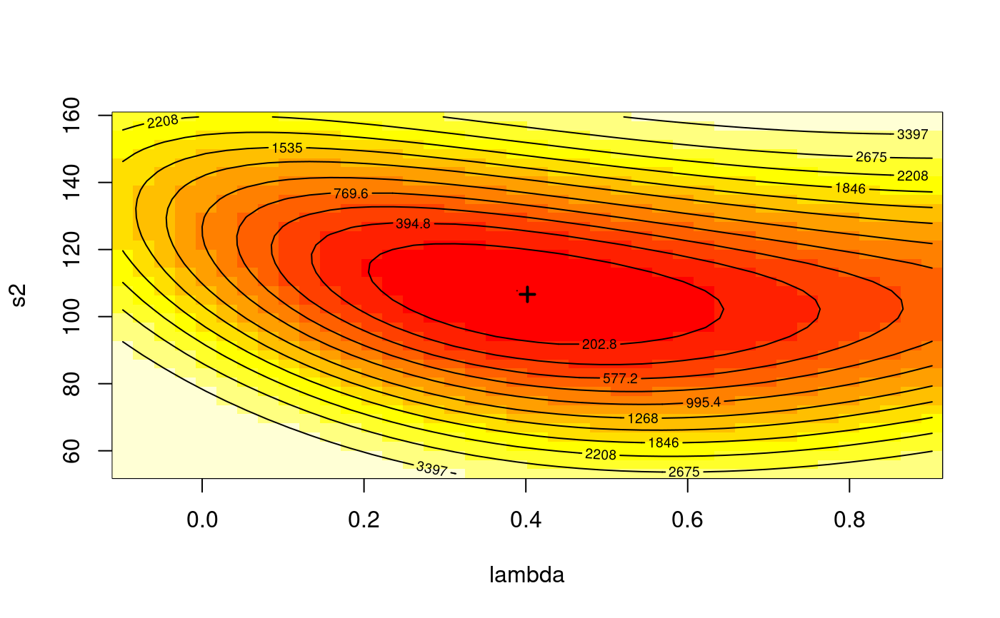

spdep-deprecated.RdThese functions are provided for compatibility with older versions of spdep only, and may be defunct as soon as the next release. The functions have been moved to the spatialreg package.
lextrB(lw, zero.policy = TRUE, control = list())
lextrW(lw, zero.policy=TRUE, control=list())
lextrS(lw, zero.policy=TRUE, control=list())
l_max(lw, zero.policy=TRUE, control=list())
griffith_sone(P, Q, type="rook")
subgraph_eigenw(nb, glist=NULL, style="W", zero.policy=NULL, quiet=NULL)
mom_calc(lw, m)
mom_calc_int2(is, m, nb, weights, Card)
stsls(formula, data = list(), listw, zero.policy = NULL,
na.action = na.fail, robust = FALSE, HC=NULL, legacy=FALSE, W2X = TRUE)
# S3 method for stsls
impacts(obj, …, tr, R = NULL, listw = NULL, evalues=NULL,
tol = 1e-06, empirical = FALSE, Q=NULL)
GMerrorsar(formula, data = list(), listw, na.action = na.fail,
zero.policy = NULL, method="nlminb", arnoldWied=FALSE,
control = list(), pars=NULL, scaleU=FALSE, verbose=NULL, legacy=FALSE,
se.lambda=TRUE, returnHcov=FALSE, pWOrder=250, tol.Hcov=1.0e-10)
# S3 method for gmsar
summary(object, correlation = FALSE, Hausman=FALSE, ...)
GMargminImage(obj, lambdaseq, s2seq)
gstsls(formula, data = list(), listw, listw2 = NULL, na.action = na.fail,
zero.policy = NULL, pars=NULL, scaleU=FALSE, control = list(),
verbose=NULL, method="nlminb", robust=FALSE, legacy=FALSE, W2X=TRUE)
# S3 method for gmsar
impacts(obj, …, n = NULL, tr = NULL, R = NULL,
listw = NULL, evalues=NULL, tol = 1e-06, empirical = FALSE, Q=NULL)
# S3 method for gmsar
Hausman.test(object, ..., tol=NULL)
lagmess(formula, data = list(), listw, zero.policy = NULL, na.action = na.fail,
q = 10, start = -2.5, control=list(), method="BFGS", verbose=NULL,
use_expm=FALSE)
ME(formula, data=list(), family = gaussian, weights, offset,
na.action=na.fail, listw=NULL, alpha=0.05, nsim=99, verbose=NULL,
stdev=FALSE, zero.policy = NULL)
SpatialFiltering(formula, lagformula=NULL, data=list(), na.action=na.fail,
nb=NULL, glist = NULL, style = "C", zero.policy = NULL, tol = 0.1,
zerovalue = 1e-04, ExactEV = FALSE, symmetric = TRUE, alpha=NULL,
alternative="two.sided", verbose=NULL)
LR.sarlm(x, y)
# S3 method for sarlm
logLik(object, ...)
LR1.sarlm(object)
Wald1.sarlm(object)
# S3 method for sarlm
Hausman.test(object, ..., tol=NULL)
as.spam.listw(listw)
as_dgRMatrix_listw(listw)
as_dsTMatrix_listw(listw)
as_dsCMatrix_I(n)
as_dsCMatrix_IrW(W, rho)
Jacobian_W(W, rho)
powerWeights(W, rho, order=250, X, tol=.Machine$double.eps^(3/5))
# S3 method for lagImpact
plot(x, ..., choice="direct", trace=FALSE, density=TRUE)
# S3 method for lagImpact
print(x, ..., reportQ=NULL)
# S3 method for lagImpact
summary(object, ..., zstats=FALSE, short=FALSE, reportQ=NULL)
# S3 method for lagImpact
HPDinterval(obj, prob = 0.95, ..., choice="direct")
intImpacts(rho, beta, P, n, mu, Sigma, irho, drop2beta, bnames, interval,
type, tr, R, listw, evalues, tol, empirical, Q, icept, iicept, p, mess=FALSE,
samples=NULL, zero_fill = NULL, dvars = NULL)
can.be.simmed(listw)
eigenw(listw, quiet=NULL)
similar.listw(listw)
do_ldet(coef, env, which=1)
jacobianSetup(method, env, con, pre_eig=NULL, trs=NULL, interval=NULL, which=1)
cheb_setup(env, q=5, which=1)
mcdet_setup(env, p=16, m=30, which=1)
eigen_setup(env, which=1)
eigen_pre_setup(env, pre_eig, which=1)
spam_setup(env, pivot="MMD", which=1)
spam_update_setup(env, in_coef=0.1, pivot="MMD", which=1)
Matrix_setup(env, Imult, super=as.logical(NA), which=1)
Matrix_J_setup(env, super=FALSE, which=1)
LU_setup(env, which=1)
LU_prepermutate_setup(env, coef=0.1, order=FALSE, which=1)
moments_setup(env, trs=NULL, m, p, type="MC", correct=TRUE, trunc=TRUE, eq7=TRUE, which=1)
SE_classic_setup(env, SE_method="LU", p=16, m=30, nrho=200, interpn=2000,
interval=c(-1,0.999), SElndet=NULL, which=1)
SE_whichMin_setup(env, SE_method="LU", p=16, m=30, nrho=200, interpn=2000,
interval=c(-1,0.999), SElndet=NULL, which=1)
SE_interp_setup(env, SE_method="LU", p=16, m=30, nrho=200,
interval=c(-1,0.999), which=1)
MCMCsamp(object, mcmc = 1L, verbose = NULL, ...)
# S3 method for spautolm
MCMCsamp(object, mcmc = 1L, verbose = NULL, ...,
burnin = 0L, scale=1, listw, control = list())
# S3 method for sarlm
MCMCsamp(object, mcmc = 1L, verbose = NULL, ...,
burnin=0L, scale=1, listw, listw2=NULL, control=list())
spautolm(formula, data = list(), listw, weights,
na.action, family = "SAR", method="eigen", verbose = NULL, trs=NULL,
interval=NULL, zero.policy = NULL, tol.solve=.Machine$double.eps,
llprof=NULL, control=list())
# S3 method for spautolm
summary(object, correlation = FALSE, adj.se=FALSE,
Nagelkerke=FALSE, ...)
spBreg_sac(formula, data = list(), listw, listw2=NULL, na.action,
Durbin, type, zero.policy=NULL, control=list())
# S3 method for MCMC_sar_g
impacts(obj, ..., tr=NULL, listw=NULL, evalues=NULL, Q=NULL)
# S3 method for MCMC_sem_g
impacts(obj, ..., tr=NULL, listw=NULL, evalues=NULL, Q=NULL)
# S3 method for MCMC_sac_g
impacts(obj, ..., tr=NULL, listw=NULL, evalues=NULL, Q=NULL)
spBreg_err(formula, data = list(), listw, na.action, Durbin, etype,
zero.policy=NULL, control=list())
spBreg_lag(formula, data = list(), listw, na.action, Durbin, type,
zero.policy=NULL, control=list())
# S3 method for SLX
predict(object, newdata, listw, zero.policy=NULL, ...)
lmSLX(formula, data = list(), listw, na.action, weights=NULL,
Durbin=TRUE, zero.policy=NULL)
# S3 method for SLX
impacts(obj, ...)
create_WX(x, listw, zero.policy=NULL, prefix="")
# S3 method for sarlm
anova(object, ...)
bptest.sarlm(object, varformula=NULL, studentize = TRUE, data=list())
errorsarlm(formula, data=list(), listw, na.action, weights=NULL,
Durbin, etype, method="eigen", quiet=NULL, zero.policy=NULL,
interval = NULL, tol.solve=1.0e-10, trs=NULL, control=list())
# S3 method for sarlm
impacts(obj, …, tr, R = NULL, listw = NULL, evalues=NULL,
useHESS = NULL, tol = 1e-06, empirical = FALSE, Q=NULL)
lagsarlm(formula, data = list(), listw,
na.action, Durbin, type, method="eigen", quiet=NULL,
zero.policy=NULL, interval=NULL, tol.solve=1.0e-10, trs=NULL,
control=list())
# S3 method for sarlm
predict(object, newdata = NULL, listw = NULL, pred.type = "TS", all.data = FALSE,
zero.policy = NULL, legacy = TRUE, legacy.mixed = FALSE, power = NULL, order = 250,
tol = .Machine$double.eps^(3/5), spChk = NULL, ...)
# S3 method for sarlm.pred
print(x, ...)
# S3 method for sarlm.pred
as.data.frame(x, ...)
# S3 method for sarlm
residuals(object, ...)
# S3 method for sarlm
deviance(object, ...)
# S3 method for sarlm
coef(object, ...)
# S3 method for sarlm
vcov(object, ...)
# S3 method for sarlm
fitted(object, ...)
sacsarlm(formula, data = list(), listw, listw2 = NULL, na.action, Durbin, type,
method = "eigen", quiet = NULL, zero.policy = NULL, tol.solve = 1e-10,
llprof=NULL, interval1=NULL, interval2=NULL, trs1=NULL, trs2=NULL,
control = list())
# S3 method for sarlm
summary(object, correlation = FALSE, Nagelkerke = FALSE, Hausman=FALSE, adj.se=FALSE, ...)
# S3 method for sarlm
print(x, ...)
# S3 method for summary.sarlm
print(x, digits = max(5, .Options$digits - 3),
signif.stars = FALSE, ...)
trW(W=NULL, m = 30, p = 16, type = "mult", listw=NULL, momentsSymmetry=TRUE)
| lw | a binary symmetric |
|---|---|
| zero.policy | default NULL, use global option value; if TRUE assign zero to the lagged value of zones without neighbours, if FALSE assign NA |
| control | a list of control arguments |
| quiet | default NULL, use global !verbose option value; set to FALSE for short summary |
| P | number of columns in the grid (number of units in a horizontal axis direction) |
| Q | number of rows in the grid (number of units in a vertical axis direction.) |
| type | “rook” or “queen” |
| nb | an object of class |
| glist | list of general weights corresponding to neighbours |
| style |
|
| m | The number of powers; must be an even number for ‘type’=“moments” (default changed from 100 to 30 (2010-11-17)) |
| is | (used internally only in |
| weights | (used internally only in |
| Card | (used internally only in |
| formula | a symbolic description of the model to be fit. The details
of model specification are given for |
| data | an optional data frame containing the variables in the model. By default the variables are taken from the environment which the function is called. |
| listw | a |
| na.action | a function (default |
| robust | default FALSE, if TRUE, apply a heteroskedasticity correction to the coefficients covariances |
| HC | default NULL, if |
| legacy | the argument chooses between two implementations of the robustness correction: default FALSE - use the estimate of Omega only in the White consistent estimator of the variance-covariance matrix, if TRUE, use the original implementation which runs a GLS using the estimate of Omega, and yields different coefficient estimates as well - see example below |
| W2X | default TRUE, if FALSE only WX are used as instruments in the spatial two stage least squares; until release 0.4-60, only WX were used - see example below |
| obj | A spatial regression object created by |
| ... | Arguments passed through to methods in the coda package |
| tr | A vector of traces of powers of the spatial weights matrix created using |
| evalues | vector of eigenvalues of spatial weights matrix for impacts calculations |
| n | defaults to |
| R | If given, simulations are used to compute distributions for the impact measures, returned as |
| tol | Argument passed to |
| empirical | Argument passed to |
| listw2 | a |
| pars | starting values for \(\lambda\) and \(\sigma^2\) for GMM optimisation, if missing (default), approximated from initial 2sls model as the autocorrelation coefficient corrected for weights style and model sigma squared |
| scaleU | Default FALSE: scale the OLS residuals before computing the moment matrices; only used if the |
| method | default |
| arnoldWied | default FALSE |
| returnHcov | default FALSE, return the Vo matrix for a spatial Hausman test |
| tol.Hcov | the tolerance for computing the Vo matrix (default=1.0e-10) |
| pWOrder | default 250, if returnHcov=TRUE, pass this order to |
| lambdaseq | if given, an increasing sequence of lambda values for gridding |
| s2seq | if given, an increasing sequence of sigma squared values for gridding |
| object |
|
| correlation | logical; (default=FALSE), TRUE not available |
| Hausman | if TRUE, the results of the Hausman test for error models are reported |
| se.lambda | default TRUE, use the analytical method described in http://econweb.umd.edu/~prucha/STATPROG/OLS/desols.pdf |
| verbose | default NULL, use global option value; if TRUE, reports function values during optimization. |
| q | default 10; number of powers of the spatial weights to use |
| start | starting value for numerical optimization, should be a small negative number |
| use_expm | default FALSE; if TRUE use |
| family | a description of the error distribution and link function to be used in the model |
| offset | this can be used to specify an a priori known component to be included in the linear predictor during fitting |
| alpha | used as a stopping rule to choose all eigenvectors up to and including the one with a p-value exceeding alpha |
| nsim | number of permutations for permutation bootstrap for finding p-values |
| stdev | if TRUE, p-value calculated from bootstrap permutation standard deviate using |
| lagformula | An extra one-sided formula to be used when a spatial lag representation is desired; the intercept is excluded within the function if present because it is part of the formula argument, but excluding it explicitly in the lagformula argument in the presence of factors generates a collinear model matrix |
| zerovalue | eigenvectors with eigenvalues of an absolute value smaller than zerovalue will be excluded in eigenvector search |
| ExactEV | Set ExactEV=TRUE to use exact expectations and variances rather than the expectation and variance of Moran's I from the previous iteration, default FALSE |
| symmetric | Should the spatial weights matrix be forced to symmetry, default TRUE |
| alternative | a character string specifying the alternative hypothesis, must be one of greater, less or two.sided (default). |
| x | a |
| y | a |
| W | a |
| rho | spatial regression coefficient |
| order | Power series maximum limit |
| X | A numerical matrix |
| choice | One of three impacts: direct, indirect, or total |
| trace | Argument passed to |
| density | Argument passed to |
| prob | Argument passed to |
| beta, mu, Sigma, irho, drop2beta, bnames, interval, icept, iicept, p, mess, samples, zero_fill, dvars | internal arguments shared inside impacts methods |
| reportQ | default NULL; if TRUE and |
| zstats | default FALSE, if TRUE, also return z-values and p-values for the impacts based on the simulations |
| short | default FALSE, if TRUE passed to the print summary method to omit printing of the mcmc summaries |
| coef | spatial coefficient value |
| env | environment containing pre-computed objects, fixed after assignment in setup functions |
| which | default 1; if 2, use second listw object |
| con | control list passed from model fitting function and parsed in |
| pre_eig | pre-computed eigenvalues of length n |
| pivot | default “MMD”, may also be “RCM” for Cholesky decompisition using spam |
| in_coef | fill-in initiation coefficient value, default 0.1 |
| Imult | see |
| super | see |
| trs, trs1, trs2 | A numeric vector of |
| correct | default TRUE: use Smirnov correction term, see |
| trunc | default TRUE: truncate Smirnov correction term, see |
| eq7 | default TRUE |
| SE_method | default “LU”, alternatively “MC”; underlying lndet method to use for generating SE toolbox emulation grid |
| nrho | default 200, number of lndet values in first stage SE toolbox emulation grid |
| interval1, interval2 | default c(-1,0.999) if interval argument NULL, bounds for SE toolbox emulation grid |
| interpn | default 2000, number of lndet values to interpolate in second stage SE toolbox emulation grid |
| SElndet | default NULL, used to pass a pre-computed two-column matrix of coefficient values and corresponding interpolated lndet values |
| mcmc | The number of MCMC iterations after burnin |
| burnin | The number of burn-in iterations for the sampler |
| scale | a positive scale parameter |
| tol.solve | the tolerance for detecting linear dependencies in the columns of matrices to be inverted - passed to |
| llprof | default NULL, can either be an integer, to divide the feasible range into llprof points, or a sequence of spatial coefficient values, at which to evaluate the likelihood function |
| adj.se | if TRUE, adjust the coefficient standard errors for the number of fitted coefficients |
| Nagelkerke | if TRUE, the Nagelkerke pseudo R-squared is reported |
| Durbin | default FALSE (spatial lag model); if TRUE, full spatial Durbin model; if a formula object, the subset of explanatory variables to lag |
| etype | (use the ‘Durbin=’ argument - retained for backwards compatibility only) default "error", may be set to "emixed" to include the spatially lagged independent variables added to X; when "emixed", the lagged intercept is dropped for spatial weights style "W", that is row-standardised weights, but otherwise included |
| newdata | data frame in which to predict --- if NULL, predictions are for the data on which the model was fitted. Should have row names corresponding to region.id. If row names are exactly the same than the ones used for training, it uses in-sample predictors for forecast. See ‘Details’ |
| prefix | default empty string, may be “lag” in some cases |
| varformula | a formula describing only the potential explanatory variables for the variance (no dependent variable needed). By default the same explanatory variables are taken as in the main regression model |
| studentize | logical. If set to |
| useHESS, pred.type, all.data, legacy.mixed, power, spChk, digits, signif.stars | other arguments in deprecated functions |
| momentsSymmetry | default TRUE; assert Smirnov/Anselin symmetry assumption |
Model-fitting functions and functions supporting model fitting are being moved to the spatialreg package.
data(boston, package="spData") ab.listb <- nb2listw(boston.soi, style="B") er <- range(eigenw(ab.listb))#> Warning: Function eigenw moved to the spatialreg packageer#> [1] -3.039465 5.306204res_1 <- lextrB(ab.listb)#> Warning: Function lextrB moved to the spatialreg packagec(res_1)#> lambda_n lambda_1 #> -3.039374 5.306203run <- FALSE if (require("RSpectra", quietly=TRUE)) run <- TRUE if (run) { B <- as(ab.listb, "CsparseMatrix") eigs(B, k=1, which="SR")$values }#> [1] -3.039465#> [1] 5.306204#> Warning: Function l_max moved to the spatialreg package#> [1] 5#> Warning: Function eigenw moved to the spatialreg package#> [1] 5#> Warning: Function l_max moved to the spatialreg package#> [1] 1#> Warning: Function eigenw moved to the spatialreg package#> [1] 1#> Warning: Function eigenw moved to the spatialreg package#> Warning: Function similar.listw moved to the spatialreg packageer#> [1] -0.9708644 1.0000000res_1 <- lextrW(ab.listw)#> Warning: Function lextrW moved to the spatialreg packagec(res_1)#> lambda_n lambda_1 #> -0.9708644 0.9999991#> Warning: Function similar.listw moved to the spatialreg package#> [1] -0.9708644#> [1] 1#> Warning: Function eigenw moved to the spatialreg package#> Warning: Function similar.listw moved to the spatialreg packageer#> [1] -0.723495 1.110373res_1 <- lextrS(ab.listw)#> Warning: Function lextrS moved to the spatialreg packagec(res_1)#> lambda_n lambda_1 #> -0.7230376 1.1103694#> Warning: Function similar.listw moved to the spatialreg package#> [1] -0.723495#> [1] 1.110373#> Warning: Function eigenw moved to the spatialreg packagerg_GS <- griffith_sone(P=7, Q=7, type="rook")#> Warning: Function griffith_sone moved to the spatialreg package#> [1] TRUE# subgraphs data(oldcol) crds <- cbind(COL.OLD$X, COL.OLD$Y) k3 <- knn2nb(knearneigh(crds, k=3)) nc <- n.comp.nb(k3) nc$nc#> [1] 2#> #> 1 2 #> 43 6#> Warning: Function eigenw moved to the spatialreg packagek3eigSG <- subgraph_eigenw(k3, style="W")#> Warning: Function subgraph_eigenw moved to the spatialreg package#> [1] TRUE#> Warning: Function lagsarlm moved to the spatialreg package#> #> Call:spatialreg::lagsarlm(formula = formula, data = data, listw = listw, #> na.action = na.action, Durbin = Durbin, type = type, method = method, #> quiet = quiet, zero.policy = zero.policy, interval = interval, #> tol.solve = tol.solve, trs = trs, control = control) #> #> Residuals: #> Min 1Q Median 3Q Max #> -37.68585 -5.35636 0.05421 6.02013 23.20555 #> #> Type: lag #> Coefficients: (asymptotic standard errors) #> Estimate Std. Error z value Pr(>|z|) #> (Intercept) 45.079251 7.177347 6.2808 3.369e-10 #> INC -1.031616 0.305143 -3.3808 0.0007229 #> HOVAL -0.265926 0.088499 -3.0049 0.0026570 #> #> Rho: 0.43102, LR test value: 9.9736, p-value: 0.001588 #> Asymptotic standard error: 0.11768 #> z-value: 3.6626, p-value: 0.00024962 #> Wald statistic: 13.415, p-value: 0.00024962 #> #> Log likelihood: -182.3904 for lag model #> ML residual variance (sigma squared): 95.494, (sigma: 9.7721) #> Number of observations: 49 #> Number of parameters estimated: 5 #> AIC: 374.78, (AIC for lm: 382.75) #> LM test for residual autocorrelation #> test value: 0.31955, p-value: 0.57188 #> #> Correlation of coefficients #> sigma rho (Intercept) INC #> rho -0.14 #> (Intercept) 0.12 -0.83 #> INC -0.05 0.35 -0.61 #> HOVAL -0.01 0.08 -0.25 -0.44 #>#> Warning: Function stsls moved to the spatialreg package#> #> Call:spatialreg::stsls(formula = formula, data = data, listw = listw, #> zero.policy = zero.policy, na.action = na.action, robust = robust, #> HC = HC, legacy = legacy, W2X = W2X) #> #> Residuals: #> Min 1Q Median 3Q Max #> -37.86437 -5.65096 -0.13669 6.23315 22.90823 #> #> Coefficients: #> Estimate Std. Error t value Pr(>|t|) #> Rho 0.454567 0.185118 2.4555 0.014067 #> (Intercept) 43.793442 10.952229 3.9986 6.372e-05 #> INC -1.000716 0.383858 -2.6070 0.009134 #> HOVAL -0.265489 0.091852 -2.8904 0.003847 #> #> Residual variance (sigma squared): 103.44, (sigma: 10.171) #> #> Correlation of Coefficients: #> [,1] [,2] [,3] #> [1,] -0.92 #> [2,] 0.63 -0.76 #> [3,] 0.04 -0.16 -0.36 #>#> Warning: Function stsls moved to the spatialreg package#> #> Call:spatialreg::stsls(formula = formula, data = data, listw = listw, #> zero.policy = zero.policy, na.action = na.action, robust = robust, #> HC = HC, legacy = legacy, W2X = W2X) #> #> Residuals: #> Min 1Q Median 3Q Max #> -37.785778 -5.442414 -0.052649 6.170104 23.039123 #> #> Coefficients: #> Estimate Std. Error t value Pr(>|t|) #> Rho 0.444202 0.189141 2.3485 0.018848 #> (Intercept) 44.359512 11.157079 3.9759 7.011e-05 #> INC -1.014319 0.387469 -2.6178 0.008850 #> HOVAL -0.265681 0.091954 -2.8893 0.003861 #> #> Residual variance (sigma squared): 103.67, (sigma: 10.182) #> #> Correlation of Coefficients: #> [,1] [,2] [,3] #> [1,] -0.93 #> [2,] 0.64 -0.77 #> [3,] 0.04 -0.16 -0.36 #>COL.lag.stslsR <- stsls(CRIME ~ INC + HOVAL, data=COL.OLD, nb2listw(COL.nb), robust=TRUE, W2X=FALSE)#> Warning: Function stsls moved to the spatialreg package#> #> Call:spatialreg::stsls(formula = formula, data = data, listw = listw, #> zero.policy = zero.policy, na.action = na.action, robust = robust, #> HC = HC, legacy = legacy, W2X = W2X) #> #> Residuals: #> Min 1Q Median 3Q Max #> -37.785778 -5.442414 -0.052649 6.170104 23.039123 #> #> Coefficients: #> Estimate HC0 std. Error z value Pr(>|z|) #> Rho 0.44420 0.13748 3.2310 0.001234 #> (Intercept) 44.35951 7.67306 5.7812 7.417e-09 #> INC -1.01432 0.44113 -2.2993 0.021486 #> HOVAL -0.26568 0.17353 -1.5311 0.125752 #> #> Residual variance (sigma squared): 103.67, (sigma: 10.182) #> #> Correlation of Coefficients: #> [,1] [,2] [,3] #> [1,] -0.90 #> [2,] 0.15 -0.28 #> [3,] 0.24 -0.24 -0.83 #>COL.lag.stslsRl <- stsls(CRIME ~ INC + HOVAL, data=COL.OLD, nb2listw(COL.nb), robust=TRUE, legacy=TRUE, W2X=FALSE)#> Warning: Function stsls moved to the spatialreg package#> #> Call:spatialreg::stsls(formula = formula, data = data, listw = listw, #> zero.policy = zero.policy, na.action = na.action, robust = robust, #> HC = HC, legacy = legacy, W2X = W2X) #> #> Residuals: #> Min 1Q Median 3Q Max #> -38.654607 -5.141303 -0.065221 5.864384 23.671589 #> #> Coefficients: #> Estimate HC0 std. Error z value Pr(>|z|) #> Rho 0.40138 0.13554 2.9613 0.003064 #> (Intercept) 47.37696 7.49975 6.3171 2.664e-10 #> INC -1.15183 0.43490 -2.6485 0.008085 #> HOVAL -0.25047 0.17333 -1.4450 0.148461 #> #> Asymptotic robust residual variance: 96.446, (sigma: 9.8207) #> #> Correlation of Coefficients: #> Rho (Intercept) INC #> (Intercept) -0.89 #> INC 0.12 -0.26 #> HOVAL 0.25 -0.26 -0.83 #>data(boston, package="spData") gp2a <- stsls(log(CMEDV) ~ CRIM + ZN + INDUS + CHAS + I(NOX^2) + I(RM^2) + AGE + log(DIS) + log(RAD) + TAX + PTRATIO + B + log(LSTAT), data=boston.c, nb2listw(boston.soi))#> Warning: Function stsls moved to the spatialreg packagesummary(gp2a)#> #> Call:spatialreg::stsls(formula = formula, data = data, listw = listw, #> zero.policy = zero.policy, na.action = na.action, robust = robust, #> HC = HC, legacy = legacy, W2X = W2X) #> #> Residuals: #> Min 1Q Median 3Q Max #> -0.5356002 -0.0758562 -0.0045074 0.0719613 0.7128012 #> #> Coefficients: #> Estimate Std. Error t value Pr(>|t|) #> Rho 4.5925e-01 3.8485e-02 11.9330 < 2.2e-16 #> (Intercept) 2.4025e+00 2.1710e-01 11.0661 < 2.2e-16 #> CRIM -7.3557e-03 1.0345e-03 -7.1100 1.160e-12 #> ZN 3.6435e-04 3.9311e-04 0.9268 0.3540112 #> INDUS 1.1992e-03 1.8365e-03 0.6530 0.5137794 #> CHAS1 1.1929e-02 2.6632e-02 0.4479 0.6542202 #> I(NOX^2) -2.8874e-01 9.2546e-02 -3.1199 0.0018091 #> I(RM^2) 6.6991e-03 1.0192e-03 6.5728 4.938e-11 #> AGE -2.5810e-04 4.0940e-04 -0.6304 0.5284073 #> log(DIS) -1.6043e-01 2.6107e-02 -6.1451 7.993e-10 #> log(RAD) 7.1704e-02 1.4926e-02 4.8038 1.557e-06 #> TAX -3.6857e-04 9.5315e-05 -3.8668 0.0001103 #> PTRATIO -1.2957e-02 4.1334e-03 -3.1347 0.0017203 #> B 2.8845e-04 8.0266e-05 3.5937 0.0003261 #> log(LSTAT) -2.3984e-01 2.2470e-02 -10.6740 < 2.2e-16 #> #> Residual variance (sigma squared): 0.020054, (sigma: 0.14161) #>columbus <- st_read(system.file("shapes/columbus.shp", package="spData")[1], quiet=TRUE) col.gal.nb <- read.gal(system.file("weights/columbus.gal", package="spData")[1]) listw <- nb2listw(col.gal.nb) ev <- eigenw(listw)#> Warning: Function eigenw moved to the spatialreg packageW <- as(listw, "CsparseMatrix") trMatc <- trW(W, type="mult")#> Warning: Function trW moved to the spatialreg packagelobj1 <- stsls(CRIME ~ INC + HOVAL, columbus, listw)#> Warning: Function stsls moved to the spatialreg packageloobj1 <- impacts(lobj1, R=200, tr=trMatc)#> Warning: Method impacts.stsls moved to the spatialreg package#> Impact measures (lag, trace): #> Direct Indirect Total #> INC -1.0687585 -0.7790438 -1.8478023 #> HOVAL -0.2858263 -0.2083456 -0.4941719 #> ======================================================== #> Simulation results (asymptotic IV variance matrix): #> ======================================================== #> Simulated standard errors #> Direct Indirect Total #> INC 0.3833054 0.6408773 0.7336408 #> HOVAL 0.1126221 0.3781130 0.4465499 #> #> Simulated z-values: #> Direct Indirect Total #> INC -2.977383 -1.280411 -2.674106 #> HOVAL -2.460163 -0.669858 -1.187663 #> #> Simulated p-values: #> Direct Indirect Total #> INC 0.0029072 0.20040 0.0074929 #> HOVAL 0.0138874 0.50295 0.2349663loobj2 <- impacts(lobj1, R=200, evalues=ev)#> Warning: Method impacts.stsls moved to the spatialreg package#> Impact measures (lag, evalues): #> Direct Indirect Total #> INC -1.0687585 -0.7790438 -1.8478023 #> HOVAL -0.2858263 -0.2083456 -0.4941719 #> ======================================================== #> Simulation results (asymptotic IV variance matrix): #> ======================================================== #> Simulated standard errors #> Direct Indirect Total #> INC 0.3964227 0.7691177 0.8362879 #> HOVAL 0.1144574 0.6738556 0.7461251 #> #> Simulated z-values: #> Direct Indirect Total #> INC -2.733541 -1.0994183 -2.306884 #> HOVAL -2.655041 -0.5035996 -0.862111 #> #> Simulated p-values: #> Direct Indirect Total #> INC 0.0062657 0.27159 0.021061 #> HOVAL 0.0079299 0.61454 0.388626#> lower upper #> INC -1.8292631 -0.41325825 #> HOVAL -0.4678402 -0.07078306 #> attr(,"Probability") #> [1] 0.95lobj1r <- stsls(CRIME ~ INC + HOVAL, columbus, listw, robust=TRUE)#> Warning: Function stsls moved to the spatialreg packageloobj1r <- impacts(lobj1r, tr=trMatc, R=200)#> Warning: Method impacts.stsls moved to the spatialreg package#> Impact measures (lag, trace): #> Direct Indirect Total #> INC -1.0687585 -0.7790438 -1.8478023 #> HOVAL -0.2858263 -0.2083456 -0.4941719 #> ======================================================== #> Simulation results (HC0 IV variance matrix): #> ======================================================== #> Simulated standard errors #> Direct Indirect Total #> INC 0.4848589 0.6892460 1.0399787 #> HOVAL 0.1901246 0.2900869 0.4284061 #> #> Simulated z-values: #> Direct Indirect Total #> INC -2.306476 -1.2912514 -1.931103 #> HOVAL -1.443943 -0.7510664 -1.149385 #> #> Simulated p-values: #> Direct Indirect Total #> INC 0.021084 0.19662 0.05347 #> HOVAL 0.148755 0.45261 0.25040data(oldcol) COL.errW.eig <- errorsarlm(CRIME ~ INC + HOVAL, data=COL.OLD, nb2listw(COL.nb, style="W"), method="eigen")#> Warning: Function errorsarlm moved to the spatialreg package#> #> Call:spatialreg::errorsarlm(formula = formula, data = data, listw = listw, #> na.action = na.action, Durbin = Durbin, etype = etype, method = method, #> quiet = quiet, zero.policy = zero.policy, interval = interval, #> tol.solve = tol.solve, trs = trs, control = control) #> #> Residuals: #> Min 1Q Median 3Q Max #> -34.81174 -6.44031 -0.72142 7.61476 23.33626 #> #> Type: error #> Coefficients: (asymptotic standard errors) #> Estimate Std. Error z value Pr(>|z|) #> (Intercept) 59.893219 5.366163 11.1613 < 2.2e-16 #> INC -0.941312 0.330569 -2.8476 0.0044057 #> HOVAL -0.302250 0.090476 -3.3407 0.0008358 #> #> Lambda: 0.56179, LR test value: 7.9935, p-value: 0.0046945 #> Asymptotic standard error: 0.13387 #> z-value: 4.1966, p-value: 2.7098e-05 #> Wald statistic: 17.611, p-value: 2.7098e-05 #> #> Log likelihood: -183.3805 for error model #> ML residual variance (sigma squared): 95.575, (sigma: 9.7762) #> Number of observations: 49 #> Number of parameters estimated: 5 #> AIC: 376.76, (AIC for lm: 382.75) #> Hausman test: 4.902, df: 3, p-value: 0.17911 #>COL.errW.GM <- GMerrorsar(CRIME ~ INC + HOVAL, data=COL.OLD, nb2listw(COL.nb, style="W"), returnHcov=TRUE)#> Warning: Function GMerrorsar moved to the spatialreg package#> #> Call:spatialreg::GMerrorsar(formula = formula, data = data, listw = listw, #> na.action = na.action, zero.policy = zero.policy, method = method, #> arnoldWied = arnoldWied, control = control, pars = pars, #> scaleU = scaleU, verbose = verbose, legacy = legacy, se.lambda = se.lambda, #> returnHcov = returnHcov, pWOrder = pWOrder, tol.Hcov = tol.Hcov) #> #> Residuals: #> Min 1Q Median 3Q Max #> -30.5432 -6.5553 -2.1921 10.0553 28.7497 #> #> Type: GM SAR estimator #> Coefficients: (GM standard errors) #> Estimate Std. Error z value Pr(>|z|) #> (Intercept) 62.513752 5.121339 12.207 < 2.2e-16 #> INC -1.128283 0.339745 -3.321 0.000897 #> HOVAL -0.296957 0.095699 -3.103 0.001915 #> #> Lambda: 0.40196 (standard error): 0.42334 (z-value): 0.94948 #> Residual variance (sigma squared): 106.64, (sigma: 10.327) #> GM argmin sigma squared: 106.36 #> Number of observations: 49 #> Number of parameters estimated: 5 #> Hausman test: 6.6406, df: 3, p-value: 0.08428 #>aa <- GMargminImage(COL.errW.GM)#> Warning: Function GMargminImage moved to the spatialreg package#> Warning: Function GMerrorsar moved to the spatialreg packagesummary(COL.errW.GM1)#> #> Call:spatialreg::GMerrorsar(formula = formula, data = data, listw = listw, #> na.action = na.action, zero.policy = zero.policy, method = method, #> arnoldWied = arnoldWied, control = control, pars = pars, #> scaleU = scaleU, verbose = verbose, legacy = legacy, se.lambda = se.lambda, #> returnHcov = returnHcov, pWOrder = pWOrder, tol.Hcov = tol.Hcov) #> #> Residuals: #> Min 1Q Median 3Q Max #> -30.5432 -6.5553 -2.1921 10.0553 28.7497 #> #> Type: GM SAR estimator #> Coefficients: (GM standard errors) #> Estimate Std. Error z value Pr(>|z|) #> (Intercept) 62.513752 5.121339 12.207 < 2.2e-16 #> INC -1.128283 0.339745 -3.321 0.000897 #> HOVAL -0.296957 0.095699 -3.103 0.001915 #> #> Lambda: 0.40196 (standard error): 0.42334 (z-value): 0.94948 #> Residual variance (sigma squared): 106.64, (sigma: 10.327) #> GM argmin sigma squared: 106.36 #> Number of observations: 49 #> Number of parameters estimated: 5 #>nydata <- st_read(system.file("shapes/NY8_bna_utm18.gpkg", package="spData")[1], quiet=TRUE) suppressMessages(nyadjmat <- as.matrix(foreign::read.dbf(system.file( "misc/nyadjwts.dbf", package="spData")[1])[-1])) suppressMessages(ID <- as.character(names(foreign::read.dbf(system.file( "misc/nyadjwts.dbf", package="spData")[1]))[-1])) identical(substring(ID, 2, 10), substring(as.character(nydata$AREAKEY), 2, 10))#> [1] TRUEnyadjlw <- mat2listw(nyadjmat, as.character(nydata$AREAKEY)) listw_NY <- nb2listw(nyadjlw$neighbours, style="B") esar1f <- spautolm(Z ~ PEXPOSURE + PCTAGE65P + PCTOWNHOME, data=nydata, listw=listw_NY, family="SAR", method="eigen")#> Warning: Function spautolm moved to the spatialreg packagesummary(esar1f)#> #> Call: spatialreg::spautolm(formula = formula, data = data, listw = listw, #> na.action = na.action, family = family, method = method, #> verbose = verbose, trs = trs, interval = interval, zero.policy = zero.policy, #> tol.solve = tol.solve, llprof = llprof, control = control) #> #> Residuals: #> Min 1Q Median 3Q Max #> -1.56754 -0.38239 -0.02643 0.33109 4.01219 #> #> Coefficients: #> Estimate Std. Error z value Pr(>|z|) #> (Intercept) -0.618193 0.176784 -3.4969 0.0004707 #> PEXPOSURE 0.071014 0.042051 1.6888 0.0912635 #> PCTAGE65P 3.754200 0.624722 6.0094 1.862e-09 #> PCTOWNHOME -0.419890 0.191329 -2.1946 0.0281930 #> #> Lambda: 0.040487 LR test value: 5.2438 p-value: 0.022026 #> Numerical Hessian standard error of lambda: 0.017199 #> #> Log likelihood: -276.1069 #> ML residual variance (sigma squared): 0.41388, (sigma: 0.64333) #> Number of observations: 281 #> Number of parameters estimated: 6 #> AIC: 564.21 #>esar1gm <- GMerrorsar(Z ~ PEXPOSURE + PCTAGE65P + PCTOWNHOME, data=nydata, listw=listw_NY)#> Warning: Function GMerrorsar moved to the spatialreg packagesummary(esar1gm)#> #> Call:spatialreg::GMerrorsar(formula = formula, data = data, listw = listw, #> na.action = na.action, zero.policy = zero.policy, method = method, #> arnoldWied = arnoldWied, control = control, pars = pars, #> scaleU = scaleU, verbose = verbose, legacy = legacy, se.lambda = se.lambda, #> returnHcov = returnHcov, pWOrder = pWOrder, tol.Hcov = tol.Hcov) #> #> Residuals: #> Min 1Q Median 3Q Max #> -1.641411 -0.396370 -0.026618 0.341740 4.204264 #> #> Type: GM SAR estimator #> Coefficients: (GM standard errors) #> Estimate Std. Error z value Pr(>|z|) #> (Intercept) -0.604364 0.174576 -3.4619 0.0005364 #> PEXPOSURE 0.067902 0.041164 1.6496 0.0990337 #> PCTAGE65P 3.775308 0.622965 6.0602 1.359e-09 #> PCTOWNHOME -0.437545 0.188906 -2.3162 0.0205468 #> #> Lambda: 0.03605 (standard error): 0.2022 (z-value): 0.17829 #> Residual variance (sigma squared): 0.41585, (sigma: 0.64487) #> GM argmin sigma squared: 0.45141 #> Number of observations: 281 #> Number of parameters estimated: 6 #>esar1gm1 <- GMerrorsar(Z ~ PEXPOSURE + PCTAGE65P + PCTOWNHOME, data=nydata, listw=listw_NY, method="Nelder-Mead")#> Warning: Function GMerrorsar moved to the spatialreg packagesummary(esar1gm1)#> #> Call:spatialreg::GMerrorsar(formula = formula, data = data, listw = listw, #> na.action = na.action, zero.policy = zero.policy, method = method, #> arnoldWied = arnoldWied, control = control, pars = pars, #> scaleU = scaleU, verbose = verbose, legacy = legacy, se.lambda = se.lambda, #> returnHcov = returnHcov, pWOrder = pWOrder, tol.Hcov = tol.Hcov) #> #> Residuals: #> Min 1Q Median 3Q Max #> -1.641390 -0.396374 -0.026616 0.341745 4.204277 #> #> Type: GM SAR estimator #> Coefficients: (GM standard errors) #> Estimate Std. Error z value Pr(>|z|) #> (Intercept) -0.604384 0.174580 -3.4619 0.0005363 #> PEXPOSURE 0.067907 0.041165 1.6496 0.0990225 #> PCTAGE65P 3.775275 0.622969 6.0601 1.36e-09 #> PCTOWNHOME -0.437518 0.188910 -2.3160 0.0205572 #> #> Lambda: 0.036057 (standard error): 0.20221 (z-value): 0.17832 #> Residual variance (sigma squared): 0.41585, (sigma: 0.64487) #> GM argmin sigma squared: 0.45139 #> Number of observations: 281 #> Number of parameters estimated: 6 #>data(baltimore, package="spData") baltimore$AGE <- ifelse(baltimore$AGE < 1, 1, baltimore$AGE) lw <- nb2listw(knn2nb(knearneigh(cbind(baltimore$X, baltimore$Y), k=7))) obj1 <- lm(log(PRICE) ~ PATIO + log(AGE) + log(SQFT), data=baltimore) lm.morantest(obj1, lw)#> #> Global Moran I for regression residuals #> #> data: #> model: lm(formula = log(PRICE) ~ PATIO + log(AGE) + log(SQFT), data = #> baltimore) #> weights: lw #> #> Moran I statistic standard deviate = 7.4782, p-value = 3.769e-14 #> alternative hypothesis: greater #> sample estimates: #> Observed Moran I Expectation Variance #> 0.245497850 -0.007859541 0.001147832 #>#> #> Lagrange multiplier diagnostics for spatial dependence #> #> data: #> model: lm(formula = log(PRICE) ~ PATIO + log(AGE) + log(SQFT), data = #> baltimore) #> weights: lw #> #> LMerr = 48.823, df = 1, p-value = 2.802e-12 #> #> #> Lagrange multiplier diagnostics for spatial dependence #> #> data: #> model: lm(formula = log(PRICE) ~ PATIO + log(AGE) + log(SQFT), data = #> baltimore) #> weights: lw #> #> LMlag = 83.434, df = 1, p-value < 2.2e-16 #> #> #> Lagrange multiplier diagnostics for spatial dependence #> #> data: #> model: lm(formula = log(PRICE) ~ PATIO + log(AGE) + log(SQFT), data = #> baltimore) #> weights: lw #> #> RLMerr = 1.2309, df = 1, p-value = 0.2672 #> #> #> Lagrange multiplier diagnostics for spatial dependence #> #> data: #> model: lm(formula = log(PRICE) ~ PATIO + log(AGE) + log(SQFT), data = #> baltimore) #> weights: lw #> #> RLMlag = 35.843, df = 1, p-value = 2.139e-09 #> #> #> Lagrange multiplier diagnostics for spatial dependence #> #> data: #> model: lm(formula = log(PRICE) ~ PATIO + log(AGE) + log(SQFT), data = #> baltimore) #> weights: lw #> #> SARMA = 84.665, df = 2, p-value < 2.2e-16 #>#> Warning: Function lagmess moved to the spatialreg package#> user system elapsed #> 0.039 0.000 0.040summary(obj2)#> Matrix exponential spatial lag model: #> #> Call: #> spatialreg::lagmess(formula = formula, data = data, listw = listw, #> zero.policy = zero.policy, na.action = na.action, q = q, #> start = start, control = control, method = method, verbose = verbose, #> use_expm = use_expm) #> #> Residuals: #> Min 1Q Median 3Q Max #> -2.026015 -0.141654 0.050901 0.224067 1.072942 #> #> Coefficients: #> Estimate Std. Error t value Pr(>|t|) #> (Intercept) 1.549087 0.214465 7.2230 9.553e-12 #> PATIO 0.259322 0.086871 2.9851 0.003176 #> log(AGE) -0.148169 0.035244 -4.2041 3.899e-05 #> log(SQFT) 0.300203 0.071582 4.1939 4.066e-05 #> #> Residual standard error: 0.41648 on 207 degrees of freedom #> Multiple R-squared: 0.22384, Adjusted R-squared: 0.21259 #> F-statistic: 19.899 on 3 and 207 DF, p-value: 2.2574e-11 #> #> Alpha: -0.64248, standard error: 0.10411 #> z-value: -6.1711, p-value: 6.7823e-10 #> LR test value: 48.392, p-value: 3.4905e-12 #> Implied rho: 0.474015 #>system.time(obj2a <- lagmess(log(PRICE) ~ PATIO + log(AGE) + log(SQFT), data=baltimore, listw=lw, use_expm=TRUE))#> Warning: Function lagmess moved to the spatialreg package#> user system elapsed #> 0.640 0.000 0.651summary(obj2a)#> Matrix exponential spatial lag model: #> (calculated with expm) #> #> Call: #> spatialreg::lagmess(formula = formula, data = data, listw = listw, #> zero.policy = zero.policy, na.action = na.action, q = q, #> start = start, control = control, method = method, verbose = verbose, #> use_expm = use_expm) #> #> Residuals: #> Min 1Q Median 3Q Max #> -2.026015 -0.141654 0.050901 0.224067 1.072942 #> #> Coefficients: #> Estimate Std. Error t value Pr(>|t|) #> (Intercept) 1.549087 0.214465 7.2230 9.553e-12 #> PATIO 0.259322 0.086871 2.9851 0.003176 #> log(AGE) -0.148169 0.035244 -4.2041 3.899e-05 #> log(SQFT) 0.300203 0.071582 4.1939 4.066e-05 #> #> Residual standard error: 0.41648 on 207 degrees of freedom #> Multiple R-squared: 0.22384, Adjusted R-squared: 0.21259 #> F-statistic: 19.899 on 3 and 207 DF, p-value: 2.2574e-11 #> #> Alpha: -0.64248, standard error: 0.10411 #> z-value: -6.1711, p-value: 6.7823e-10 #> LR test value: 48.392, p-value: 3.4905e-12 #> Implied rho: 0.474015 #>#> Warning: Function lagsarlm moved to the spatialreg packagesummary(obj3)#> #> Call:spatialreg::lagsarlm(formula = formula, data = data, listw = listw, #> na.action = na.action, Durbin = Durbin, type = type, method = method, #> quiet = quiet, zero.policy = zero.policy, interval = interval, #> tol.solve = tol.solve, trs = trs, control = control) #> #> Residuals: #> Min 1Q Median 3Q Max #> -1.968546 -0.147936 0.042912 0.199676 1.076176 #> #> Type: lag #> Coefficients: (asymptotic standard errors) #> Estimate Std. Error z value Pr(>|z|) #> (Intercept) 1.257955 0.320454 3.9255 8.653e-05 #> PATIO 0.244879 0.083432 2.9351 0.0033348 #> log(AGE) -0.131946 0.034502 -3.8243 0.0001311 #> log(SQFT) 0.278307 0.070246 3.9619 7.437e-05 #> #> Rho: 0.5574, LR test value: 52.786, p-value: 3.7192e-13 #> Asymptotic standard error: 0.072691 #> z-value: 7.6681, p-value: 1.7542e-14 #> Wald statistic: 58.8, p-value: 1.7431e-14 #> #> Log likelihood: -110.3622 for lag model #> ML residual variance (sigma squared): 0.15883, (sigma: 0.39853) #> Number of observations: 211 #> Number of parameters estimated: 6 #> AIC: 232.72, (AIC for lm: 283.51) #> LM test for residual autocorrelation #> test value: 8.8042, p-value: 0.0030054 #>data(boston, package="spData") lw <- nb2listw(boston.soi) gp2 <- lagsarlm(log(CMEDV) ~ CRIM + ZN + INDUS + CHAS + I(NOX^2) + I(RM^2) + AGE + log(DIS) + log(RAD) + TAX + PTRATIO + B + log(LSTAT), data=boston.c, lw, method="Matrix")#> Warning: Function lagsarlm moved to the spatialreg packagesummary(gp2)#> #> Call:spatialreg::lagsarlm(formula = formula, data = data, listw = listw, #> na.action = na.action, Durbin = Durbin, type = type, method = method, #> quiet = quiet, zero.policy = zero.policy, interval = interval, #> tol.solve = tol.solve, trs = trs, control = control) #> #> Residuals: #> Min 1Q Median 3Q Max #> -0.5262308 -0.0749699 -0.0044237 0.0713409 0.7122121 #> #> Type: lag #> Coefficients: (asymptotic standard errors) #> Estimate Std. Error z value Pr(>|z|) #> (Intercept) 2.2796e+00 1.7495e-01 13.0302 < 2.2e-16 #> CRIM -7.1045e-03 9.6236e-04 -7.3824 1.554e-13 #> ZN 3.7985e-04 3.8510e-04 0.9864 0.3239507 #> INDUS 1.2572e-03 1.7986e-03 0.6990 0.4845472 #> CHAS1 7.3677e-03 2.5416e-02 0.2899 0.7719059 #> I(NOX^2) -2.6892e-01 8.8026e-02 -3.0550 0.0022508 #> I(RM^2) 6.7243e-03 1.0039e-03 6.6985 2.106e-11 #> AGE -2.7682e-04 4.0062e-04 -0.6910 0.4895829 #> log(DIS) -1.5830e-01 2.5554e-02 -6.1947 5.841e-10 #> log(RAD) 7.0689e-02 1.4616e-02 4.8363 1.323e-06 #> TAX -3.6569e-04 9.3744e-05 -3.9009 9.582e-05 #> PTRATIO -1.2011e-02 3.9599e-03 -3.0330 0.0024211 #> B 2.8432e-04 7.9402e-05 3.5807 0.0003427 #> log(LSTAT) -2.3216e-01 2.0425e-02 -11.3663 < 2.2e-16 #> #> Rho: 0.48537, LR test value: 214.06, p-value: < 2.22e-16 #> Asymptotic standard error: 0.029426 #> z-value: 16.494, p-value: < 2.22e-16 #> Wald statistic: 272.06, p-value: < 2.22e-16 #> #> Log likelihood: 264.0089 for lag model #> ML residual variance (sigma squared): 0.019276, (sigma: 0.13884) #> Number of observations: 506 #> Number of parameters estimated: 16 #> AIC: -496.02, (AIC for lm: -283.96) #> LM test for residual autocorrelation #> test value: 10.74, p-value: 0.0010486 #>gp2a <- lagmess(CMEDV ~ CRIM + ZN + INDUS + CHAS + I(NOX^2) + I(RM^2) + AGE + log(DIS) + log(RAD) + TAX + PTRATIO + B + log(LSTAT), data=boston.c, lw)#> Warning: Function lagmess moved to the spatialreg packagesummary(gp2a)#> Matrix exponential spatial lag model: #> #> Call: #> spatialreg::lagmess(formula = formula, data = data, listw = listw, #> zero.policy = zero.policy, na.action = na.action, q = q, #> start = start, control = control, method = method, verbose = verbose, #> use_expm = use_expm) #> #> Residuals: #> Min 1Q Median 3Q Max #> -17.03755 -2.05386 -0.30295 1.67710 21.82120 #> #> Coefficients: #> Estimate Std. Error t value Pr(>|t|) #> (Intercept) 35.3206850 3.0128759 11.7232 < 2.2e-16 #> CRIM -0.0986056 0.0242819 -4.0609 5.688e-05 #> ZN 0.0198500 0.0098638 2.0124 0.0447222 #> INDUS 0.0071211 0.0461104 0.1544 0.8773301 #> CHAS1 0.8158059 0.6477224 1.2595 0.2084473 #> I(NOX^2) -9.2592911 2.2072427 -4.1950 3.238e-05 #> I(RM^2) 0.2434745 0.0256001 9.5107 < 2.2e-16 #> AGE -0.0040683 0.0102667 -0.3963 0.6920816 #> log(DIS) -5.3974116 0.6514323 -8.2855 1.125e-15 #> log(RAD) 1.7142905 0.3732772 4.5925 5.569e-06 #> TAX -0.0087053 0.0023933 -3.6373 0.0003046 #> PTRATIO -0.4118524 0.0977997 -4.2112 3.021e-05 #> B 0.0056141 0.0020116 2.7908 0.0054614 #> log(LSTAT) -6.1484203 0.4878957 -12.6019 < 2.2e-16 #> #> Residual standard error: 3.5594 on 492 degrees of freedom #> Multiple R-squared: 0.76221, Adjusted R-squared: 0.75593 #> F-statistic: 121.31 on 13 and 492 DF, p-value: < 2.22e-16 #> #> Alpha: -0.41361, standard error: 0.038521 #> z-value: -10.737, p-value: < 2.22e-16 #> LR test value: 121.4, p-value: < 2.22e-16 #> Implied rho: 0.3387434 #>columbus <- st_read(system.file("shapes/columbus.shp", package="spData")[1], quiet=TRUE) col.gal.nb <- read.gal(system.file("weights/columbus.gal", package="spData")[1]) lmbase <- lm(CRIME ~ INC + HOVAL, data=columbus) lagcol <- SpatialFiltering(CRIME ~ 1, ~ INC + HOVAL, data=columbus, nb=col.gal.nb, style="W", alpha=0.1, verbose=TRUE)#> Warning: Function SpatialFiltering moved to the spatialreg package#> Step 0 SelEvec 0 MinMi 0.2123742 ZMinMi 2.681 Pr(ZI) 0.007340246 #> Step 1 SelEvec 6 MinMi 0.1178225 ZMinMi 1.84512 Pr(ZI) 0.06502014 #> Step 2 SelEvec 4 MinMi 0.06242664 ZMinMi 1.494821 Pr(ZI) 0.1349611lagcol#> Step SelEvec Eval MinMi ZMinMi Pr(ZI) R2 gamma #> 0 0 0 0.0000000 0.21237415 2.681000 0.007340246 0.5524040 0.00000 #> 1 1 6 0.7161123 0.11782248 1.845120 0.065020139 0.6038801 25.46181 #> 2 2 4 0.8682938 0.06242664 1.494821 0.134961136 0.6531288 26.68319#> Analysis of Variance Table #> #> Model 1: CRIME ~ INC + HOVAL #> Model 2: CRIME ~ INC + HOVAL + fitted(lagcol) #> Res.Df RSS Df Sum of Sq F Pr(>F) #> 1 46 6014.9 #> 2 44 4661.3 2 1353.6 6.3884 0.003666 ** #> --- #> Signif. codes: 0 ‘***’ 0.001 ‘**’ 0.01 ‘*’ 0.05 ‘.’ 0.1 ‘ ’ 1set.seed(123) lagcol1 <- ME(CRIME ~ INC + HOVAL, data=columbus, family="gaussian", listw=nb2listw(col.gal.nb), alpha=0.1, verbose=TRUE)#> Warning: Function ME moved to the spatialreg package#> eV[,6], I: 0.1178225 ZI: NA, pr(ZI): 0.07 #> eV[,4], I: 0.06242664 ZI: NA, pr(ZI): 0.19lagcol1#> Eigenvector ZI pr(ZI) #> 0 NA NA 0.04 #> 1 6 NA 0.07 #> 2 4 NA 0.19#> Analysis of Variance Table #> #> Model 1: CRIME ~ INC + HOVAL #> Model 2: CRIME ~ INC + HOVAL + fitted(lagcol1) #> Res.Df RSS Df Sum of Sq F Pr(>F) #> 1 46 6014.9 #> 2 44 4661.3 2 1353.6 6.3884 0.003666 ** #> --- #> Signif. codes: 0 ‘***’ 0.001 ‘**’ 0.01 ‘*’ 0.05 ‘.’ 0.1 ‘ ’ 1set.seed(123) lagcol2 <- ME(CRIME ~ INC + HOVAL, data=columbus, family="gaussian", listw=nb2listw(col.gal.nb), alpha=0.1, stdev=TRUE, verbose=TRUE)#> Warning: Function ME moved to the spatialreg package#> eV[,6], I: 0.1178225 ZI: 1.672528, pr(ZI): 0.0472101 #> eV[,4], I: 0.06242664 ZI: 0.9968862, pr(ZI): 0.1594099lagcol2#> Eigenvector ZI pr(ZI) #> 0 NA 2.3241331 0.01005918 #> 1 6 1.6725283 0.04721010 #> 2 4 0.9968862 0.15940988#> Analysis of Variance Table #> #> Model 1: CRIME ~ INC + HOVAL #> Model 2: CRIME ~ INC + HOVAL + fitted(lagcol2) #> Res.Df RSS Df Sum of Sq F Pr(>F) #> 1 46 6014.9 #> 2 44 4661.3 2 1353.6 6.3884 0.003666 ** #> --- #> Signif. codes: 0 ‘***’ 0.001 ‘**’ 0.01 ‘*’ 0.05 ‘.’ 0.1 ‘ ’ 1NA.columbus <- columbus NA.columbus$CRIME[20:25] <- NA COL.ME.NA <- ME(CRIME ~ INC + HOVAL, data=NA.columbus, family="gaussian", listw=nb2listw(col.gal.nb), alpha=0.1, stdev=TRUE, verbose=TRUE, na.action=na.exclude)#> Warning: Function ME moved to the spatialreg package#> eV[,8], I: 0.1426723 ZI: 1.675389, pr(ZI): 0.04692892 #> eV[,1], I: 0.09838877 ZI: 1.006099, pr(ZI): 0.157184COL.ME.NA$na.action#> 20 21 22 23 24 25 #> 20 21 22 23 24 25 #> attr(,"class") #> [1] "exclude"#> #> Call: #> lm(formula = CRIME ~ INC + HOVAL + fitted(COL.ME.NA), data = NA.columbus, #> na.action = na.exclude) #> #> Residuals: #> Min 1Q Median 3Q Max #> -30.1382 -6.0105 0.4095 7.1504 19.9399 #> #> Coefficients: #> Estimate Std. Error t value Pr(>|t|) #> (Intercept) 66.92248 5.28663 12.659 3.33e-15 *** #> INC -1.40484 0.35678 -3.938 0.00034 *** #> HOVAL -0.30446 0.09831 -3.097 0.00366 ** #> fitted(COL.ME.NA)1 29.69422 10.58481 2.805 0.00788 ** #> fitted(COL.ME.NA)2 26.61612 11.29187 2.357 0.02367 * #> --- #> Signif. codes: 0 ‘***’ 0.001 ‘**’ 0.01 ‘*’ 0.05 ‘.’ 0.1 ‘ ’ 1 #> #> Residual standard error: 10.48 on 38 degrees of freedom #> (6 observations deleted due to missingness) #> Multiple R-squared: 0.6294, Adjusted R-squared: 0.5904 #> F-statistic: 16.13 on 4 and 38 DF, p-value: 8.353e-08 #>#nc.sids <- st_read(system.file("shapes/sids.shp", package="spData")[1], quiet=TRUE) #rn <- as.character(nc.sids$FIPS) #ncCC89_nb <- read.gal(system.file("weights/ncCC89.gal", package="spData")[1], # region.id=rn) #ncCR85_nb <- read.gal(system.file("weights/ncCR85.gal", package="spData")[1], # region.id=rn) #glmbase <- glm(SID74 ~ 1, data=nc.sids, offset=log(BIR74), # family="poisson") #set.seed(123) #MEpois1 <- ME(SID74 ~ 1, data=nc.sids, offset=log(BIR74), # family="poisson", listw=nb2listw(ncCR85_nb, style="B"), alpha=0.2, verbose=TRUE) #MEpois1 #glmME <- glm(SID74 ~ 1 + fitted(MEpois1), data=nc.sids, offset=log(BIR74), # family="poisson") #anova(glmME, test="Chisq") #anova(glmbase, glmME, test="Chisq") data(hopkins, package="spData") hopkins_part <- hopkins[21:36,36:21] hopkins_part[which(hopkins_part > 0, arr.ind=TRUE)] <- 1 hopkins.rook.nb <- cell2nb(16, 16, type="rook") glmbase <- glm(c(hopkins_part) ~ 1, family="binomial") set.seed(123) MEbinom1 <- ME(c(hopkins_part) ~ 1, family="binomial", listw=nb2listw(hopkins.rook.nb, style="B"), alpha=0.2, verbose=TRUE)#> Warning: Function ME moved to the spatialreg package#> eV[,2], I: 0.07978424 ZI: NA, pr(ZI): 0.03 #> eV[,54], I: 0.05704227 ZI: NA, pr(ZI): 0.1 #> eV[,8], I: 0.03503459 ZI: NA, pr(ZI): 0.2 #> eV[,1], I: 0.01965434 ZI: NA, pr(ZI): 0.31#> Analysis of Deviance Table #> #> Model: binomial, link: logit #> #> Response: c(hopkins_part) #> #> Terms added sequentially (first to last) #> #> #> Df Deviance Resid. Df Resid. Dev Pr(>Chi) #> NULL 255 292.23 #> fitted(MEbinom1) 4 36.755 251 255.47 2.023e-07 *** #> --- #> Signif. codes: 0 ‘***’ 0.001 ‘**’ 0.01 ‘*’ 0.05 ‘.’ 0.1 ‘ ’ 1#> Analysis of Deviance Table #> #> Model 1: c(hopkins_part) ~ 1 #> Model 2: c(hopkins_part) ~ 1 + fitted(MEbinom1) #> Resid. Df Resid. Dev Df Deviance Pr(>Chi) #> 1 255 292.23 #> 2 251 255.47 4 36.755 2.023e-07 *** #> --- #> Signif. codes: 0 ‘***’ 0.001 ‘**’ 0.01 ‘*’ 0.05 ‘.’ 0.1 ‘ ’ 1columbus <- st_read(system.file("shapes/columbus.shp", package="spData")[1], quiet=TRUE) col.gal.nb <- read.gal(system.file("weights/columbus.gal", package="spData")[1]) lmbase <- lm(CRIME ~ INC + HOVAL, data=columbus) sarcol <- SpatialFiltering(CRIME ~ INC + HOVAL, data=columbus, nb=col.gal.nb, style="W", ExactEV=TRUE)#> Warning: Function SpatialFiltering moved to the spatialreg packagesarcol#> Step SelEvec Eval MinMi ZMinMi Pr(ZI) R2 #> 0 0 0 0.0000000 0.212374153 2.68100025 0.007340246 0.5524040 #> 1 1 5 0.7148326 0.121528166 1.89037770 0.058707464 0.6209393 #> 2 2 3 0.8408661 0.065848648 1.54064108 0.123404165 0.6481722 #> 3 3 1 1.0206316 -0.005424824 1.08514557 0.277857187 0.6726114 #> 4 4 10 0.3658588 -0.039356232 0.80357070 0.421644951 0.7000258 #> 5 5 14 0.1831325 -0.072949543 0.47790213 0.632719864 0.7393770 #> 6 6 11 0.3144120 -0.108332631 0.18566599 0.852706701 0.7611907 #> 7 7 2 0.9157325 -0.153675621 -0.03464097 0.972366030 0.7713163 #> gamma #> 0 0.00000 #> 1 30.34786 #> 2 19.13010 #> 3 -18.12234 #> 4 19.19379 #> 5 22.99586 #> 6 17.12127 #> 7 11.66487#> #> Call: #> lm(formula = CRIME ~ INC + HOVAL + fitted(sarcol), data = columbus) #> #> Coefficients: #> (Intercept) INC HOVAL #> 68.6190 -1.5973 -0.2739 #> fitted(sarcol)vec5 fitted(sarcol)vec3 fitted(sarcol)vec1 #> 30.3479 19.1301 -18.1223 #> fitted(sarcol)vec10 fitted(sarcol)vec14 fitted(sarcol)vec11 #> 19.1938 22.9959 17.1213 #> fitted(sarcol)vec2 #> 11.6649 #>#> Analysis of Variance Table #> #> Model 1: CRIME ~ INC + HOVAL #> Model 2: CRIME ~ INC + HOVAL + fitted(sarcol) #> Res.Df RSS Df Sum of Sq F Pr(>F) #> 1 46 6014.9 #> 2 39 3073.1 7 2941.8 5.3334 0.0002445 *** #> --- #> Signif. codes: 0 ‘***’ 0.001 ‘**’ 0.01 ‘*’ 0.05 ‘.’ 0.1 ‘ ’ 1#> #> Global Moran I for regression residuals #> #> data: #> model: lm(formula = CRIME ~ INC + HOVAL + fitted(sarcol), data = #> columbus) #> weights: nb2listw(col.gal.nb) #> #> Moran I statistic standard deviate = -0.034641, p-value = 0.5138 #> alternative hypothesis: greater #> sample estimates: #> Observed Moran I Expectation Variance #> -0.153675621 -0.150918131 0.006336477 #>lagcol <- SpatialFiltering(CRIME ~ 1, ~ INC + HOVAL - 1, data=columbus, nb=col.gal.nb, style="W")#> Warning: Function SpatialFiltering moved to the spatialreg packagelagcol#> Step SelEvec Eval MinMi ZMinMi Pr(ZI) R2 #> 0 0 0 0.0000000 0.21237415 2.68100025 0.007340246 0.5524040 #> 1 1 6 0.7161123 0.11782248 1.84511963 0.065020139 0.6038801 #> 2 2 4 0.8682938 0.06242664 1.49482111 0.134961136 0.6531288 #> 3 3 1 1.0310063 -0.02066604 0.88134183 0.378132834 0.6924845 #> 4 4 5 0.7905397 -0.04619973 0.84746904 0.396733736 0.7136578 #> 5 5 15 0.1753342 -0.07609524 0.55233191 0.580720971 0.7558543 #> 6 6 9 0.5501433 -0.10190889 0.43919419 0.660520837 0.7626784 #> 7 7 8 0.5721041 -0.12232942 0.41846803 0.675604953 0.7757314 #> 8 8 3 0.9026222 -0.14991822 0.38315383 0.701605709 0.7908693 #> 9 9 2 0.9649166 -0.21756342 -0.28556733 0.775209527 0.8078727 #> 10 10 7 0.6219404 -0.22017920 -0.04856547 0.961265592 0.8082842 #> gamma #> 0 0.000000 #> 1 19.848854 #> 2 35.542595 #> 3 -30.697851 #> 4 -24.540372 #> 5 25.227798 #> 6 7.590082 #> 7 -16.933168 #> 8 -20.556931 #> 9 -18.434534 #> 10 -2.597572#> #> Call: #> lm(formula = CRIME ~ INC + HOVAL + fitted(lagcol), data = columbus) #> #> Coefficients: #> (Intercept) INC HOVAL #> 56.7977 -0.4857 -0.3821 #> fitted(lagcol)vec6 fitted(lagcol)vec4 fitted(lagcol)vec1 #> 19.8489 35.5426 -30.6979 #> fitted(lagcol)vec5 fitted(lagcol)vec15 fitted(lagcol)vec9 #> -24.5404 25.2278 7.5901 #> fitted(lagcol)vec8 fitted(lagcol)vec3 fitted(lagcol)vec2 #> -16.9332 -20.5569 -18.4345 #> fitted(lagcol)vec7 #> -2.5976 #>#> Analysis of Variance Table #> #> Model 1: CRIME ~ INC + HOVAL #> Model 2: CRIME ~ INC + HOVAL + fitted(lagcol) #> Res.Df RSS Df Sum of Sq F Pr(>F) #> 1 46 6014.9 #> 2 36 2576.3 10 3438.6 4.8049 0.0002165 *** #> --- #> Signif. codes: 0 ‘***’ 0.001 ‘**’ 0.01 ‘*’ 0.05 ‘.’ 0.1 ‘ ’ 1#> #> Global Moran I for regression residuals #> #> data: #> model: lm(formula = CRIME ~ INC + HOVAL + fitted(lagcol), data = #> columbus) #> weights: nb2listw(col.gal.nb) #> #> Moran I statistic standard deviate = -0.048565, p-value = 0.5194 #> alternative hypothesis: greater #> sample estimates: #> Observed Moran I Expectation Variance #> -0.220179195 -0.217083975 0.004061888 #>NA.columbus <- columbus NA.columbus$CRIME[20:25] <- NA COL.SF.NA <- SpatialFiltering(CRIME ~ INC + HOVAL, data=NA.columbus, nb=col.gal.nb, style="W", na.action=na.exclude)#> Warning: Function SpatialFiltering moved to the spatialreg packageCOL.SF.NA$na.action#> 20 21 22 23 24 25 #> 20 21 22 23 24 25 #> attr(,"class") #> [1] "exclude"#> #> Call: #> lm(formula = CRIME ~ INC + HOVAL + fitted(COL.SF.NA), data = NA.columbus, #> na.action = na.exclude) #> #> Residuals: #> Min 1Q Median 3Q Max #> -23.6712 -4.7984 0.1761 6.7460 11.3353 #> #> Coefficients: #> Estimate Std. Error t value Pr(>|t|) #> (Intercept) 69.04674 3.91643 17.630 < 2e-16 *** #> INC -1.60115 0.26017 -6.154 3.88e-07 *** #> HOVAL -0.28742 0.07716 -3.725 0.000649 *** #> fitted(COL.SF.NA)1 -39.91305 8.23597 -4.846 2.27e-05 *** #> fitted(COL.SF.NA)2 19.81805 8.23597 2.406 0.021226 * #> fitted(COL.SF.NA)3 -35.07336 8.23597 -4.259 0.000135 *** #> --- #> Signif. codes: 0 ‘***’ 0.001 ‘**’ 0.01 ‘*’ 0.05 ‘.’ 0.1 ‘ ’ 1 #> #> Residual standard error: 8.236 on 37 degrees of freedom #> (6 observations deleted due to missingness) #> Multiple R-squared: 0.7772, Adjusted R-squared: 0.7471 #> F-statistic: 25.81 on 5 and 37 DF, p-value: 3.996e-11 #>columbus <- st_read(system.file("shapes/columbus.shp", package="spData")[1], quiet=TRUE) col.gal.nb <- read.gal(system.file("weights/columbus.gal", package="spData")[1]) mixed <- lagsarlm(CRIME ~ HOVAL + INC, data=columbus, nb2listw(col.gal.nb), type="mixed")#> Warning: Function lagsarlm moved to the spatialreg package#> Warning: Function errorsarlm moved to the spatialreg packageLR.sarlm(mixed, error)#> Warning: Method LR.sarlm moved to the spatialreg package#> #> Likelihood ratio for spatial linear models #> #> data: #> Likelihood ratio = 4.2782, df = 2, p-value = 0.1178 #> sample estimates: #> Log likelihood of x Log likelihood of y #> -182.0161 -184.1552 #>Hausman.test(error)#> Warning: Method Hausman.test.sarlm moved to the spatialreg package#> #> Spatial Hausman test (asymptotic) #> #> data: NULL #> Hausman test = 6.4729, df = 3, p-value = 0.09074 #>columbus <- st_read(system.file("shapes/columbus.shp", package="spData")[1], quiet=TRUE) col.gal.nb <- read.gal(system.file("weights/columbus.gal", package="spData")[1]) col.listw <- nb2listw(col.gal.nb) if (require("spam", quietly=TRUE)) { col.sp <- as.spam.listw(col.listw) str(col.sp) }#> #> #> #> #>#> #>#> #> #>#> Warning: Function as.spam.listw moved to the spatialreg package#> Formal class 'spam' [package "spam"] with 4 slots #> ..@ entries : num [1:230] 0.5 0.5 0.333 0.333 0.333 ... #> ..@ colindices : int [1:230] 2 3 1 3 4 1 2 4 5 2 ... #> ..@ rowpointers: int [1:50] 1 3 6 10 14 21 23 27 33 41 ... #> ..@ dimension : int [1:2] 49 49suppressMessages(nyadjmat <- as.matrix(foreign::read.dbf(system.file( "misc/nyadjwts.dbf", package="spData")[1])[-1])) nyadjlw <- mat2listw(nyadjmat) listw_NY <- nb2listw(nyadjlw$neighbours, style="B") library(Matrix)#> #>#> #> #>W_C <- as(listw_NY, "CsparseMatrix") W_R <- as(listw_NY, "RsparseMatrix") W_S <- as(listw_NY, "symmetricMatrix") n <- nrow(W_S) I <- Diagonal(n) rho <- 0.1 c(determinant(I - rho * W_S, logarithm=TRUE)$modulus)#> [1] -9.587255#> Warning: Function eigenw moved to the spatialreg package#> [1] -9.587255nW <- - W_S nChol <- Cholesky(nW, Imult=8) n * log(rho) + (2 * c(determinant(update(nChol, nW, 1/rho))$modulus))#> [1] -9.587255nb7rt <- cell2nb(7, 7, torus=TRUE) x <- matrix(sample(rnorm(500*length(nb7rt))), nrow=length(nb7rt)) W <- as(nb2listw(nb7rt), "CsparseMatrix") system.time(ee <- powerWeights(W, rho=0.9, X=x))#> Warning: Function powerWeights moved to the spatialreg package#> user system elapsed #> 0.141 0.009 0.153#all.equal(e, as(ee, "matrix"), check.attributes=FALSE) system.time(e <- invIrM(nb7rt, rho=0.98, method="solve", feasible=NULL) %*% x)#> user system elapsed #> 0.003 0.000 0.003#> Warning: Function powerWeights moved to the spatialreg package#> Warning: not converged within order iterations#> user system elapsed #> 0.211 0.000 0.215#> List of 5 #> $ series: num [1:250] 0.286 0.233 0.2 0.176 0.158 ... #> $ order : num 250 #> $ tol : num 4.05e-10 #> $ iter : num 250 #> $ conv : logi FALSE#> [1] "Mean relative difference: 0.006094514"#> Warning: Function powerWeights moved to the spatialreg package#> user system elapsed #> 0.876 0.012 0.906#> [1] TRUEnb60rt <- cell2nb(60, 60, torus=TRUE) W <- as(nb2listw(nb60rt), "CsparseMatrix") set.seed(1) x <- matrix(rnorm(dim(W)[1]), ncol=1) system.time(ee <- powerWeights(W, rho=0.3, X=x))#> Warning: Function powerWeights moved to the spatialreg package#> user system elapsed #> 0.014 0.000 0.013#> num [1:3600, 1] -0.383 0.207 -0.731 1.552 0.32 ... #> - attr(*, "dimnames")=List of 2 #> ..$ : chr [1:3600] "1:1" "2:1" "3:1" "4:1" ... #> ..$ : NULL#> Warning: Function errorsarlm moved to the spatialreg packagecoefficients(obj)#> lambda (Intercept) #> 0.30639880 0.01380415#> Warning: Function eigenw moved to the spatialreg package#> [1] -1.536177 1.000000#> Warning: Function eigenw moved to the spatialreg package#> [1] -1.7364189 0.8918997#> Warning: Function eigenw moved to the spatialreg package#> [1] -0.3229290 0.1692726# cases for intrinsically asymmetric weights crds <- cbind(COL.OLD$X, COL.OLD$Y) k3 <- knn2nb(knearneigh(crds, k=3)) is.symmetric.nb(k3)#> [1] FALSE#> Warning: Function eigenw moved to the spatialreg packageis.complex(k3eig)#> [1] TRUE#> [1] -1.749705+0iW <- as(nb2listw(k3, style="W"), "CsparseMatrix") I <- diag(length(k3)) Jl <- sum(log(abs(diag(slot(lu(I - rho * W), "U"))))) # LU Jacobian equals complex eigenvalue Jacobian Jl#> [1] -1.749705#> [1] TRUE#> [1] -1.762734#> [1] "Mean relative difference: 0.007391147"# construction of Jacobian from complex conjugate pairs (Jan Hauke) Rev <- Re(k3eig)[which(Im(k3eig) == 0)] # real eigenvalues Cev <- k3eig[which(Im(k3eig) != 0)] pCev <- Cev[Im(Cev) > 0] # separate complex conjugate pairs RpCev <- Re(pCev) IpCev <- Im(pCev) # reassemble Jacobian Jc1 <- sum(log(1 - rho*Rev)) + sum(log((1 - rho * RpCev)^2 + (rho^2)*(IpCev^2))) all.equal(Re(Jc), Jc1)#> [1] TRUE# impact of omitted complex part term in real part only Jacobian Jc2 <- sum(log(1 - rho*Rev)) + sum(log((1 - rho * RpCev)^2)) all.equal(Jr, Jc2)#> [1] TRUE#> [1] 11.55556crossprod(k3eig)#> [,1] #> [1,] 11.55556+0i# analytical regular grid eigenvalues run <- FALSE if (require("RSpectra", quietly=TRUE)) run <- TRUE if (run) { rg <- cell2nb(ncol=7, nrow=7, type="rook") B <- as(nb2listw(rg, style="B"), "CsparseMatrix") res1 <- eigs(B, k=1, which="LR")$values resn <- eigs(B, k=1, which="SR")$values print(Re(c(resn, res1))) }#> [1] -3.695518 3.695518if (run) { rg_eig <- eigenw(nb2listw(rg, style="B")) print(all.equal(range(Re(rg_eig)), c(resn, res1))) }#> Warning: Function eigenw moved to the spatialreg package#> [1] TRUEif (run) { lw <- nb2listw(rg, style="W") rg_eig <- eigenw(similar.listw(lw)) print(range(Re(rg_eig))) }#> Warning: Function eigenw moved to the spatialreg package#> Warning: Function similar.listw moved to the spatialreg package#> [1] -1 1if (run) { W <- as(lw, "CsparseMatrix") print(Re(c(eigs(W, k=1, which="SR")$values, eigs(W, k=1, which="LR")$values))) }#> [1] -1 1data(oldcol) COL.W <- nb2listw(COL.nb, style="W") COL.S <- nb2listw(COL.nb, style="S") sum(log(1 - 0.5 * eigenw(COL.W)))#> Warning: Function eigenw moved to the spatialreg package#> [1] -1.62766#> Warning: Function eigenw moved to the spatialreg package#> Warning: Function similar.listw moved to the spatialreg package#> [1] -1.62766W_J <- as(as_dsTMatrix_listw(similar.listw(COL.W)), "CsparseMatrix")#> Warning: Function as_dsTMatrix_listw moved to the spatialreg package#> Warning: Function similar.listw moved to the spatialreg package#> Warning: Function as_dsCMatrix_I moved to the spatialreg package#> [1] -1.62766#> Warning: Function eigenw moved to the spatialreg package#> [1] -1.602757#> Warning: Function eigenw moved to the spatialreg package#> Warning: Function similar.listw moved to the spatialreg package#> [1] -1.602757W_J <- as(as_dsTMatrix_listw(similar.listw(COL.S)), "CsparseMatrix")#> Warning: Function as_dsTMatrix_listw moved to the spatialreg package#> Warning: Function similar.listw moved to the spatialreg package#> [1] -1.602757#> Warning: Function can.be.simmed moved to the spatialreg packageenv <- new.env(parent=globalenv()) assign("listw", lw, envir=env) assign("can.sim", can.sim, envir=env) assign("similar", FALSE, envir=env) assign("verbose", FALSE, envir=env) assign("family", "SAR", envir=env) eigen_setup(env)#> Warning: Function eigen_setup moved to the spatialreg package#> [1] TRUEdo_ldet(0.5, env)#> Warning: Function do_ldet moved to the spatialreg package#> [1] -18.26702rm(env) env <- new.env(parent=globalenv()) assign("listw", lw, envir=env) assign("can.sim", can.sim, envir=env) assign("similar", FALSE, envir=env) assign("verbose", FALSE, envir=env) assign("family", "SAR", envir=env) assign("n", length(boston.soi), envir=env) eigen_pre_setup(env, pre_eig=eigenw(similar.listw(lw)))#> Warning: Function eigen_pre_setup moved to the spatialreg package#> Warning: Function eigenw moved to the spatialreg package#> Warning: Function similar.listw moved to the spatialreg packagedo_ldet(0.5, env)#> Warning: Function do_ldet moved to the spatialreg package#> [1] -18.26702rm(env) env <- new.env(parent=globalenv()) assign("listw", lw, envir=env) assign("can.sim", can.sim, envir=env) assign("similar", FALSE, envir=env) assign("family", "SAR", envir=env) assign("n", length(boston.soi), envir=env) Matrix_setup(env, Imult=2, super=FALSE)#> Warning: Function Matrix_setup moved to the spatialreg package#> [1] TRUEdo_ldet(0.5, env)#> Warning: Function do_ldet moved to the spatialreg package#> [1] -18.26702rm(env) if (require("spam", quietly=TRUE)) { env <- new.env(parent=globalenv()) assign("listw", lw, envir=env) assign("n", length(boston.soi), envir=env) assign("can.sim", can.sim, envir=env) assign("similar", FALSE, envir=env) assign("family", "SAR", envir=env) spam_setup(env) get("similar", envir=env) do_ldet(0.5, env) rm(env) }#> Warning: Function spam_setup moved to the spatialreg package#> Warning: Function do_ldet moved to the spatialreg packageenv <- new.env(parent=globalenv()) assign("listw", lw, envir=env) assign("n", length(boston.soi), envir=env) assign("similar", FALSE, envir=env) assign("family", "SAR", envir=env) LU_setup(env)#> Warning: Function LU_setup moved to the spatialreg package#> [1] FALSEdo_ldet(0.5, env)#> Warning: Function do_ldet moved to the spatialreg package#> [1] -18.26702rm(env) env <- new.env(parent=globalenv()) assign("listw", lw, envir=env) assign("n", length(boston.soi), envir=env) assign("similar", FALSE, envir=env) assign("family", "SAR", envir=env) LU_prepermutate_setup(env)#> Warning: Function LU_prepermutate_setup moved to the spatialreg package#> [1] FALSEdo_ldet(0.5, env)#> Warning: Function do_ldet moved to the spatialreg package#> [1] -18.26702rm(env) env <- new.env(parent=globalenv()) assign("listw", lw, envir=env) assign("similar", FALSE, envir=env) assign("family", "SAR", envir=env) cheb_setup(env, q=5)#> Warning: Function cheb_setup moved to the spatialreg package#> [1] FALSEdo_ldet(0.5, env)#> Warning: Function do_ldet moved to the spatialreg package#> [1] -18.26176rm(env) env <- new.env(parent=globalenv()) assign("listw", lw, envir=env) assign("n", length(boston.soi), envir=env) assign("similar", FALSE, envir=env) assign("family", "SAR", envir=env) set.seed(12345) mcdet_setup(env, p=16, m=30)#> Warning: Function mcdet_setup moved to the spatialreg package#> [1] FALSEdo_ldet(0.5, env)#> Warning: Function do_ldet moved to the spatialreg package#> [1] -18.38606 #> attr(,"sd") #> [1] 0.2045107rm(env) nydata <- st_read(system.file("shapes/NY8_bna_utm18.gpkg", package="spData")[1], quiet=TRUE) suppressMessages(nyadjmat <- as.matrix(foreign::read.dbf(system.file( "misc/nyadjwts.dbf", package="spData")[1])[-1])) suppressMessages(ID <- as.character(names(foreign::read.dbf(system.file( "misc/nyadjwts.dbf", package="spData")[1]))[-1])) identical(substring(ID, 2, 10), substring(as.character(nydata$AREAKEY), 2, 10))#> [1] TRUEnyadjlw <- mat2listw(nyadjmat) listw_NY <- nb2listw(nyadjlw$neighbours, style="B") esar1f <- spautolm(Z ~ PEXPOSURE + PCTAGE65P + PCTOWNHOME, data=nydata, listw=listw_NY, family="SAR", method="eigen")#> Warning: Function spautolm moved to the spatialreg packagesummary(esar1f)#> #> Call: spatialreg::spautolm(formula = formula, data = data, listw = listw, #> na.action = na.action, family = family, method = method, #> verbose = verbose, trs = trs, interval = interval, zero.policy = zero.policy, #> tol.solve = tol.solve, llprof = llprof, control = control) #> #> Residuals: #> Min 1Q Median 3Q Max #> -1.56754 -0.38239 -0.02643 0.33109 4.01219 #> #> Coefficients: #> Estimate Std. Error z value Pr(>|z|) #> (Intercept) -0.618193 0.176784 -3.4969 0.0004707 #> PEXPOSURE 0.071014 0.042051 1.6888 0.0912635 #> PCTAGE65P 3.754200 0.624722 6.0094 1.862e-09 #> PCTOWNHOME -0.419890 0.191329 -2.1946 0.0281930 #> #> Lambda: 0.040487 LR test value: 5.2438 p-value: 0.022026 #> Numerical Hessian standard error of lambda: 0.017199 #> #> Log likelihood: -276.1069 #> ML residual variance (sigma squared): 0.41388, (sigma: 0.64333) #> Number of observations: 281 #> Number of parameters estimated: 6 #> AIC: 564.21 #>res <- MCMCsamp(esar1f, mcmc=5000, burnin=500, listw=listw_NY)#> Warning: Method MCMCsamp.spautolm moved to the spatialreg packagesummary(res)#> #> Iterations = 1:5000 #> Thinning interval = 1 #> Number of chains = 1 #> Sample size per chain = 5000 #> #> 1. Empirical mean and standard deviation for each variable, #> plus standard error of the mean: #> #> Mean SD Naive SE Time-series SE #> lambda 0.04484 0.01582 0.0002237 0.0008466 #> (Intercept) -0.61235 0.18403 0.0026025 0.0100614 #> PEXPOSURE 0.07538 0.04657 0.0006586 0.0029798 #> PCTAGE65P 3.70730 0.61927 0.0087578 0.0355686 #> PCTOWNHOME -0.43550 0.20841 0.0029474 0.0118959 #> #> 2. Quantiles for each variable: #> #> 2.5% 25% 50% 75% 97.5% #> lambda 0.01504 0.03435 0.04505 0.0554 0.07538 #> (Intercept) -0.98083 -0.72948 -0.60258 -0.4877 -0.26065 #> PEXPOSURE -0.01130 0.04280 0.07427 0.1056 0.17071 #> PCTAGE65P 2.51288 3.28937 3.67278 4.0923 4.99265 #> PCTOWNHOME -0.82724 -0.57692 -0.43242 -0.2947 -0.01648 #>#esar1fw <- spautolm(Z ~ PEXPOSURE + PCTAGE65P + PCTOWNHOME, data=nydata, # listw=listw_NY, weights=POP8, family="SAR", method="eigen") #summary(esar1fw) #res <- MCMCsamp(esar1fw, mcmc=5000, burnin=500, listw=listw_NY) #summary(res) ecar1f <- spautolm(Z ~ PEXPOSURE + PCTAGE65P + PCTOWNHOME, data=nydata, listw=listw_NY, family="CAR", method="eigen")#> Warning: Function spautolm moved to the spatialreg packagesummary(ecar1f)#> #> Call: spatialreg::spautolm(formula = formula, data = data, listw = listw, #> na.action = na.action, family = family, method = method, #> verbose = verbose, trs = trs, interval = interval, zero.policy = zero.policy, #> tol.solve = tol.solve, llprof = llprof, control = control) #> #> Residuals: #> Min 1Q Median 3Q Max #> -1.539732 -0.384311 -0.030646 0.335126 3.808848 #> #> Coefficients: #> Estimate Std. Error z value Pr(>|z|) #> (Intercept) -0.648362 0.181129 -3.5796 0.0003442 #> PEXPOSURE 0.077899 0.043692 1.7829 0.0745986 #> PCTAGE65P 3.703830 0.627185 5.9055 3.516e-09 #> PCTOWNHOME -0.382789 0.195564 -1.9574 0.0503053 #> #> Lambda: 0.084123 LR test value: 5.8009 p-value: 0.016018 #> Numerical Hessian standard error of lambda: 0.030868 #> #> Log likelihood: -275.8283 #> ML residual variance (sigma squared): 0.40758, (sigma: 0.63842) #> Number of observations: 281 #> Number of parameters estimated: 6 #> AIC: 563.66 #>res <- MCMCsamp(ecar1f, mcmc=5000, burnin=500, listw=listw_NY)#> Warning: Method MCMCsamp.spautolm moved to the spatialreg packagesummary(res)#> #> Iterations = 1:5000 #> Thinning interval = 1 #> Number of chains = 1 #> Sample size per chain = 5000 #> #> 1. Empirical mean and standard deviation for each variable, #> plus standard error of the mean: #> #> Mean SD Naive SE Time-series SE #> lambda 0.08860 0.02754 0.0003894 0.001586 #> (Intercept) -0.68330 0.20065 0.0028377 0.012147 #> PEXPOSURE 0.08304 0.04839 0.0006844 0.002923 #> PCTAGE65P 3.70160 0.66068 0.0093434 0.040059 #> PCTOWNHOME -0.35777 0.21901 0.0030973 0.012935 #> #> 2. Quantiles for each variable: #> #> 2.5% 25% 50% 75% 97.5% #> lambda 0.030022 0.07201 0.08964 0.1081 0.13547 #> (Intercept) -1.082719 -0.81293 -0.68026 -0.5475 -0.30121 #> PEXPOSURE -0.005044 0.05229 0.07805 0.1148 0.18602 #> PCTAGE65P 2.446435 3.26880 3.70993 4.1463 5.05243 #> PCTOWNHOME -0.755032 -0.51778 -0.36886 -0.1984 0.06166 #>#esar1fw <- spautolm(Z ~ PEXPOSURE + PCTAGE65P + PCTOWNHOME, data=nydata, # listw=listw_NY, weights=POP8, family="SAR", method="eigen") #summary(esar1fw) #res <- MCMCsamp(esar1fw, mcmc=5000, burnin=500, listw=listw_NY) #summary(res) #ecar1fw <- spautolm(Z ~ PEXPOSURE + PCTAGE65P + PCTOWNHOME, data=nydata, # listw=listw_NY, weights=POP8, family="CAR", method="eigen") #summary(ecar1fw) #res <- MCMCsamp(ecar1fw, mcmc=5000, burnin=500, listw=listw_NY) #summary(res) esar0 <- errorsarlm(Z ~ PEXPOSURE + PCTAGE65P + PCTOWNHOME, data=nydata, listw=listw_NY)#> Warning: Function errorsarlm moved to the spatialreg packagesummary(esar0)#> #> Call:spatialreg::errorsarlm(formula = formula, data = data, listw = listw, #> na.action = na.action, Durbin = Durbin, etype = etype, method = method, #> quiet = quiet, zero.policy = zero.policy, interval = interval, #> tol.solve = tol.solve, trs = trs, control = control) #> #> Residuals: #> Min 1Q Median 3Q Max #> -1.56754 -0.38239 -0.02643 0.33109 4.01219 #> #> Type: error #> Coefficients: (asymptotic standard errors) #> Estimate Std. Error z value Pr(>|z|) #> (Intercept) -0.618193 0.176784 -3.4969 0.0004707 #> PEXPOSURE 0.071014 0.042051 1.6888 0.0912635 #> PCTAGE65P 3.754200 0.624722 6.0094 1.862e-09 #> PCTOWNHOME -0.419890 0.191329 -2.1946 0.0281930 #> #> Lambda: 0.040487, LR test value: 5.2438, p-value: 0.022026 #> Asymptotic standard error: 0.016214 #> z-value: 2.4971, p-value: 0.01252 #> Wald statistic: 6.2356, p-value: 0.01252 #> #> Log likelihood: -276.1069 for error model #> ML residual variance (sigma squared): 0.41388, (sigma: 0.64333) #> Number of observations: 281 #> Number of parameters estimated: 6 #> AIC: 564.21, (AIC for lm: 567.46) #>res <- MCMCsamp(esar0, mcmc=5000, burnin=500, listw=listw_NY)#> Warning: Method MCMCsamp.sarlm moved to the spatialreg packagesummary(res)#> #> Iterations = 1:5000 #> Thinning interval = 1 #> Number of chains = 1 #> Sample size per chain = 5000 #> #> 1. Empirical mean and standard deviation for each variable, #> plus standard error of the mean: #> #> Mean SD Naive SE Time-series SE #> lambda 0.04612 0.01634 0.0002311 0.0009634 #> (Intercept) -0.64149 0.19163 0.0027100 0.0117729 #> PEXPOSURE 0.07148 0.04717 0.0006670 0.0028887 #> PCTAGE65P 3.70533 0.61437 0.0086886 0.0349074 #> PCTOWNHOME -0.37694 0.21483 0.0030381 0.0136835 #> #> 2. Quantiles for each variable: #> #> 2.5% 25% 50% 75% 97.5% #> lambda 0.01302 0.03592 0.04691 0.05643 0.07947 #> (Intercept) -1.02554 -0.77427 -0.63800 -0.50572 -0.27037 #> PEXPOSURE -0.02156 0.04056 0.07114 0.10085 0.16911 #> PCTAGE65P 2.47494 3.27511 3.72653 4.09940 4.88252 #> PCTOWNHOME -0.79042 -0.51346 -0.38294 -0.23707 0.07641 #>#esar0w <- errorsarlm(Z ~ PEXPOSURE + PCTAGE65P + PCTOWNHOME, data=nydata, # listw=listw_NY, weights=POP8) #summary(esar0w) #res <- MCMCsamp(esar0w, mcmc=5000, burnin=500, listw=listw_NY) #summary(res) esar1 <- errorsarlm(Z ~ PEXPOSURE + PCTAGE65P + PCTOWNHOME, data=nydata, listw=listw_NY, etype="emixed")#> Warning: Function errorsarlm moved to the spatialreg packagesummary(esar1)#> #> Call:spatialreg::errorsarlm(formula = formula, data = data, listw = listw, #> na.action = na.action, Durbin = Durbin, etype = etype, method = method, #> quiet = quiet, zero.policy = zero.policy, interval = interval, #> tol.solve = tol.solve, trs = trs, control = control) #> #> Residuals: #> Min 1Q Median 3Q Max #> -1.81562 -0.37641 -0.02224 0.33638 4.00054 #> #> Type: error #> Coefficients: (asymptotic standard errors) #> Estimate Std. Error z value Pr(>|z|) #> (Intercept) -1.118019 0.247425 -4.5186 6.225e-06 #> PEXPOSURE 0.218279 0.079245 2.7545 0.005879 #> PCTAGE65P 3.416477 0.645587 5.2920 1.210e-07 #> PCTOWNHOME 0.036593 0.249835 0.1465 0.883551 #> lag.(Intercept) 0.121515 0.057636 2.1083 0.035003 #> lag.PEXPOSURE -0.035075 0.015943 -2.2000 0.027808 #> lag.PCTAGE65P 0.263096 0.220118 1.1953 0.231989 #> lag.PCTOWNHOME -0.155680 0.059213 -2.6291 0.008560 #> #> Lambda: 0.022723, LR test value: 1.6846, p-value: 0.19432 #> Asymptotic standard error: 0.017169 #> z-value: 1.3235, p-value: 0.18567 #> Wald statistic: 1.7516, p-value: 0.18567 #> #> Log likelihood: -269.5398 for error model #> ML residual variance (sigma squared): 0.39759, (sigma: 0.63055) #> Number of observations: 281 #> Number of parameters estimated: 10 #> AIC: 559.08, (AIC for lm: 558.76) #>res <- MCMCsamp(esar1, mcmc=5000, burnin=500, listw=listw_NY)#> Warning: Method MCMCsamp.sarlm moved to the spatialreg packagesummary(res)#> #> Iterations = 1:5000 #> Thinning interval = 1 #> Number of chains = 1 #> Sample size per chain = 5000 #> #> 1. Empirical mean and standard deviation for each variable, #> plus standard error of the mean: #> #> Mean SD Naive SE Time-series SE #> lambda 0.02968 0.01802 0.0002548 0.001530 #> (Intercept) -1.12471 0.25497 0.0036058 0.021575 #> PEXPOSURE 0.22614 0.08121 0.0011485 0.006607 #> PCTAGE65P 3.38680 0.67154 0.0094971 0.054264 #> PCTOWNHOME 0.04410 0.27061 0.0038271 0.023578 #> lag.(Intercept) 0.12411 0.06006 0.0008494 0.004915 #> lag.PEXPOSURE -0.03688 0.01674 0.0002367 0.001407 #> lag.PCTAGE65P 0.24881 0.21999 0.0031112 0.017188 #> lag.PCTOWNHOME -0.15224 0.06608 0.0009345 0.005611 #> #> 2. Quantiles for each variable: #> #> 2.5% 25% 50% 75% 97.5% #> lambda -0.002369 0.01636 0.02724 0.04339 0.065516 #> (Intercept) -1.640783 -1.30282 -1.12476 -0.95521 -0.607664 #> PEXPOSURE 0.061558 0.17671 0.22462 0.28126 0.375793 #> PCTAGE65P 2.154911 2.88537 3.43684 3.86924 4.636007 #> PCTOWNHOME -0.499322 -0.13966 0.06513 0.21580 0.545957 #> lag.(Intercept) 0.002576 0.08193 0.12538 0.16319 0.239960 #> lag.PEXPOSURE -0.066665 -0.04823 -0.03820 -0.02633 -0.001866 #> lag.PCTAGE65P -0.205268 0.10508 0.23476 0.40626 0.665217 #> lag.PCTOWNHOME -0.292218 -0.19470 -0.15256 -0.10723 -0.023078 #>lsar0 <- lagsarlm(Z ~ PEXPOSURE + PCTAGE65P + PCTOWNHOME, data=nydata, listw=listw_NY)#> Warning: Function lagsarlm moved to the spatialreg packagesummary(lsar0)#> #> Call:spatialreg::lagsarlm(formula = formula, data = data, listw = listw, #> na.action = na.action, Durbin = Durbin, type = type, method = method, #> quiet = quiet, zero.policy = zero.policy, interval = interval, #> tol.solve = tol.solve, trs = trs, control = control) #> #> Residuals: #> Min 1Q Median 3Q Max #> -1.586752 -0.391580 -0.022469 0.338017 4.029430 #> #> Type: lag #> Coefficients: (asymptotic standard errors) #> Estimate Std. Error z value Pr(>|z|) #> (Intercept) -0.514495 0.156154 -3.2948 0.000985 #> PEXPOSURE 0.047627 0.034509 1.3801 0.167542 #> PCTAGE65P 3.648198 0.599046 6.0900 1.129e-09 #> PCTOWNHOME -0.414601 0.169554 -2.4453 0.014475 #> #> Rho: 0.038893, LR test value: 6.9683, p-value: 0.0082967 #> Asymptotic standard error: 0.015053 #> z-value: 2.5837, p-value: 0.0097755 #> Wald statistic: 6.6754, p-value: 0.0097755 #> #> Log likelihood: -275.2447 for lag model #> ML residual variance (sigma squared): 0.41166, (sigma: 0.6416) #> Number of observations: 281 #> Number of parameters estimated: 6 #> AIC: 562.49, (AIC for lm: 567.46) #> LM test for residual autocorrelation #> test value: 1.4633, p-value: 0.22641 #>res <- MCMCsamp(lsar0, mcmc=5000, burnin=500, listw=listw_NY)#> Warning: Method MCMCsamp.sarlm moved to the spatialreg packagesummary(res)#> #> Iterations = 1:5000 #> Thinning interval = 1 #> Number of chains = 1 #> Sample size per chain = 5000 #> #> 1. Empirical mean and standard deviation for each variable, #> plus standard error of the mean: #> #> Mean SD Naive SE Time-series SE #> rho 0.03852 0.01479 0.0002091 0.0008337 #> (Intercept) -0.52019 0.16351 0.0023124 0.0097865 #> PEXPOSURE 0.04786 0.03436 0.0004860 0.0019042 #> PCTAGE65P 3.67191 0.64128 0.0090691 0.0384797 #> PCTOWNHOME -0.40890 0.17411 0.0024623 0.0099701 #> #> 2. Quantiles for each variable: #> #> 2.5% 25% 50% 75% 97.5% #> rho 0.008806 0.02849 0.03881 0.04907 0.06534 #> (Intercept) -0.856350 -0.63211 -0.52042 -0.41497 -0.19952 #> PEXPOSURE -0.021374 0.02437 0.04763 0.06873 0.11773 #> PCTAGE65P 2.497963 3.22486 3.63939 4.07928 5.01422 #> PCTOWNHOME -0.756930 -0.52776 -0.41656 -0.28824 -0.07142 #>lsar1 <- lagsarlm(Z ~ PEXPOSURE + PCTAGE65P + PCTOWNHOME, data=nydata, listw=listw_NY, type="mixed")#> Warning: Function lagsarlm moved to the spatialreg packagesummary(lsar1)#> #> Call:spatialreg::lagsarlm(formula = formula, data = data, listw = listw, #> na.action = na.action, Durbin = Durbin, type = type, method = method, #> quiet = quiet, zero.policy = zero.policy, interval = interval, #> tol.solve = tol.solve, trs = trs, control = control) #> #> Residuals: #> Min 1Q Median 3Q Max #> -1.799308 -0.390125 -0.021371 0.346128 3.965251 #> #> Type: mixed #> Coefficients: (asymptotic standard errors) #> Estimate Std. Error z value Pr(>|z|) #> (Intercept) -1.131233 0.249631 -4.5316 5.853e-06 #> PEXPOSURE 0.218364 0.079301 2.7536 0.005894 #> PCTAGE65P 3.361158 0.654123 5.1384 2.771e-07 #> PCTOWNHOME 0.071903 0.253967 0.2831 0.777085 #> lag.(Intercept) 0.132544 0.056175 2.3595 0.018300 #> lag.PEXPOSURE -0.035239 0.015536 -2.2681 0.023322 #> lag.PCTAGE65P 0.161685 0.223690 0.7228 0.469798 #> lag.PCTOWNHOME -0.140681 0.058529 -2.4036 0.016234 #> #> Rho: 0.026981, LR test value: 2.558, p-value: 0.10974 #> Asymptotic standard error: 0.016766 #> z-value: 1.6093, p-value: 0.10755 #> Wald statistic: 2.5899, p-value: 0.10755 #> #> Log likelihood: -269.1031 for mixed model #> ML residual variance (sigma squared): 0.39587, (sigma: 0.62918) #> Number of observations: 281 #> Number of parameters estimated: 10 #> AIC: 558.21, (AIC for lm: 558.76) #> LM test for residual autocorrelation #> test value: 4.908, p-value: 0.026732 #>res <- MCMCsamp(lsar1, mcmc=5000, burnin=500, listw=listw_NY)#> Warning: Method MCMCsamp.sarlm moved to the spatialreg packagesummary(res)#> #> Iterations = 1:5000 #> Thinning interval = 1 #> Number of chains = 1 #> Sample size per chain = 5000 #> #> 1. Empirical mean and standard deviation for each variable, #> plus standard error of the mean: #> #> Mean SD Naive SE Time-series SE #> rho 0.02579 0.01627 0.0002300 0.001251 #> (Intercept) -1.13910 0.27553 0.0038966 0.023877 #> PEXPOSURE 0.22118 0.08167 0.0011550 0.006549 #> PCTAGE65P 3.39905 0.66777 0.0094437 0.053218 #> PCTOWNHOME 0.05801 0.27186 0.0038446 0.021934 #> lag.(Intercept) 0.13198 0.06272 0.0008870 0.005134 #> lag.PEXPOSURE -0.03598 0.01647 0.0002329 0.001335 #> lag.PCTAGE65P 0.17673 0.24752 0.0035005 0.019643 #> lag.PCTOWNHOME -0.14106 0.06419 0.0009077 0.005186 #> #> 2. Quantiles for each variable: #> #> 2.5% 25% 50% 75% 97.5% #> rho -0.007666 0.01521 0.02527 0.03679 0.058628 #> (Intercept) -1.685839 -1.32820 -1.13568 -0.95053 -0.595564 #> PEXPOSURE 0.063798 0.16496 0.21937 0.27590 0.385495 #> PCTAGE65P 2.154261 2.93663 3.38498 3.80138 4.890304 #> PCTOWNHOME -0.523779 -0.11510 0.06614 0.24452 0.564423 #> lag.(Intercept) 0.007011 0.08656 0.13220 0.17850 0.251429 #> lag.PEXPOSURE -0.068948 -0.04621 -0.03599 -0.02523 -0.002439 #> lag.PCTAGE65P -0.305946 0.01377 0.17941 0.33703 0.648424 #> lag.PCTOWNHOME -0.260508 -0.18753 -0.14423 -0.09980 -0.021783 #>ssar0 <- sacsarlm(Z ~ PEXPOSURE + PCTAGE65P + PCTOWNHOME, data=nydata, listw=listw_NY)#> Warning: Function sacsarlm moved to the spatialreg packagesummary(ssar0)#> #> Call:spatialreg::sacsarlm(formula = formula, data = data, listw = listw, #> listw2 = listw2, na.action = na.action, Durbin = Durbin, #> type = type, method = method, quiet = quiet, zero.policy = zero.policy, #> tol.solve = tol.solve, llprof = llprof, interval1 = interval1, #> interval2 = interval2, trs1 = trs1, trs2 = trs2, control = control) #> #> Residuals: #> Min 1Q Median 3Q Max #> -1.468382 -0.375687 -0.034996 0.314714 3.833950 #> #> Type: sac #> Coefficients: (asymptotic standard errors) #> Estimate Std. Error z value Pr(>|z|) #> (Intercept) -0.386572 0.123188 -3.1381 0.001701 #> PEXPOSURE 0.026684 0.024013 1.1112 0.266479 #> PCTAGE65P 3.089824 0.562851 5.4896 4.029e-08 #> PCTOWNHOME -0.323052 0.137449 -2.3503 0.018756 #> #> Rho: 0.089451 #> Asymptotic standard error: 0.019427 #> z-value: 4.6046, p-value: 4.1325e-06 #> Lambda: -0.08192 #> Asymptotic standard error: 0.033201 #> z-value: -2.4674, p-value: 0.01361 #> #> LR test value: 10.114, p-value: 0.0063661 #> #> Log likelihood: -273.672 for sac model #> ML residual variance (sigma squared): 0.3766, (sigma: 0.61368) #> Number of observations: 281 #> Number of parameters estimated: 7 #> AIC: 561.34, (AIC for lm: 567.46) #>res <- MCMCsamp(ssar0, mcmc=5000, burnin=500, listw=listw_NY)#> Warning: Method MCMCsamp.sarlm moved to the spatialreg packagesummary(res)#> #> Iterations = 1:5000 #> Thinning interval = 1 #> Number of chains = 1 #> Sample size per chain = 5000 #> #> 1. Empirical mean and standard deviation for each variable, #> plus standard error of the mean: #> #> Mean SD Naive SE Time-series SE #> rho 0.01118 0.06277 0.0008878 0.01234 #> lambda 0.01974 0.06777 0.0009584 0.01260 #> (Intercept) -0.61655 0.26603 0.0037622 0.04530 #> PEXPOSURE 0.07710 0.06726 0.0009512 0.01117 #> PCTAGE65P 3.48822 0.61996 0.0087675 0.03880 #> PCTOWNHOME -0.34457 0.19843 0.0028062 0.01611 #> #> 2. Quantiles for each variable: #> #> 2.5% 25% 50% 75% 97.5% #> rho -0.11249 -0.03331 0.01785 0.06447 0.1001 #> lambda -0.09576 -0.03778 0.02156 0.07805 0.1267 #> (Intercept) -1.30486 -0.75361 -0.57268 -0.42363 -0.2232 #> PEXPOSURE -0.01280 0.03018 0.06112 0.10523 0.2581 #> PCTAGE65P 2.25164 3.06472 3.46808 3.94013 4.6830 #> PCTOWNHOME -0.69676 -0.47614 -0.35705 -0.22447 0.1012 #>ssar1 <- sacsarlm(Z ~ PEXPOSURE + PCTAGE65P + PCTOWNHOME, data=nydata, listw=listw_NY, type="sacmixed")#> Warning: Function sacsarlm moved to the spatialreg packagesummary(ssar1)#> #> Call:spatialreg::sacsarlm(formula = formula, data = data, listw = listw, #> listw2 = listw2, na.action = na.action, Durbin = Durbin, #> type = type, method = method, quiet = quiet, zero.policy = zero.policy, #> tol.solve = tol.solve, llprof = llprof, interval1 = interval1, #> interval2 = interval2, trs1 = trs1, trs2 = trs2, control = control) #> #> Residuals: #> Min 1Q Median 3Q Max #> -1.633958 -0.363826 -0.019927 0.348238 3.655509 #> #> Type: sacmixed #> Coefficients: (asymptotic standard errors) #> Estimate Std. Error z value Pr(>|z|) #> (Intercept) -1.133298 0.247495 -4.5791 4.670e-06 #> PEXPOSURE 0.206963 0.074480 2.7788 0.005456 #> PCTAGE65P 3.083983 0.671081 4.5955 4.316e-06 #> PCTOWNHOME 0.174800 0.256280 0.6821 0.495196 #> lag.(Intercept) 0.153427 0.050817 3.0192 0.002534 #> lag.PEXPOSURE -0.033400 0.013817 -2.4173 0.015634 #> lag.PCTAGE65P -0.079738 0.222144 -0.3589 0.719634 #> lag.PCTOWNHOME -0.102502 0.056760 -1.8059 0.070940 #> #> Rho: 0.092495 #> Asymptotic standard error: 0.023829 #> z-value: 3.8817, p-value: 0.00010375 #> Lambda: -0.091069 #> Asymptotic standard error: 0.038431 #> z-value: -2.3697, p-value: 0.017804 #> #> LR test value: 22.379, p-value: 0.0010335 #> #> Log likelihood: -267.5392 for sacmixed model #> ML residual variance (sigma squared): 0.35617, (sigma: 0.5968) #> Number of observations: 281 #> Number of parameters estimated: 11 #> AIC: 557.08, (AIC for lm: 567.46) #>res <- MCMCsamp(ssar1, mcmc=5000, burnin=500, listw=listw_NY)#> Warning: Method MCMCsamp.sarlm moved to the spatialreg packagesummary(res)#> #> Iterations = 1:5000 #> Thinning interval = 1 #> Number of chains = 1 #> Sample size per chain = 5000 #> #> 1. Empirical mean and standard deviation for each variable, #> plus standard error of the mean: #> #> Mean SD Naive SE Time-series SE #> rho -0.05255 0.07405 0.0010472 0.023849 #> lambda 0.06332 0.06511 0.0009207 0.019389 #> (Intercept) -1.05933 0.25301 0.0035780 0.022905 #> PEXPOSURE 0.19844 0.07690 0.0010875 0.006645 #> PCTAGE65P 3.36516 0.60833 0.0086031 0.047408 #> PCTOWNHOME 0.02105 0.23586 0.0033355 0.019406 #> lag.(Intercept) 0.06758 0.08383 0.0011855 0.014731 #> lag.PEXPOSURE -0.02767 0.01668 0.0002360 0.001663 #> lag.PCTAGE65P 0.29728 0.32578 0.0046072 0.053510 #> lag.PCTOWNHOME -0.14087 0.06465 0.0009143 0.007261 #> #> 2. Quantiles for each variable: #> #> 2.5% 25% 50% 75% 97.5% #> rho -0.14660 -0.1191885 -0.07607 0.01746 0.087902 #> lambda -0.08571 0.0132712 0.09390 0.11509 0.136178 #> (Intercept) -1.54285 -1.2454272 -1.04524 -0.91176 -0.537309 #> PEXPOSURE 0.05006 0.1442466 0.19472 0.24074 0.368988 #> PCTAGE65P 2.13398 2.9747028 3.38820 3.73542 4.569224 #> PCTOWNHOME -0.43846 -0.1326008 0.01950 0.18011 0.472316 #> lag.(Intercept) -0.07591 0.0003236 0.06967 0.13373 0.223814 #> lag.PEXPOSURE -0.06153 -0.0389875 -0.02647 -0.01721 0.004383 #> lag.PCTAGE65P -0.27130 0.0445372 0.27064 0.52315 0.961939 #> lag.PCTOWNHOME -0.27746 -0.1829743 -0.13957 -0.09514 -0.020135 #>nydata <- st_read(system.file("shapes/NY8_bna_utm18.gpkg", package="spData")[1], quiet=TRUE) lm0 <- lm(Z ~ PEXPOSURE + PCTAGE65P + PCTOWNHOME, data=nydata) summary(lm0)#> #> Call: #> lm(formula = Z ~ PEXPOSURE + PCTAGE65P + PCTOWNHOME, data = nydata) #> #> Residuals: #> Min 1Q Median 3Q Max #> -1.7417 -0.3957 -0.0326 0.3353 4.1398 #> #> Coefficients: #> Estimate Std. Error t value Pr(>|t|) #> (Intercept) -0.51728 0.15856 -3.262 0.00124 ** #> PEXPOSURE 0.04884 0.03506 1.393 0.16480 #> PCTAGE65P 3.95089 0.60550 6.525 3.22e-10 *** #> PCTOWNHOME -0.56004 0.17031 -3.288 0.00114 ** #> --- #> Signif. codes: 0 ‘***’ 0.001 ‘**’ 0.01 ‘*’ 0.05 ‘.’ 0.1 ‘ ’ 1 #> #> Residual standard error: 0.6571 on 277 degrees of freedom #> Multiple R-squared: 0.1932, Adjusted R-squared: 0.1844 #> F-statistic: 22.1 on 3 and 277 DF, p-value: 7.306e-13 #>#> #> Call: #> lm(formula = Z ~ PEXPOSURE + PCTAGE65P + PCTOWNHOME, data = nydata, #> weights = POP8) #> #> Weighted Residuals: #> Min 1Q Median 3Q Max #> -129.067 -14.714 5.817 25.624 70.723 #> #> Coefficients: #> Estimate Std. Error t value Pr(>|t|) #> (Intercept) -0.77837 0.14116 -5.514 8.03e-08 *** #> PEXPOSURE 0.07626 0.02731 2.792 0.00560 ** #> PCTAGE65P 3.85656 0.57126 6.751 8.60e-11 *** #> PCTOWNHOME -0.39869 0.15305 -2.605 0.00968 ** #> --- #> Signif. codes: 0 ‘***’ 0.001 ‘**’ 0.01 ‘*’ 0.05 ‘.’ 0.1 ‘ ’ 1 #> #> Residual standard error: 33.5 on 277 degrees of freedom #> Multiple R-squared: 0.1977, Adjusted R-squared: 0.189 #> F-statistic: 22.75 on 3 and 277 DF, p-value: 3.382e-13 #>suppressMessages(nyadjmat <- as.matrix(foreign::read.dbf(system.file( "misc/nyadjwts.dbf", package="spData")[1])[-1])) suppressMessages(ID <- as.character(names(foreign::read.dbf(system.file( "misc/nyadjwts.dbf", package="spData")[1]))[-1])) identical(substring(ID, 2, 10), substring(as.character(nydata$AREAKEY), 2, 10))#> [1] TRUEnyadjlw <- mat2listw(nyadjmat, as.character(nydata$AREAKEY)) listw_NY <- nb2listw(nyadjlw$neighbours, style="B") esar0 <- errorsarlm(Z ~ PEXPOSURE + PCTAGE65P + PCTOWNHOME, data=nydata, listw=listw_NY)#> Warning: Function errorsarlm moved to the spatialreg packagesummary(esar0)#> #> Call:spatialreg::errorsarlm(formula = formula, data = data, listw = listw, #> na.action = na.action, Durbin = Durbin, etype = etype, method = method, #> quiet = quiet, zero.policy = zero.policy, interval = interval, #> tol.solve = tol.solve, trs = trs, control = control) #> #> Residuals: #> Min 1Q Median 3Q Max #> -1.56754 -0.38239 -0.02643 0.33109 4.01219 #> #> Type: error #> Coefficients: (asymptotic standard errors) #> Estimate Std. Error z value Pr(>|z|) #> (Intercept) -0.618193 0.176784 -3.4969 0.0004707 #> PEXPOSURE 0.071014 0.042051 1.6888 0.0912635 #> PCTAGE65P 3.754200 0.624722 6.0094 1.862e-09 #> PCTOWNHOME -0.419890 0.191329 -2.1946 0.0281930 #> #> Lambda: 0.040487, LR test value: 5.2438, p-value: 0.022026 #> Asymptotic standard error: 0.016214 #> z-value: 2.4971, p-value: 0.01252 #> Wald statistic: 6.2356, p-value: 0.01252 #> #> Log likelihood: -276.1069 for error model #> ML residual variance (sigma squared): 0.41388, (sigma: 0.64333) #> Number of observations: 281 #> Number of parameters estimated: 6 #> AIC: 564.21, (AIC for lm: 567.46) #>system.time(esar1f <- spautolm(Z ~ PEXPOSURE + PCTAGE65P + PCTOWNHOME, data=nydata, listw=listw_NY, family="SAR", method="eigen"))#> Warning: Function spautolm moved to the spatialreg package#> user system elapsed #> 0.260 0.000 0.262#> #> Call: spatialreg::spautolm(formula = formula, data = data, listw = listw, #> na.action = na.action, family = family, method = method, #> verbose = verbose, trs = trs, interval = interval, zero.policy = zero.policy, #> tol.solve = tol.solve, llprof = llprof, control = control) #> #> Residuals: #> Min 1Q Median 3Q Max #> -1.56754 -0.38239 -0.02643 0.33109 4.01219 #> #> Coefficients: #> Estimate Std. Error z value Pr(>|z|) #> (Intercept) -0.618193 0.176784 -3.4969 0.0004707 #> PEXPOSURE 0.071014 0.042051 1.6888 0.0912635 #> PCTAGE65P 3.754200 0.624722 6.0094 1.862e-09 #> PCTOWNHOME -0.419890 0.191329 -2.1946 0.0281930 #> #> Lambda: 0.040487 LR test value: 5.2438 p-value: 0.022026 #> Numerical Hessian standard error of lambda: 0.017199 #> #> Log likelihood: -276.1069 #> ML residual variance (sigma squared): 0.41388, (sigma: 0.64333) #> Number of observations: 281 #> Number of parameters estimated: 6 #> AIC: 564.21 #>#> (Intercept) PEXPOSURE PCTAGE65P PCTOWNHOME #> 0.17678351 0.04205063 0.62472153 0.19132936#> (Intercept) PEXPOSURE PCTAGE65P PCTOWNHOME #> 0.17678351 0.04205063 0.62472153 0.19132936#> [1] 0.01719949 0.18510068 0.04382630 0.63008743 0.20358778system.time(esar1M <- spautolm(Z ~ PEXPOSURE + PCTAGE65P + PCTOWNHOME, data=nydata, listw=listw_NY, family="SAR", method="Matrix"))#> Warning: Function spautolm moved to the spatialreg package#> user system elapsed #> 0.273 0.000 0.279summary(esar1M)#> #> Call: spatialreg::spautolm(formula = formula, data = data, listw = listw, #> na.action = na.action, family = family, method = method, #> verbose = verbose, trs = trs, interval = interval, zero.policy = zero.policy, #> tol.solve = tol.solve, llprof = llprof, control = control) #> #> Residuals: #> Min 1Q Median 3Q Max #> -1.56754 -0.38239 -0.02643 0.33109 4.01219 #> #> Coefficients: #> Estimate Std. Error z value Pr(>|z|) #> (Intercept) -0.618193 0.176784 -3.4969 0.0004707 #> PEXPOSURE 0.071014 0.042051 1.6888 0.0912635 #> PCTAGE65P 3.754200 0.624722 6.0094 1.862e-09 #> PCTOWNHOME -0.419890 0.191329 -2.1946 0.0281930 #> #> Lambda: 0.040487 LR test value: 5.2438 p-value: 0.022026 #> Numerical Hessian standard error of lambda: 0.017085 #> #> Log likelihood: -276.1069 #> ML residual variance (sigma squared): 0.41388, (sigma: 0.64333) #> Number of observations: 281 #> Number of parameters estimated: 6 #> AIC: 564.21 #>system.time(esar1M <- spautolm(Z ~ PEXPOSURE + PCTAGE65P + PCTOWNHOME, data=nydata, listw=listw_NY, family="SAR", method="Matrix", control=list(super=TRUE)))#> Warning: Function spautolm moved to the spatialreg package#> user system elapsed #> 0.280 0.001 0.285summary(esar1M)#> #> Call: spatialreg::spautolm(formula = formula, data = data, listw = listw, #> na.action = na.action, family = family, method = method, #> verbose = verbose, trs = trs, interval = interval, zero.policy = zero.policy, #> tol.solve = tol.solve, llprof = llprof, control = control) #> #> Residuals: #> Min 1Q Median 3Q Max #> -1.56754 -0.38239 -0.02643 0.33109 4.01219 #> #> Coefficients: #> Estimate Std. Error z value Pr(>|z|) #> (Intercept) -0.618193 0.176784 -3.4969 0.0004707 #> PEXPOSURE 0.071014 0.042051 1.6888 0.0912635 #> PCTAGE65P 3.754200 0.624722 6.0094 1.862e-09 #> PCTOWNHOME -0.419890 0.191329 -2.1946 0.0281930 #> #> Lambda: 0.040487 LR test value: 5.2438 p-value: 0.022026 #> Numerical Hessian standard error of lambda: 0.017177 #> #> Log likelihood: -276.1069 #> ML residual variance (sigma squared): 0.41388, (sigma: 0.64333) #> Number of observations: 281 #> Number of parameters estimated: 6 #> AIC: 564.21 #>#esar1wf <- spautolm(Z ~ PEXPOSURE + PCTAGE65P + PCTOWNHOME, data=nydata, # listw=listw_NY, weights=POP8, family="SAR", method="eigen") #summary(esar1wf) #system.time(esar1wM <- spautolm(Z ~ PEXPOSURE + PCTAGE65P + PCTOWNHOME, # data=nydata, listw=listw_NY, weights=POP8, family="SAR", method="Matrix")) #summary(esar1wM) #esar1wlu <- spautolm(Z ~ PEXPOSURE + PCTAGE65P + PCTOWNHOME, data=nydata, # listw=listw_NY, weights=POP8, family="SAR", method="LU") #summary(esar1wlu) #esar1wch <- spautolm(Z ~ PEXPOSURE + PCTAGE65P + PCTOWNHOME, data=nydata, # listw=listw_NY, weights=POP8, family="SAR", method="Chebyshev") #summary(esar1wch) ecar1f <- spautolm(Z ~ PEXPOSURE + PCTAGE65P + PCTOWNHOME, data=nydata, listw=listw_NY, family="CAR", method="eigen")#> Warning: Function spautolm moved to the spatialreg packagesummary(ecar1f)#> #> Call: spatialreg::spautolm(formula = formula, data = data, listw = listw, #> na.action = na.action, family = family, method = method, #> verbose = verbose, trs = trs, interval = interval, zero.policy = zero.policy, #> tol.solve = tol.solve, llprof = llprof, control = control) #> #> Residuals: #> Min 1Q Median 3Q Max #> -1.539732 -0.384311 -0.030646 0.335126 3.808848 #> #> Coefficients: #> Estimate Std. Error z value Pr(>|z|) #> (Intercept) -0.648362 0.181129 -3.5796 0.0003442 #> PEXPOSURE 0.077899 0.043692 1.7829 0.0745986 #> PCTAGE65P 3.703830 0.627185 5.9055 3.516e-09 #> PCTOWNHOME -0.382789 0.195564 -1.9574 0.0503053 #> #> Lambda: 0.084123 LR test value: 5.8009 p-value: 0.016018 #> Numerical Hessian standard error of lambda: 0.030868 #> #> Log likelihood: -275.8283 #> ML residual variance (sigma squared): 0.40758, (sigma: 0.63842) #> Number of observations: 281 #> Number of parameters estimated: 6 #> AIC: 563.66 #>system.time(ecar1M <- spautolm(Z ~ PEXPOSURE + PCTAGE65P + PCTOWNHOME, data=nydata, listw=listw_NY, family="CAR", method="Matrix"))#> Warning: Function spautolm moved to the spatialreg package#> user system elapsed #> 0.256 0.001 0.260summary(ecar1M)#> #> Call: spatialreg::spautolm(formula = formula, data = data, listw = listw, #> na.action = na.action, family = family, method = method, #> verbose = verbose, trs = trs, interval = interval, zero.policy = zero.policy, #> tol.solve = tol.solve, llprof = llprof, control = control) #> #> Residuals: #> Min 1Q Median 3Q Max #> -1.539732 -0.384311 -0.030647 0.335126 3.808848 #> #> Coefficients: #> Estimate Std. Error z value Pr(>|z|) #> (Intercept) -0.648362 0.181129 -3.5796 0.0003442 #> PEXPOSURE 0.077899 0.043692 1.7829 0.0745987 #> PCTAGE65P 3.703830 0.627185 5.9055 3.516e-09 #> PCTOWNHOME -0.382789 0.195564 -1.9574 0.0503053 #> #> Lambda: 0.084123 LR test value: 5.8009 p-value: 0.016018 #> Numerical Hessian standard error of lambda: 0.030851 #> #> Log likelihood: -275.8283 #> ML residual variance (sigma squared): 0.40758, (sigma: 0.63842) #> Number of observations: 281 #> Number of parameters estimated: 6 #> AIC: 563.66 #>#ecar1wf <- spautolm(Z ~ PEXPOSURE + PCTAGE65P + PCTOWNHOME, data=nydata, # listw=listw_NY, weights=nydata$POP8, family="CAR", method="eigen") #summary(ecar1wf) #system.time(ecar1wM <- spautolm(Z ~ PEXPOSURE + PCTAGE65P + PCTOWNHOME, # data=nydata, listw=listw_NY, weights=POP8, family="CAR", method="Matrix")) #summary(ecar1wM) nc.sids <- st_read(system.file("shapes/sids.shp", package="spData")[1], quiet=TRUE) ft.SID74 <- sqrt(1000)*(sqrt(nc.sids$SID74/nc.sids$BIR74) + sqrt((nc.sids$SID74+1)/nc.sids$BIR74)) lm_nc <- lm(ft.SID74 ~ 1) sids.nhbr30 <- dnearneigh(cbind(nc.sids$east, nc.sids$north), 0, 30, row.names=row.names(nc.sids)) sids.nhbr30.dist <- nbdists(sids.nhbr30, cbind(nc.sids$east, nc.sids$north)) sids.nhbr <- listw2sn(nb2listw(sids.nhbr30, glist=sids.nhbr30.dist, style="B", zero.policy=TRUE))#> Warning: zero sum general weightsdij <- sids.nhbr[,3] n <- nc.sids$BIR74 el1 <- min(dij)/dij el2 <- sqrt(n[sids.nhbr$to]/n[sids.nhbr$from]) sids.nhbr$weights <- el1*el2 sids.nhbr.listw <- sn2listw(sids.nhbr)#> Warning: 56, 87 are not originsboth <- factor(paste(nc.sids$L_id, nc.sids$M_id, sep=":")) ft.NWBIR74 <- sqrt(1000)*(sqrt(nc.sids$NWBIR74/nc.sids$BIR74) + sqrt((nc.sids$NWBIR74+1)/nc.sids$BIR74)) mdata <- data.frame(both, ft.NWBIR74, ft.SID74, BIR74=nc.sids$BIR74) outl <- which.max(rstandard(lm_nc)) as.character(nc.sids$NAME[outl])#> [1] "Anson"mdata.4 <- mdata[-outl,] W <- listw2mat(sids.nhbr.listw) W.4 <- W[-outl, -outl] sids.nhbr.listw.4 <- mat2listw(W.4) esarI <- errorsarlm(ft.SID74 ~ 1, data=mdata, listw=sids.nhbr.listw, zero.policy=TRUE)#> Warning: Function errorsarlm moved to the spatialreg packagesummary(esarI)#> #> Call:spatialreg::errorsarlm(formula = formula, data = data, listw = listw, #> na.action = na.action, Durbin = Durbin, etype = etype, method = method, #> quiet = quiet, zero.policy = zero.policy, interval = interval, #> tol.solve = tol.solve, trs = trs, control = control) #> #> Residuals: #> Min 1Q Median 3Q Max #> -1.887117 -0.636573 -0.043429 0.448767 3.406724 #> #> Type: error #> Regions with no neighbours included: #> 56 87 #> Coefficients: (asymptotic standard errors) #> Estimate Std. Error z value Pr(>|z|) #> (Intercept) 2.97463 0.13011 22.862 < 2.2e-16 #> #> Lambda: 0.66864, LR test value: 10.214, p-value: 0.0013939 #> Asymptotic standard error: 0.11473 #> z-value: 5.8278, p-value: 5.6146e-09 #> Wald statistic: 33.964, p-value: 5.6146e-09 #> #> Log likelihood: -133.8616 for error model #> ML residual variance (sigma squared): 0.81932, (sigma: 0.90516) #> Number of observations: 100 #> Number of parameters estimated: 3 #> AIC: 273.72, (AIC for lm: 281.94) #>esarIa <- spautolm(ft.SID74 ~ 1, data=mdata, listw=sids.nhbr.listw, family="SAR")#> Warning: Function spautolm moved to the spatialreg packagesummary(esarIa)#> #> Call: spatialreg::spautolm(formula = formula, data = data, listw = listw, #> na.action = na.action, family = family, method = method, #> verbose = verbose, trs = trs, interval = interval, zero.policy = zero.policy, #> tol.solve = tol.solve, llprof = llprof, control = control) #> #> Residuals: #> Min 1Q Median 3Q Max #> -1.887117 -0.636573 -0.043429 0.448767 3.406724 #> #> Coefficients: #> Estimate Std. Error z value Pr(>|z|) #> (Intercept) 2.97463 0.13011 22.862 < 2.2e-16 #> #> Lambda: 0.66864 LR test value: 10.214 p-value: 0.0013939 #> Numerical Hessian standard error of lambda: 0.16506 #> #> Log likelihood: -133.8616 #> ML residual variance (sigma squared): 0.81932, (sigma: 0.90516) #> Number of observations: 100 #> Number of parameters estimated: 3 #> AIC: 273.72 #>esarIV <- errorsarlm(ft.SID74 ~ ft.NWBIR74, data=mdata, listw=sids.nhbr.listw, zero.policy=TRUE)#> Warning: Function errorsarlm moved to the spatialreg packagesummary(esarIV)#> #> Call:spatialreg::errorsarlm(formula = formula, data = data, listw = listw, #> na.action = na.action, Durbin = Durbin, etype = etype, method = method, #> quiet = quiet, zero.policy = zero.policy, interval = interval, #> tol.solve = tol.solve, trs = trs, control = control) #> #> Residuals: #> Min 1Q Median 3Q Max #> -2.123648 -0.573163 0.017859 0.468022 2.693604 #> #> Type: error #> Regions with no neighbours included: #> 56 87 #> Coefficients: (asymptotic standard errors) #> Estimate Std. Error z value Pr(>|z|) #> (Intercept) 1.549443 0.219230 7.0677 1.576e-12 #> ft.NWBIR74 0.041974 0.006171 6.8018 1.033e-11 #> #> Lambda: 0.18465, LR test value: 0.50496, p-value: 0.47733 #> Asymptotic standard error: 0.20648 #> z-value: 0.89424, p-value: 0.37119 #> Wald statistic: 0.79967, p-value: 0.37119 #> #> Log likelihood: -117.7464 for error model #> ML residual variance (sigma squared): 0.61546, (sigma: 0.78451) #> Number of observations: 100 #> Number of parameters estimated: 4 #> AIC: 243.49, (AIC for lm: 242) #>esarIVa <- spautolm(ft.SID74 ~ ft.NWBIR74, data=mdata, listw=sids.nhbr.listw, family="SAR")#> Warning: Function spautolm moved to the spatialreg packagesummary(esarIVa)#> #> Call: spatialreg::spautolm(formula = formula, data = data, listw = listw, #> na.action = na.action, family = family, method = method, #> verbose = verbose, trs = trs, interval = interval, zero.policy = zero.policy, #> tol.solve = tol.solve, llprof = llprof, control = control) #> #> Residuals: #> Min 1Q Median 3Q Max #> -2.123648 -0.573163 0.017859 0.468022 2.693604 #> #> Coefficients: #> Estimate Std. Error z value Pr(>|z|) #> (Intercept) 1.549443 0.219230 7.0677 1.576e-12 #> ft.NWBIR74 0.041974 0.006171 6.8018 1.033e-11 #> #> Lambda: 0.18465 LR test value: 0.50496 p-value: 0.47733 #> Numerical Hessian standard error of lambda: 0.25591 #> #> Log likelihood: -117.7464 #> ML residual variance (sigma squared): 0.61546, (sigma: 0.78451) #> Number of observations: 100 #> Number of parameters estimated: 4 #> AIC: 243.49 #>#esarIaw <- spautolm(ft.SID74 ~ 1, data=mdata, listw=sids.nhbr.listw, # weights=BIR74, family="SAR") #summary(esarIaw) #esarIIaw <- spautolm(ft.SID74 ~ both - 1, data=mdata, listw=sids.nhbr.listw, # weights=BIR74, family="SAR") #summary(esarIIaw) #esarIVaw <- spautolm(ft.SID74 ~ ft.NWBIR74, data=mdata, # listw=sids.nhbr.listw, weights=BIR74, family="SAR") #summary(esarIVaw) #ecarIaw <- spautolm(ft.SID74 ~ 1, data=mdata.4, listw=sids.nhbr.listw.4, # weights=BIR74, family="CAR") #summary(ecarIaw) #ecarIIaw <- spautolm(ft.SID74 ~ both - 1, data=mdata.4, # listw=sids.nhbr.listw.4, weights=BIR74, family="CAR") #summary(ecarIIaw) #ecarIVaw <- spautolm(ft.SID74 ~ ft.NWBIR74, data=mdata.4, # listw=sids.nhbr.listw.4, weights=BIR74, family="CAR") #summary(ecarIVaw) #nc.sids$fitIV <- append(fitted.values(ecarIVaw), NA, outl-1) #plot(nc.sids[,"fitIV"], nbreaks=12) # Cressie 1993, p. 565 data(oldcol) COL.errW.eig <- errorsarlm(CRIME ~ INC + HOVAL, data=COL.OLD, nb2listw(COL.nb, style="W"))#> Warning: Function errorsarlm moved to the spatialreg packagesummary(COL.errW.eig)#> #> Call:spatialreg::errorsarlm(formula = formula, data = data, listw = listw, #> na.action = na.action, Durbin = Durbin, etype = etype, method = method, #> quiet = quiet, zero.policy = zero.policy, interval = interval, #> tol.solve = tol.solve, trs = trs, control = control) #> #> Residuals: #> Min 1Q Median 3Q Max #> -34.81174 -6.44031 -0.72142 7.61476 23.33626 #> #> Type: error #> Coefficients: (asymptotic standard errors) #> Estimate Std. Error z value Pr(>|z|) #> (Intercept) 59.893219 5.366163 11.1613 < 2.2e-16 #> INC -0.941312 0.330569 -2.8476 0.0044057 #> HOVAL -0.302250 0.090476 -3.3407 0.0008358 #> #> Lambda: 0.56179, LR test value: 7.9935, p-value: 0.0046945 #> Asymptotic standard error: 0.13387 #> z-value: 4.1966, p-value: 2.7098e-05 #> Wald statistic: 17.611, p-value: 2.7098e-05 #> #> Log likelihood: -183.3805 for error model #> ML residual variance (sigma squared): 95.575, (sigma: 9.7762) #> Number of observations: 49 #> Number of parameters estimated: 5 #> AIC: 376.76, (AIC for lm: 382.75) #>#> Warning: Function spautolm moved to the spatialreg packagesummary(COL.errW.sar)#> #> Call: spatialreg::spautolm(formula = formula, data = data, listw = listw, #> na.action = na.action, family = family, method = method, #> verbose = verbose, trs = trs, interval = interval, zero.policy = zero.policy, #> tol.solve = tol.solve, llprof = llprof, control = control) #> #> Residuals: #> Min 1Q Median 3Q Max #> -34.81174 -6.44031 -0.72142 7.61476 23.33626 #> #> Coefficients: #> Estimate Std. Error z value Pr(>|z|) #> (Intercept) 59.893219 5.366163 11.1613 < 2.2e-16 #> INC -0.941312 0.330569 -2.8476 0.0044057 #> HOVAL -0.302250 0.090476 -3.3407 0.0008358 #> #> Lambda: 0.56179 LR test value: 7.9935 p-value: 0.0046945 #> Numerical Hessian standard error of lambda: 0.15242 #> #> Log likelihood: -183.3805 #> ML residual variance (sigma squared): 95.575, (sigma: 9.7762) #> Number of observations: 49 #> Number of parameters estimated: 5 #> AIC: 376.76 #>data(boston, package="spData") gp1 <- spautolm(log(CMEDV) ~ CRIM + ZN + INDUS + CHAS + I(NOX^2) + I(RM^2) + AGE + log(DIS) + log(RAD) + TAX + PTRATIO + B + log(LSTAT), data=boston.c, nb2listw(boston.soi), family="SMA")#> Warning: Function spautolm moved to the spatialreg packagesummary(gp1)#> #> Call: spatialreg::spautolm(formula = formula, data = data, listw = listw, #> na.action = na.action, family = family, method = method, #> verbose = verbose, trs = trs, interval = interval, zero.policy = zero.policy, #> tol.solve = tol.solve, llprof = llprof, control = control) #> #> Residuals: #> Min 1Q Median 3Q Max #> -0.5847694 -0.0713881 0.0012284 0.0827517 0.6071219 #> #> Coefficients: #> Estimate Std. Error z value Pr(>|z|) #> (Intercept) 4.28501607 0.15367176 27.8842 < 2.2e-16 #> CRIM -0.00718807 0.00106298 -6.7622 1.359e-11 #> ZN 0.00023008 0.00051897 0.4433 0.6575185 #> INDUS 0.00047300 0.00263339 0.1796 0.8574551 #> CHAS1 0.01020698 0.02872047 0.3554 0.7222970 #> I(NOX^2) -0.44885530 0.13675913 -3.2821 0.0010304 #> I(RM^2) 0.00638094 0.00110330 5.7835 7.316e-09 #> AGE -0.00043973 0.00051336 -0.8566 0.3916862 #> log(DIS) -0.15650578 0.03856337 -4.0584 4.941e-05 #> log(RAD) 0.07583760 0.02016468 3.7609 0.0001693 #> TAX -0.00049364 0.00012162 -4.0588 4.933e-05 #> PTRATIO -0.02494959 0.00538791 -4.6307 3.645e-06 #> B 0.00048517 0.00010944 4.4334 9.277e-06 #> log(LSTAT) -0.32961379 0.02353891 -14.0029 < 2.2e-16 #> #> Lambda: 0.61991 LR test value: 144.28 p-value: < 2.22e-16 #> Numerical Hessian standard error of lambda: 0.044359 #> #> Log likelihood: 229.1208 #> ML residual variance (sigma squared): 0.02596, (sigma: 0.16112) #> Number of observations: 506 #> Number of parameters estimated: 16 #> AIC: -426.24 #>#> Warning: Function eigenw moved to the spatialreg packageCOL.sacW.eig <- sacsarlm(CRIME ~ INC + HOVAL, data=COL.OLD, listw, control=list(pre_eig1=ev, pre_eig2=ev))#> Warning: Function sacsarlm moved to the spatialreg packagesummary(COL.sacW.eig)#> #> Call:spatialreg::sacsarlm(formula = formula, data = data, listw = listw, #> listw2 = listw2, na.action = na.action, Durbin = Durbin, #> type = type, method = method, quiet = quiet, zero.policy = zero.policy, #> tol.solve = tol.solve, llprof = llprof, interval1 = interval1, #> interval2 = interval2, trs1 = trs1, trs2 = trs2, control = control) #> #> Residuals: #> Min 1Q Median 3Q Max #> -37.32081 -5.33662 -0.20219 6.59672 23.25604 #> #> Type: sac #> Coefficients: (asymptotic standard errors) #> Estimate Std. Error z value Pr(>|z|) #> (Intercept) 47.783764 9.902659 4.8253 1.398e-06 #> INC -1.025894 0.326326 -3.1438 0.001668 #> HOVAL -0.281651 0.090033 -3.1283 0.001758 #> #> Rho: 0.36807 #> Asymptotic standard error: 0.19668 #> z-value: 1.8714, p-value: 0.061285 #> Lambda: 0.16668 #> Asymptotic standard error: 0.29661 #> z-value: 0.56196, p-value: 0.57415 #> #> LR test value: 10.285, p-value: 0.0058432 #> #> Log likelihood: -182.2348 for sac model #> ML residual variance (sigma squared): 95.604, (sigma: 9.7777) #> Number of observations: 49 #> Number of parameters estimated: 6 #> AIC: 376.47, (AIC for lm: 382.75) #>W <- as(listw, "CsparseMatrix") trMatc <- trW(W, type="mult")#> Warning: Function trW moved to the spatialreg package#> Warning: Method impacts.sarlm moved to the spatialreg package#> Impact measures (sac, trace): #> Direct Indirect Total #> INC -1.0632723 -0.5601502 -1.6234225 #> HOVAL -0.2919129 -0.1537848 -0.4456977 #> ======================================================== #> Simulation results (asymptotic variance matrix): #> ======================================================== #> Simulated standard errors #> Direct Indirect Total #> INC 0.3200735 0.8453130 0.9606199 #> HOVAL 0.0947660 0.2823186 0.3278763 #> #> Simulated z-values: #> Direct Indirect Total #> INC -3.376570 -0.8371025 -1.861677 #> HOVAL -3.159909 -0.7431010 -1.553156 #> #> Simulated p-values: #> Direct Indirect Total #> INC 0.00073396 0.40253 0.062649 #> HOVAL 0.00157819 0.45742 0.120386library(coda) set.seed(1) COL.sacW.B0 <- spBreg_sac(CRIME ~ INC + HOVAL, data=COL.OLD, listw, Durbin=FALSE, control=list(ndraw=1500L, nomit=500L))#> Warning: Function spBreg_sac moved to the spatialreg package#> #> Iterations = 501:1500 #> Thinning interval = 1 #> Number of chains = 1 #> Sample size per chain = 1000 #> #> 1. Empirical mean and standard deviation for each variable, #> plus standard error of the mean: #> #> Mean SD Naive SE Time-series SE #> (Intercept) 49.3672 9.23725 0.292108 0.847100 #> INC -0.9925 0.35777 0.011314 0.012624 #> HOVAL -0.2847 0.09798 0.003099 0.003307 #> rho 0.3117 0.19633 0.006208 0.020392 #> lambda 0.1927 0.27130 0.008579 0.027162 #> sige 105.0462 23.96805 0.757936 0.757936 #> #> 2. Quantiles for each variable: #> #> 2.5% 25% 50% 75% 97.5% #> (Intercept) 31.8783 43.12583 48.9398 55.3573 68.1858 #> INC -1.6817 -1.24459 -0.9872 -0.7516 -0.3168 #> HOVAL -0.4952 -0.34433 -0.2827 -0.2201 -0.1028 #> rho -0.1548 0.21285 0.3406 0.4438 0.6176 #> lambda -0.3788 0.01455 0.2171 0.3794 0.6988 #> sige 68.5025 88.13909 101.6888 118.2545 160.2792 #>#> Warning: Method impacts.MCMC_sac_g moved to the spatialreg package#> Impact measures (sac, trace): #> Direct Indirect Total #> INC -1.017325 -0.4246675 -1.4419930 #> HOVAL -0.291816 -0.1218143 -0.4136303 #> ======================================================== #> MCMC sample impact results: #> ======================================================== #> Simulated standard errors #> Direct Indirect Total #> INC 0.3668822 0.4180525 0.6533395 #> HOVAL 0.1016518 0.1341689 0.1983041 #> #> Simulated z-values: #> Direct Indirect Total #> INC -2.808257 -1.219897 -2.357550 #> HOVAL -2.910868 -1.106171 -2.240542 #> #> Simulated p-values: #> Direct Indirect Total #> INC 0.0049810 0.22250 0.018396 #> HOVAL 0.0036043 0.26865 0.025056set.seed(1) COL.sacW.B1 <- spBreg_sac(CRIME ~ INC + HOVAL, data=COL.OLD, listw, Durbin=TRUE, control=list(ndraw=1500L, nomit=500L))#> Warning: Function spBreg_sac moved to the spatialreg package#> #> Iterations = 501:1500 #> Thinning interval = 1 #> Number of chains = 1 #> Sample size per chain = 1000 #> #> 1. Empirical mean and standard deviation for each variable, #> plus standard error of the mean: #> #> Mean SD Naive SE Time-series SE #> (Intercept) 60.1833 24.14827 0.763635 3.169760 #> INC -0.9880 0.36251 0.011464 0.015819 #> HOVAL -0.2839 0.09749 0.003083 0.003433 #> lag.INC -0.8740 0.77272 0.024435 0.061565 #> lag.HOVAL 0.1704 0.22184 0.007015 0.013821 #> rho 0.1808 0.32007 0.010121 0.044327 #> lambda 0.2106 0.32071 0.010142 0.041657 #> sige 100.9463 24.32264 0.769149 0.946662 #> #> 2. Quantiles for each variable: #> #> 2.5% 25% 50% 75% 97.5% #> (Intercept) 22.2042 42.277313 56.1007 76.4887 113.5316 #> INC -1.7045 -1.223372 -0.9842 -0.7329 -0.3299 #> HOVAL -0.4803 -0.349479 -0.2841 -0.2152 -0.1085 #> lag.INC -2.5306 -1.336778 -0.8386 -0.3451 0.5156 #> lag.HOVAL -0.3031 0.026900 0.1851 0.3249 0.5752 #> rho -0.5076 -0.021227 0.2386 0.4320 0.6655 #> lambda -0.5106 -0.007594 0.2129 0.4482 0.7389 #> sige 64.6867 84.395156 96.9599 114.4101 159.7252 #>#> Warning: Method impacts.MCMC_sac_g moved to the spatialreg package#> Impact measures (sacmixed, trace): #> Direct Indirect Total #> INC -1.0332779 -1.239705 -2.2729830 #> HOVAL -0.2787547 0.140259 -0.1384957 #> ======================================================== #> MCMC sample impact results: #> ======================================================== #> Simulated standard errors #> Direct Indirect Total #> INC 0.3510687 0.9383466 1.0337787 #> HOVAL 0.1002385 0.2776460 0.3184971 #> #> Simulated z-values: #> Direct Indirect Total #> INC -2.962199 -1.4351185 -2.3085930 #> HOVAL -2.775887 0.5415921 -0.4015108 #> #> Simulated p-values: #> Direct Indirect Total #> INC 0.0030545 0.15125 0.020966 #> HOVAL 0.0055051 0.58810 0.688044COL.msacW.eig <- sacsarlm(CRIME ~ INC + HOVAL, data=COL.OLD, listw, type="sacmixed", control=list(pre_eig1=ev, pre_eig2=ev))#> Warning: Function sacsarlm moved to the spatialreg packagesummary(COL.msacW.eig)#> #> Call:spatialreg::sacsarlm(formula = formula, data = data, listw = listw, #> listw2 = listw2, na.action = na.action, Durbin = Durbin, #> type = type, method = method, quiet = quiet, zero.policy = zero.policy, #> tol.solve = tol.solve, llprof = llprof, interval1 = interval1, #> interval2 = interval2, trs1 = trs1, trs2 = trs2, control = control) #> #> Residuals: #> Min 1Q Median 3Q Max #> -37.8045 -6.5244 -0.2207 5.9944 22.8691 #> #> Type: sacmixed #> Coefficients: (asymptotic standard errors) #> Estimate Std. Error z value Pr(>|z|) #> (Intercept) 50.92026 68.25721 0.7460 0.455664 #> INC -0.95072 0.44033 -2.1591 0.030841 #> HOVAL -0.28650 0.09994 -2.8667 0.004148 #> lag.INC -0.69261 1.69113 -0.4096 0.682132 #> lag.HOVAL 0.20852 0.28702 0.7265 0.467546 #> #> Rho: 0.31557 #> Asymptotic standard error: 0.9458 #> z-value: 0.33365, p-value: 0.73864 #> Lambda: 0.15415 #> Asymptotic standard error: 1.0643 #> z-value: 0.14484, p-value: 0.88484 #> #> LR test value: 12.07, p-value: 0.016837 #> #> Log likelihood: -181.3422 for sacmixed model #> ML residual variance (sigma squared): 93.149, (sigma: 9.6514) #> Number of observations: 49 #> Number of parameters estimated: 8 #> AIC: 378.68, (AIC for lm: 382.75) #>#> Warning: Method impacts.sarlm moved to the spatialreg package#> Impact measures (sacmixed, trace): #> Direct Indirect Total #> INC -1.0317003 -1.3693141 -2.4010144 #> HOVAL -0.2768608 0.1629265 -0.1139344 #> ======================================================== #> Simulation results (asymptotic variance matrix): #> ======================================================== #> Simulated standard errors #> Direct Indirect Total #> INC 0.3778064 2.1709289 2.3099448 #> HOVAL 0.1144714 0.7736216 0.8389226 #> #> Simulated z-values: #> Direct Indirect Total #> INC -2.737182 -0.7297008 -1.13347009 #> HOVAL -2.364129 0.2526689 -0.08958505 #> #> Simulated p-values: #> Direct Indirect Total #> INC 0.0061968 0.46557 0.25702 #> HOVAL 0.0180725 0.80052 0.92862COL.msacW1.eig <- sacsarlm(CRIME ~ INC + HOVAL, data=COL.OLD, listw, Durbin=TRUE, control=list(pre_eig1=ev, pre_eig2=ev))#> Warning: Function sacsarlm moved to the spatialreg packagesummary(COL.msacW1.eig)#> #> Call:spatialreg::sacsarlm(formula = formula, data = data, listw = listw, #> listw2 = listw2, na.action = na.action, Durbin = Durbin, #> type = type, method = method, quiet = quiet, zero.policy = zero.policy, #> tol.solve = tol.solve, llprof = llprof, interval1 = interval1, #> interval2 = interval2, trs1 = trs1, trs2 = trs2, control = control) #> #> Residuals: #> Min 1Q Median 3Q Max #> -37.8045 -6.5244 -0.2207 5.9944 22.8691 #> #> Type: sacmixed #> Coefficients: (asymptotic standard errors) #> Estimate Std. Error z value Pr(>|z|) #> (Intercept) 50.92026 68.25721 0.7460 0.455664 #> INC -0.95072 0.44033 -2.1591 0.030841 #> HOVAL -0.28650 0.09994 -2.8667 0.004148 #> lag.INC -0.69261 1.69113 -0.4096 0.682132 #> lag.HOVAL 0.20852 0.28702 0.7265 0.467546 #> #> Rho: 0.31557 #> Asymptotic standard error: 0.9458 #> z-value: 0.33365, p-value: 0.73864 #> Lambda: 0.15415 #> Asymptotic standard error: 1.0643 #> z-value: 0.14484, p-value: 0.88484 #> #> LR test value: 12.07, p-value: 0.016837 #> #> Log likelihood: -181.3422 for sacmixed model #> ML residual variance (sigma squared): 93.149, (sigma: 9.6514) #> Number of observations: 49 #> Number of parameters estimated: 8 #> AIC: 378.68, (AIC for lm: 382.75) #>#> Warning: Method impacts.sarlm moved to the spatialreg package#> Impact measures (sacmixed, trace): #> Direct Indirect Total #> INC -1.0317003 -1.3693141 -2.4010144 #> HOVAL -0.2768608 0.1629265 -0.1139344 #> ======================================================== #> Simulation results (asymptotic variance matrix): #> ======================================================== #> Simulated standard errors #> Direct Indirect Total #> INC 0.3778064 2.1709289 2.3099448 #> HOVAL 0.1144714 0.7736216 0.8389226 #> #> Simulated z-values: #> Direct Indirect Total #> INC -2.737182 -0.7297008 -1.13347009 #> HOVAL -2.364129 0.2526689 -0.08958505 #> #> Simulated p-values: #> Direct Indirect Total #> INC 0.0061968 0.46557 0.25702 #> HOVAL 0.0180725 0.80052 0.92862COL.msacW2.eig <- sacsarlm(CRIME ~ DISCBD + INC + HOVAL, data=COL.OLD, listw, Durbin= ~ INC, control=list(pre_eig1=ev, pre_eig2=ev))#> Warning: Function sacsarlm moved to the spatialreg packagesummary(COL.msacW2.eig)#> #> Call:spatialreg::sacsarlm(formula = formula, data = data, listw = listw, #> listw2 = listw2, na.action = na.action, Durbin = Durbin, #> type = type, method = method, quiet = quiet, zero.policy = zero.policy, #> tol.solve = tol.solve, llprof = llprof, interval1 = interval1, #> interval2 = interval2, trs1 = trs1, trs2 = trs2, control = control) #> #> Residuals: #> Min 1Q Median 3Q Max #> -34.2794 -7.0786 1.0543 6.0019 17.8891 #> #> Type: sacmixed #> Coefficients: (asymptotic standard errors) #> Estimate Std. Error z value Pr(>|z|) #> (Intercept) 74.064506 37.738937 1.9625 0.049699 #> DISCBD -5.707678 3.248629 -1.7569 0.078926 #> INC -0.900975 0.314996 -2.8603 0.004233 #> HOVAL -0.203399 0.092982 -2.1875 0.028705 #> lag.INC 0.061568 0.926947 0.0664 0.947043 #> #> Rho: -0.077599 #> Asymptotic standard error: 0.57955 #> z-value: -0.1339, p-value: 0.89348 #> Lambda: 0.29646 #> Asymptotic standard error: 0.51021 #> z-value: 0.58104, p-value: 0.56121 #> #> LR test value: 1.4982, p-value: 0.68269 #> #> Log likelihood: -178.963 for sacmixed model #> ML residual variance (sigma squared): 85.135, (sigma: 9.2269) #> Number of observations: 49 #> Number of parameters estimated: 8 #> AIC: 373.93, (AIC for lm: 369.42) #>#> Warning: Method impacts.sarlm moved to the spatialreg package#> Impact measures (sacmixed, trace): #> Direct Indirect Total #> DISCBD -5.7150801 0.41841708 -5.2966631 #> INC -0.9031729 0.12421194 -0.7789609 #> HOVAL -0.2036631 0.01491075 -0.1887524 #> ======================================================== #> Simulation results (asymptotic variance matrix): #> ======================================================== #> Simulated standard errors #> Direct Indirect Total #> DISCBD 3.1446962 5.7201578 5.7574507 #> INC 0.3621136 1.7150129 1.8763505 #> HOVAL 0.1090171 0.6360477 0.6988348 #> #> Simulated z-values: #> Direct Indirect Total #> DISCBD -1.852002 0.02800199 -0.9837354 #> INC -2.461864 0.18611847 -0.3049957 #> HOVAL -2.021744 -0.18415433 -0.4829978 #> #> Simulated p-values: #> Direct Indirect Total #> DISCBD 0.064026 0.97766 0.32525 #> INC 0.013822 0.85235 0.76037 #> HOVAL 0.043203 0.85389 0.62910library(coda) set.seed(1) data(oldcol) lw <- nb2listw(COL.nb, style="W") COL.err.Bayes <- spBreg_err(CRIME ~ INC + HOVAL, data=COL.OLD, listw=lw)#> Warning: Function spBreg_err moved to the spatialreg package#> #> Iterations = 501:2500 #> Thinning interval = 1 #> Number of chains = 1 #> Sample size per chain = 2000 #> #> 1. Empirical mean and standard deviation for each variable, #> plus standard error of the mean: #> #> Mean SD Naive SE Time-series SE #> (Intercept) 59.6663 6.99423 0.156396 0.156396 #> INC -0.9421 0.39894 0.008921 0.008921 #> HOVAL -0.3011 0.09984 0.002233 0.002233 #> lambda 0.5664 0.15362 0.003435 0.003435 #> sige 115.0482 25.96435 0.580581 0.622638 #> #> 2. Quantiles for each variable: #> #> 2.5% 25% 50% 75% 97.5% #> (Intercept) 45.6439 55.3852 60.1164 64.5665 72.1349 #> INC -1.7360 -1.2047 -0.9445 -0.6803 -0.1379 #> HOVAL -0.4977 -0.3683 -0.3010 -0.2346 -0.1070 #> lambda 0.2335 0.4717 0.5773 0.6758 0.8309 #> sige 74.4245 96.7013 111.9152 129.2463 176.8133 #>#> #> Quantile (q) = 0.025 #> Accuracy (r) = +/- 0.01 #> Probability (s) = 0.95 #> #> Burn-in Total Lower bound Dependence #> (M) (N) (Nmin) factor (I) #> (Intercept) 3 1052 937 1.120 #> INC 2 969 937 1.030 #> HOVAL 3 1052 937 1.120 #> lambda 3 1010 937 1.080 #> sige 2 930 937 0.993 #>set.seed(1) COL.err.Bayes <- spBreg_err(CRIME ~ INC + HOVAL, data=COL.OLD, listw=lw, control=list(prior=list(lambdaMH=TRUE)))#> Warning: Function spBreg_err moved to the spatialreg package#> #> Iterations = 501:2500 #> Thinning interval = 1 #> Number of chains = 1 #> Sample size per chain = 2000 #> #> 1. Empirical mean and standard deviation for each variable, #> plus standard error of the mean: #> #> Mean SD Naive SE Time-series SE #> (Intercept) 59.5304 8.9916 0.201059 0.275885 #> INC -0.9142 0.3969 0.008874 0.011266 #> HOVAL -0.3027 0.1021 0.002282 0.002282 #> lambda 0.6011 0.1502 0.003358 0.007723 #> sige 116.6773 27.9707 0.625443 0.660902 #> #> 2. Quantiles for each variable: #> #> 2.5% 25% 50% 75% 97.5% #> (Intercept) 44.0607 54.802 59.6796 64.2473 72.9189 #> INC -1.6866 -1.184 -0.9177 -0.6422 -0.1429 #> HOVAL -0.5102 -0.370 -0.3005 -0.2359 -0.1019 #> lambda 0.2826 0.511 0.6135 0.7023 0.8676 #> sige 74.1788 97.167 113.2955 130.2498 182.6024 #>#> #> Quantile (q) = 0.025 #> Accuracy (r) = +/- 0.01 #> Probability (s) = 0.95 #> #> Burn-in Total Lower bound Dependence #> (M) (N) (Nmin) factor (I) #> (Intercept) 3 1143 937 1.220 #> INC 2 969 937 1.030 #> HOVAL 2 892 937 0.952 #> lambda 17 4454 937 4.750 #> sige 2 930 937 0.993 #>#> Warning: Function spBreg_err moved to the spatialreg package#> #> Iterations = 501:2500 #> Thinning interval = 1 #> Number of chains = 1 #> Sample size per chain = 2000 #> #> 1. Empirical mean and standard deviation for each variable, #> plus standard error of the mean: #> #> Mean SD Naive SE Time-series SE #> (Intercept) 72.66455 11.7701 0.263187 0.263187 #> INC -1.01543 0.3763 0.008414 0.008414 #> HOVAL -0.28060 0.1050 0.002347 0.002347 #> lag.INC -1.06754 0.7388 0.016519 0.016519 #> lag.HOVAL 0.08961 0.2383 0.005328 0.005328 #> lambda 0.48878 0.1732 0.003873 0.003873 #> sige 114.66234 26.8527 0.600444 0.659903 #> #> 2. Quantiles for each variable: #> #> 2.5% 25% 50% 75% 97.5% #> (Intercept) 48.2182 65.57218 73.00283 80.0588 95.67986 #> INC -1.7264 -1.27249 -1.01848 -0.7658 -0.26325 #> HOVAL -0.4835 -0.35298 -0.27998 -0.2105 -0.07685 #> lag.INC -2.4553 -1.54934 -1.08873 -0.6092 0.39927 #> lag.HOVAL -0.3926 -0.06243 0.09177 0.2443 0.55929 #> lambda 0.1165 0.37669 0.49775 0.6118 0.79690 #> sige 73.4827 95.70364 110.68368 129.1459 177.97468 #>#> Warning: Method impacts.MCMC_sem_g moved to the spatialreg package#> Impact measures (SDEM, MCMC, n): #> Direct Indirect Total #> INC -1.0154294 -1.06753527 -2.0829647 #> HOVAL -0.2806034 0.08960515 -0.1909982 #> ======================================================== #> Standard errors: #> Direct Indirect Total #> INC 0.35656492 0.7000652 0.8257127 #> HOVAL 0.09946104 0.2258118 0.2716818 #> ======================================================== #> Z-values: #> Direct Indirect Total #> INC -2.847811 -1.5249083 -2.5226265 #> HOVAL -2.821239 0.3968134 -0.7030219 #> #> p-values: #> Direct Indirect Total #> INC 0.0044021 0.12728 0.011648 #> HOVAL 0.0047839 0.69151 0.482042 #>#> #> Quantile (q) = 0.025 #> Accuracy (r) = +/- 0.01 #> Probability (s) = 0.95 #> #> Burn-in Total Lower bound Dependence #> (M) (N) (Nmin) factor (I) #> (Intercept) 2 930 937 0.993 #> INC 3 1010 937 1.080 #> HOVAL 2 930 937 0.993 #> lag.INC 2 892 937 0.952 #> lag.HOVAL 2 892 937 0.952 #> lambda 2 930 937 0.993 #> sige 2 930 937 0.993 #>set.seed(1) COL.err.Bayes <- spBreg_err(CRIME ~ INC + HOVAL, data=COL.OLD, listw=lw, Durbin=TRUE, control=list(prior=list(lambdaMH=TRUE)))#> Warning: Function spBreg_err moved to the spatialreg package#> #> Iterations = 501:2500 #> Thinning interval = 1 #> Number of chains = 1 #> Sample size per chain = 2000 #> #> 1. Empirical mean and standard deviation for each variable, #> plus standard error of the mean: #> #> Mean SD Naive SE Time-series SE #> (Intercept) 70.40019 70.4345 1.574962 1.385430 #> INC -0.97037 0.4110 0.009190 0.009823 #> HOVAL -0.28455 0.1145 0.002561 0.002561 #> lag.INC -0.95215 0.8426 0.018842 0.027001 #> lag.HOVAL 0.06555 0.2679 0.005990 0.007555 #> lambda 0.60702 0.1781 0.003983 0.014276 #> sige 120.45188 29.1908 0.652727 1.279486 #> #> 2. Quantiles for each variable: #> #> 2.5% 25% 50% 75% 97.5% #> (Intercept) 37.9440 62.5478 71.80756 80.9018 104.95272 #> INC -1.7687 -1.2346 -0.98524 -0.7063 -0.14242 #> HOVAL -0.5141 -0.3592 -0.28460 -0.2088 -0.06554 #> lag.INC -2.6086 -1.5191 -0.95619 -0.4294 0.72268 #> lag.HOVAL -0.4869 -0.1027 0.06799 0.2443 0.56913 #> lambda 0.2366 0.5043 0.62080 0.7333 0.92570 #> sige 76.7686 99.6498 116.80421 135.9061 189.12857 #>#> Warning: Method impacts.MCMC_sem_g moved to the spatialreg package#> Impact measures (SDEM, MCMC, n): #> Direct Indirect Total #> INC -0.9703690 -0.95214894 -1.9225179 #> HOVAL -0.2845537 0.06555386 -0.2189999 #> ======================================================== #> Standard errors: #> Direct Indirect Total #> INC 0.3894378 0.7984944 0.9933065 #> HOVAL 0.1085247 0.2538476 0.3175629 #> ======================================================== #> Z-values: #> Direct Indirect Total #> INC -2.491717 -1.192430 -1.9354730 #> HOVAL -2.622018 0.258241 -0.6896269 #> #> p-values: #> Direct Indirect Total #> INC 0.0127127 0.23309 0.052932 #> HOVAL 0.0087411 0.79622 0.490429 #>#> #> Quantile (q) = 0.025 #> Accuracy (r) = +/- 0.01 #> Probability (s) = 0.95 #> #> Burn-in Total Lower bound Dependence #> (M) (N) (Nmin) factor (I) #> (Intercept) 5 1472 937 1.570 #> INC 2 892 937 0.952 #> HOVAL 3 1010 937 1.080 #> lag.INC 3 1010 937 1.080 #> lag.HOVAL 2 930 937 0.993 #> lambda 14 3645 937 3.890 #> sige 2 930 937 0.993 #>#> Warning: Function spBreg_err moved to the spatialreg package#> #> Iterations = 501:2500 #> Thinning interval = 1 #> Number of chains = 1 #> Sample size per chain = 2000 #> #> 1. Empirical mean and standard deviation for each variable, #> plus standard error of the mean: #> #> Mean SD Naive SE Time-series SE #> (Intercept) 74.5423 10.98931 0.245728 0.245728 #> INC -1.0339 0.38293 0.008563 0.008987 #> HOVAL -0.2860 0.09857 0.002204 0.002204 #> lag.INC -0.9190 0.59170 0.013231 0.012507 #> lambda 0.4879 0.17196 0.003845 0.003672 #> sige 112.0658 25.47022 0.569531 0.567228 #> #> 2. Quantiles for each variable: #> #> 2.5% 25% 50% 75% 97.5% #> (Intercept) 52.0905 67.8363 74.9216 81.7016 94.97558 #> INC -1.7796 -1.2965 -1.0425 -0.7816 -0.23925 #> HOVAL -0.4762 -0.3494 -0.2861 -0.2205 -0.08885 #> lag.INC -2.0736 -1.3191 -0.9217 -0.5457 0.27871 #> lambda 0.1355 0.3737 0.4987 0.6088 0.80100 #> sige 73.0813 94.1656 108.2980 125.8857 173.13082 #>#> Warning: Method impacts.MCMC_sem_g moved to the spatialreg package#> Impact measures (SDEM, MCMC, n): #> Direct Indirect Total #> INC -1.0339443 -0.9190497 -1.9529940 #> HOVAL -0.2860029 NA -0.2860029 #> ======================================================== #> Standard errors: #> Direct Indirect Total #> INC 0.36696535 0.5670367 0.69945670 #> HOVAL 0.09446444 NA 0.09446444 #> ======================================================== #> Z-values: #> Direct Indirect Total #> INC -2.817553 -1.620794 -2.792159 #> HOVAL -3.027625 NA -3.027625 #> #> p-values: #> Direct Indirect Total #> INC 0.0048391 0.10506 0.0052358 #> HOVAL 0.0024648 NA 0.0024648 #>#> #> Quantile (q) = 0.025 #> Accuracy (r) = +/- 0.01 #> Probability (s) = 0.95 #> #> Burn-in Total Lower bound Dependence #> (M) (N) (Nmin) factor (I) #> (Intercept) 3 1010 937 1.080 #> INC 2 892 937 0.952 #> HOVAL 2 930 937 0.993 #> lag.INC 2 892 937 0.952 #> lambda 2 892 937 0.952 #> sige 3 1010 937 1.080 #>set.seed(1) COL.err.Bayes <- spBreg_err(CRIME ~ INC + HOVAL, data=COL.OLD, listw=lw, Durbin=~INC, control=list(prior=list(lambdaMH=TRUE)))#> Warning: Function spBreg_err moved to the spatialreg package#> #> Iterations = 501:2500 #> Thinning interval = 1 #> Number of chains = 1 #> Sample size per chain = 2000 #> #> 1. Empirical mean and standard deviation for each variable, #> plus standard error of the mean: #> #> Mean SD Naive SE Time-series SE #> (Intercept) 72.8864 13.2070 0.295318 0.332323 #> INC -0.9843 0.3831 0.008566 0.009768 #> HOVAL -0.2889 0.1008 0.002253 0.002253 #> lag.INC -0.8606 0.6640 0.014847 0.014847 #> lambda 0.5779 0.1662 0.003715 0.010526 #> sige 114.9801 26.2240 0.586387 0.665850 #> #> 2. Quantiles for each variable: #> #> 2.5% 25% 50% 75% 97.5% #> (Intercept) 45.5280 65.3717 73.3929 81.2895 97.2255 #> INC -1.7170 -1.2373 -0.9898 -0.7261 -0.2197 #> HOVAL -0.4870 -0.3565 -0.2850 -0.2177 -0.1032 #> lag.INC -2.1579 -1.2914 -0.8847 -0.4386 0.4898 #> lambda 0.2436 0.4725 0.5835 0.6981 0.8672 #> sige 73.5737 96.1297 111.5039 130.5606 176.0332 #>#> Warning: Method impacts.MCMC_sem_g moved to the spatialreg package#> Impact measures (SDEM, MCMC, n): #> Direct Indirect Total #> INC -0.9843411 -0.8605551 -1.8448962 #> HOVAL -0.2889068 NA -0.2889068 #> ======================================================== #> Standard errors: #> Direct Indirect Total #> INC 0.36712699 0.6362974 0.80457985 #> HOVAL 0.09657666 NA 0.09657666 #> ======================================================== #> Z-values: #> Direct Indirect Total #> INC -2.681201 -1.352442 -2.292993 #> HOVAL -2.991476 NA -2.991476 #> #> p-values: #> Direct Indirect Total #> INC 0.0073359 0.17623 0.0218484 #> HOVAL 0.0027763 NA 0.0027763 #>#> #> Quantile (q) = 0.025 #> Accuracy (r) = +/- 0.01 #> Probability (s) = 0.95 #> #> Burn-in Total Lower bound Dependence #> (M) (N) (Nmin) factor (I) #> (Intercept) 4 1192 937 1.270 #> INC 2 892 937 0.952 #> HOVAL 2 930 937 0.993 #> lag.INC 2 892 937 0.952 #> lambda 10 2853 937 3.040 #> sige 2 930 937 0.993 #>set.seed(1) data(oldcol) listw <- nb2listw(COL.nb, style="W") COL.lag.Bayes <- spBreg_lag(CRIME ~ INC + HOVAL, data=COL.OLD, listw=listw)#> Warning: Function spBreg_lag moved to the spatialreg packagesummary(COL.lag.Bayes)#> #> Iterations = 501:2500 #> Thinning interval = 1 #> Number of chains = 1 #> Sample size per chain = 2000 #> #> 1. Empirical mean and standard deviation for each variable, #> plus standard error of the mean: #> #> Mean SD Naive SE Time-series SE #> (Intercept) 45.8256 8.04911 0.179984 0.179984 #> INC -1.0459 0.34746 0.007770 0.007770 #> HOVAL -0.2662 0.09366 0.002094 0.002094 #> rho 0.4146 0.12434 0.002780 0.002780 #> sige 107.8827 23.75095 0.531087 0.561152 #> #> 2. Quantiles for each variable: #> #> 2.5% 25% 50% 75% 97.5% #> (Intercept) 30.3334 40.3140 45.9376 51.0903 61.51008 #> INC -1.7252 -1.2774 -1.0477 -0.8158 -0.35423 #> HOVAL -0.4533 -0.3312 -0.2686 -0.2019 -0.08107 #> rho 0.1645 0.3327 0.4157 0.5008 0.64982 #> sige 70.5778 90.6316 104.8556 120.4706 164.75421 #>#> Warning: Method impacts.MCMC_sar_g moved to the spatialreg package#> Impact measures (lag, trace): #> Direct Indirect Total #> INC -1.0962113 -0.6903627 -1.7865741 #> HOVAL -0.2790451 -0.1757347 -0.4547797 #> ======================================================== #> MCMC sample impact results: #> ======================================================== #> Simulated standard errors #> Direct Indirect Total #> INC 0.3680189 0.4927553 0.7674941 #> HOVAL 0.1002735 0.1393959 0.2171077 #> #> Simulated z-values: #> Direct Indirect Total #> INC -3.003178 -1.554252 -2.437925 #> HOVAL -2.809370 -1.425055 -2.212507 #> #> Simulated p-values: #> Direct Indirect Total #> INC 0.0026718 0.12012 0.014772 #> HOVAL 0.0049639 0.15414 0.026932#> Warning: Method impacts.MCMC_sar_g moved to the spatialreg package#> Impact measures (lag, evalues): #> Direct Indirect Total #> INC -1.0962113 -0.6903627 -1.7865741 #> HOVAL -0.2790451 -0.1757347 -0.4547797 #> ======================================================== #> MCMC sample impact results: #> ======================================================== #> Simulated standard errors #> Direct Indirect Total #> INC 0.3680193 0.4929524 0.7676307 #> HOVAL 0.1002746 0.1395496 0.2172252 #> #> Simulated z-values: #> Direct Indirect Total #> INC -3.003178 -1.553686 -2.437527 #> HOVAL -2.809345 -1.423571 -2.211367 #> #> Simulated p-values: #> Direct Indirect Total #> INC 0.0026718 0.12026 0.014788 #> HOVAL 0.0049642 0.15457 0.027010#> Warning: Function spBreg_lag moved to the spatialreg packagesummary(COL.D0.Bayes)#> #> Iterations = 501:2500 #> Thinning interval = 1 #> Number of chains = 1 #> Sample size per chain = 2000 #> #> 1. Empirical mean and standard deviation for each variable, #> plus standard error of the mean: #> #> Mean SD Naive SE Time-series SE #> (Intercept) 45.3106 13.74660 0.307383 0.307383 #> INC -0.9255 0.36779 0.008224 0.008224 #> HOVAL -0.2941 0.09628 0.002153 0.002153 #> lag.INC -0.5834 0.63860 0.014279 0.014279 #> lag.HOVAL 0.2396 0.19206 0.004295 0.004295 #> rho 0.3932 0.16296 0.003644 0.003644 #> sige 109.7428 24.97328 0.558419 0.607251 #> #> 2. Quantiles for each variable: #> #> 2.5% 25% 50% 75% 97.5% #> (Intercept) 19.18523 35.9952 45.0347 54.5253 72.8545 #> INC -1.63995 -1.1761 -0.9206 -0.6651 -0.2148 #> HOVAL -0.48230 -0.3566 -0.2931 -0.2308 -0.1021 #> lag.INC -1.82283 -1.0066 -0.5712 -0.1763 0.6692 #> lag.HOVAL -0.14391 0.1068 0.2393 0.3670 0.6168 #> rho 0.06053 0.2826 0.3977 0.5078 0.6949 #> sige 71.19421 91.4872 106.1690 123.7826 170.9503 #>#> Warning: Method impacts.MCMC_sar_g moved to the spatialreg package#> Impact measures (mixed, trace): #> Direct Indirect Total #> INC -1.027773 -1.4589793 -2.48675192 #> HOVAL -0.280732 0.1908138 -0.08991828 #> ======================================================== #> MCMC sample impact results: #> ======================================================== #> Simulated standard errors #> Direct Indirect Total #> INC 0.38264314 1.3114491 1.4534522 #> HOVAL 0.09937135 0.3347428 0.3698437 #> #> Simulated z-values: #> Direct Indirect Total #> INC -2.739321 -1.2582210 -1.8564594 #> HOVAL -2.838369 0.5610536 -0.2548209 #> #> Simulated p-values: #> Direct Indirect Total #> INC 0.0061566 0.20831 0.063388 #> HOVAL 0.0045345 0.57476 0.798861set.seed(1) COL.D1.Bayes <- spBreg_lag(CRIME ~ DISCBD + INC + HOVAL, data=COL.OLD, listw=listw, Durbin= ~ INC)#> Warning: Function spBreg_lag moved to the spatialreg packagesummary(COL.D1.Bayes)#> #> Iterations = 501:2500 #> Thinning interval = 1 #> Number of chains = 1 #> Sample size per chain = 2000 #> #> 1. Empirical mean and standard deviation for each variable, #> plus standard error of the mean: #> #> Mean SD Naive SE Time-series SE #> (Intercept) 56.4447 13.43635 0.300446 0.300446 #> DISCBD -4.7748 2.14395 0.047940 0.047940 #> INC -0.9493 0.34681 0.007755 0.007755 #> HOVAL -0.1798 0.09983 0.002232 0.002232 #> lag.INC 0.4262 0.63352 0.014166 0.014166 #> rho 0.1873 0.18174 0.004064 0.004064 #> sige 103.8701 23.29384 0.520866 0.566802 #> #> 2. Quantiles for each variable: #> #> 2.5% 25% 50% 75% 97.5% #> (Intercept) 30.5093 47.769573 56.4789 65.0877 84.86254 #> DISCBD -9.2416 -6.153288 -4.7453 -3.3591 -0.67219 #> INC -1.6655 -1.174948 -0.9451 -0.7102 -0.28365 #> HOVAL -0.3744 -0.247270 -0.1775 -0.1128 0.01524 #> lag.INC -0.8028 0.004752 0.4224 0.8433 1.66618 #> rho -0.2116 0.072536 0.1836 0.3067 0.53579 #> sige 67.8946 87.054945 100.9815 116.4528 161.25826 #>#> Warning: Method impacts.MCMC_sar_g moved to the spatialreg package#> Impact measures (mixed, trace): #> Direct Indirect Total #> DISCBD -4.8148501 -1.06067837 -5.8755285 #> INC -0.9381442 0.29454370 -0.6436005 #> HOVAL -0.1813164 -0.03994275 -0.2212591 #> ======================================================== #> MCMC sample impact results: #> ======================================================== #> Simulated standard errors #> Direct Indirect Total #> DISCBD 2.1926383 1.82145831 3.3798560 #> INC 0.3502903 0.81693522 0.8950370 #> HOVAL 0.1015612 0.06692703 0.1429623 #> #> Simulated z-values: #> Direct Indirect Total #> DISCBD -2.219068 -0.7449248 -1.8410439 #> INC -2.696796 0.3333552 -0.7511779 #> HOVAL -1.802805 -0.7412143 -1.6277185 #> #> Simulated p-values: #> Direct Indirect Total #> DISCBD 0.026482 0.45632 0.065615 #> INC 0.007001 0.73887 0.452546 #> HOVAL 0.071419 0.45856 0.103585data(elect80, package="spData") lw <- nb2listw(e80_queen, zero.policy=TRUE) el_ml <- lagsarlm(log(pc_turnout) ~ log(pc_college) + log(pc_homeownership) + log(pc_income), data=elect80, listw=lw, zero.policy=TRUE, method="LU")#> Warning: Function lagsarlm moved to the spatialreg packagesummary(el_ml)#> #> Call:spatialreg::lagsarlm(formula = formula, data = data, listw = listw, #> na.action = na.action, Durbin = Durbin, type = type, method = method, #> quiet = quiet, zero.policy = zero.policy, interval = interval, #> tol.solve = tol.solve, trs = trs, control = control) #> #> Residuals: #> Min 1Q Median 3Q Max #> -1.1132095 -0.0690070 -0.0037755 0.0670525 0.8084858 #> #> Type: lag #> Regions with no neighbours included: #> 1183 1189 1832 2945 #> Coefficients: (numerical Hessian approximate standard errors) #> Estimate Std. Error z value Pr(>|z|) #> (Intercept) 0.637925 0.041787 15.2660 < 2.2e-16 #> log(pc_college) 0.226366 0.015759 14.3645 < 2.2e-16 #> log(pc_homeownership) 0.481409 0.014524 33.1464 < 2.2e-16 #> log(pc_income) -0.104942 0.016550 -6.3408 2.285e-10 #> #> Rho: 0.57742, LR test value: 1085.5, p-value: < 2.22e-16 #> Approximate (numerical Hessian) standard error: 0.014966 #> z-value: 38.581, p-value: < 2.22e-16 #> Wald statistic: 1488.5, p-value: < 2.22e-16 #> #> Log likelihood: 2132.772 for lag model #> ML residual variance (sigma squared): 0.013815, (sigma: 0.11754) #> Number of observations: 3107 #> Number of parameters estimated: 6 #> AIC: -4253.5, (AIC for lm: -3170) #>set.seed(1) el_B <- spBreg_lag(log(pc_turnout) ~ log(pc_college) + log(pc_homeownership) + log(pc_income), data=elect80, listw=lw, zero.policy=TRUE)#> Warning: Function spBreg_lag moved to the spatialreg packagesummary(el_B)#> #> Iterations = 501:2500 #> Thinning interval = 1 #> Number of chains = 1 #> Sample size per chain = 2000 #> #> 1. Empirical mean and standard deviation for each variable, #> plus standard error of the mean: #> #> Mean SD Naive SE Time-series SE #> (Intercept) 0.63963 0.0416231 9.307e-04 8.843e-04 #> log(pc_college) 0.22767 0.0159334 3.563e-04 3.563e-04 #> log(pc_homeownership) 0.48078 0.0149666 3.347e-04 3.347e-04 #> log(pc_income) -0.10598 0.0165233 3.695e-04 3.695e-04 #> rho 0.57602 0.0148031 3.310e-04 3.310e-04 #> sige 0.01386 0.0003512 7.853e-06 7.177e-06 #> #> 2. Quantiles for each variable: #> #> 2.5% 25% 50% 75% 97.5% #> (Intercept) 0.5589 0.61202 0.63883 0.66845 0.72085 #> log(pc_college) 0.1960 0.21724 0.22794 0.23789 0.25952 #> log(pc_homeownership) 0.4520 0.47081 0.48080 0.49069 0.51067 #> log(pc_income) -0.1378 -0.11750 -0.10597 -0.09459 -0.07424 #> rho 0.5478 0.56578 0.57579 0.58579 0.60480 #> sige 0.0132 0.01362 0.01386 0.01408 0.01457 #>el_ml$timings#> user.self elapsed #> set_up 0.015 0.015 #> LU_set_up 0.003 0.003 #> LU_opt 0.253 0.254 #> coefs 0.002 0.002 #> LU_fdHess 0.349 0.350#> user.self sys.self elapsed user.child sys.child #> set_up 0.012 0.000 0.011 0 0 #> SE_classic_set_up 3.285 0.005 3.301 0 0 #> complete_setup 0.001 0.000 0.000 0 0 #> sampling 1.352 0.000 1.364 0 0 #> finalise 0.015 0.000 0.014 0 0data(oldcol, package="spdep") lw <- spdep::nb2listw(COL.nb) COL.SLX <- lmSLX(CRIME ~ INC + HOVAL, data=COL.OLD, listw=lw)#> Warning: Function lmSLX moved to the spatialreg packagepslx0 <- predict(COL.SLX) pslx1 <- predict(COL.SLX, newdata=COL.OLD, listw=lw) all.equal(pslx0, pslx1)#> [1] TRUECOL.OLD1 <- COL.OLD COL.OLD1$INC <- COL.OLD1$INC + 1 pslx2 <- predict(COL.SLX, newdata=COL.OLD1, listw=lw) sum(coef(COL.SLX)[c(2,4)])#> [1] -2.479902#> [1] -2.479902COL.SLX <- lmSLX(CRIME ~ INC + HOVAL, data=COL.OLD, listw=lw)#> Warning: Function lmSLX moved to the spatialreg packagesummary(COL.SLX)#> #> Call: #> lm(formula = formula(paste("y ~ ", paste(colnames(x)[-1], collapse = "+"))), #> data = as.data.frame(x), weights = weights) #> #> Residuals: #> Min 1Q Median 3Q Max #> -36.536 -7.835 0.474 8.349 25.594 #> #> Coefficients: #> Estimate Std. Error t value Pr(>|t|) #> (Intercept) 75.0287 6.6260 11.323 1.26e-14 *** #> INC -1.1089 0.3738 -2.967 0.00485 ** #> HOVAL -0.2897 0.1014 -2.858 0.00649 ** #> lag.INC -1.3710 0.5613 -2.443 0.01867 * #> lag.HOVAL 0.1918 0.2003 0.957 0.34369 #> --- #> Signif. codes: 0 ‘***’ 0.001 ‘**’ 0.01 ‘*’ 0.05 ‘.’ 0.1 ‘ ’ 1 #> #> Residual standard error: 10.93 on 44 degrees of freedom #> Multiple R-squared: 0.6088, Adjusted R-squared: 0.5732 #> F-statistic: 17.12 on 4 and 44 DF, p-value: 1.553e-08 #>#> Warning: Method impacts.SLX moved to the spatialreg package#> Impact measures (SLX, estimable, n-k): #> Direct Indirect Total #> INC -1.1089293 -1.3709725 -2.47990173 #> HOVAL -0.2897283 0.1917608 -0.09796753 #> ======================================================== #> Standard errors: #> Direct Indirect Total #> INC 0.3738129 0.5612771 0.4965456 #> HOVAL 0.1013673 0.2003335 0.2028016 #> ======================================================== #> Z-values: #> Direct Indirect Total #> INC -2.966535 -2.4425945 -4.9943086 #> HOVAL -2.858202 0.9572079 -0.4830709 #> #> p-values: #> Direct Indirect Total #> INC 0.0030118 0.014582 5.9047e-07 #> HOVAL 0.0042605 0.338462 0.62905 #>#> Warning: Function lmSLX moved to the spatialreg package#> Warning: Method impacts.SLX moved to the spatialreg package#> Impact measures (SLX, estimable, n-k): #> Direct Indirect Total #> INC -0.947594274 -1.275338647 -2.22293292 #> HOVAL -0.777427839 -0.355048446 -1.13247628 #> I(HOVAL^2) 0.004639919 0.005608104 0.01024802 #> ======================================================== #> Standard errors: #> Direct Indirect Total #> INC 0.398832844 0.59687399 0.56325440 #> HOVAL 0.464456540 0.98213200 1.07348981 #> I(HOVAL^2) 0.004226259 0.00908385 0.01025212 #> ======================================================== #> Z-values: #> Direct Indirect Total #> INC -2.375918 -2.1366966 -3.9465877 #> HOVAL -1.673844 -0.3615079 -1.0549483 #> I(HOVAL^2) 1.097879 0.6173709 0.9996008 #> #> p-values: #> Direct Indirect Total #> INC 0.017505 0.032623 7.9273e-05 #> HOVAL 0.094161 0.717720 0.29145 #> I(HOVAL^2) 0.272258 0.536990 0.31750 #>summary(COL.SLX)#> #> Call: #> lm(formula = formula(paste("y ~ ", paste(colnames(x)[-1], collapse = "+"))), #> data = as.data.frame(x), weights = weights) #> #> Residuals: #> Min 1Q Median 3Q Max #> -33.974 -7.764 0.907 6.820 24.395 #> #> Coefficients: #> Estimate Std. Error t value Pr(>|t|) #> (Intercept) 92.459835 19.278187 4.796 2.06e-05 *** #> INC -0.947594 0.398833 -2.376 0.0221 * #> HOVAL -0.777428 0.464457 -1.674 0.1016 #> I.HOVAL.2. 0.004640 0.004226 1.098 0.2785 #> lag.INC -1.275339 0.596874 -2.137 0.0385 * #> lag.HOVAL -0.355048 0.982132 -0.362 0.7195 #> lag.I.HOVAL.2. 0.005608 0.009084 0.617 0.5403 #> --- #> Signif. codes: 0 ‘***’ 0.001 ‘**’ 0.01 ‘*’ 0.05 ‘.’ 0.1 ‘ ’ 1 #> #> Residual standard error: 10.99 on 42 degrees of freedom #> Multiple R-squared: 0.6224, Adjusted R-squared: 0.5684 #> F-statistic: 11.54 on 6 and 42 DF, p-value: 1.361e-07 #>#> Warning: Function lmSLX moved to the spatialreg package#> Warning: Method impacts.SLX moved to the spatialreg package#> Impact measures (SLX, estimable, n-k): #> Direct Indirect Total #> INC -1.079064628 -1.010896 -2.089960575 #> HOVAL -0.634518755 NA -0.634518755 #> I(HOVAL^2) 0.003455273 NA 0.003455273 #> ======================================================== #> Standard errors: #> Direct Indirect Total #> INC 0.38471071 0.4552667 0.44650193 #> HOVAL 0.44760078 NA 0.44760078 #> I(HOVAL^2) 0.00411036 NA 0.00411036 #> ======================================================== #> Z-values: #> Direct Indirect Total #> INC -2.8048728 -2.220448 -4.6807425 #> HOVAL -1.4175997 NA -1.4175997 #> I(HOVAL^2) 0.8406254 NA 0.8406254 #> #> p-values: #> Direct Indirect Total #> INC 0.0050336 0.026388 2.8584e-06 #> HOVAL 0.1563077 NA 0.15631 #> I(HOVAL^2) 0.4005579 NA 0.40056 #>summary(COL.SLX)#> #> Call: #> lm(formula = formula(paste("y ~ ", paste(colnames(x)[-1], collapse = "+"))), #> data = as.data.frame(x), weights = weights) #> #> Residuals: #> Min 1Q Median 3Q Max #> -35.908 -7.085 0.770 7.147 24.684 #> #> Coefficients: #> Estimate Std. Error t value Pr(>|t|) #> (Intercept) 83.679968 9.264846 9.032 1.4e-11 *** #> INC -1.079065 0.384711 -2.805 0.00747 ** #> HOVAL -0.634519 0.447601 -1.418 0.16335 #> I.HOVAL.2. 0.003455 0.004110 0.841 0.40510 #> lag.INC -1.010896 0.455267 -2.220 0.03159 * #> --- #> Signif. codes: 0 ‘***’ 0.001 ‘**’ 0.01 ‘*’ 0.05 ‘.’ 0.1 ‘ ’ 1 #> #> Residual standard error: 10.96 on 44 degrees of freedom #> Multiple R-squared: 0.607, Adjusted R-squared: 0.5712 #> F-statistic: 16.99 on 4 and 44 DF, p-value: 1.716e-08 #>COL.SLX <- lmSLX(CRIME ~ INC, data=COL.OLD, listw=lw)#> Warning: Function lmSLX moved to the spatialreg packagesummary(COL.SLX)#> #> Call: #> lm(formula = formula(paste("y ~ ", paste(colnames(x)[-1], collapse = "+"))), #> data = as.data.frame(x), weights = weights) #> #> Residuals: #> Min 1Q Median 3Q Max #> -49.297 -6.658 0.669 7.315 29.826 #> #> Coefficients: #> Estimate Std. Error t value Pr(>|t|) #> (Intercept) 73.9849 6.2081 11.918 1.16e-15 *** #> INC -1.5889 0.3564 -4.458 5.28e-05 *** #> lag.INC -1.0859 0.4812 -2.257 0.0288 * #> --- #> Signif. codes: 0 ‘***’ 0.001 ‘**’ 0.01 ‘*’ 0.05 ‘.’ 0.1 ‘ ’ 1 #> #> Residual standard error: 11.65 on 46 degrees of freedom #> Multiple R-squared: 0.5353, Adjusted R-squared: 0.5151 #> F-statistic: 26.49 on 2 and 46 DF, p-value: 2.214e-08 #>#> Warning: Method impacts.SLX moved to the spatialreg package#> Impact measures (SLX, estimable, n-k): #> Direct Indirect Total #> INC -1.588901 -1.085867 -2.674768 #> ======================================================== #> Standard errors: #> Direct Indirect Total #> INC 0.3564039 0.4811809 0.407313 #> ======================================================== #> Z-values: #> Direct Indirect Total #> INC -4.458147 -2.256671 -6.566861 #> #> p-values: #> Direct Indirect Total #> INC 8.2671e-06 0.024029 5.1387e-11 #>crds <- cbind(COL.OLD$X, COL.OLD$Y) mdist <- sqrt(sum(diff(apply(crds, 2, range))^2)) dnb <- dnearneigh(crds, 0, mdist) dists <- nbdists(dnb, crds) f <- function(x, form, data, dnb, dists, verbose) { glst <- lapply(dists, function(d) 1/(d^x)) lw <- nb2listw(dnb, glist=glst, style="B") res <- logLik(lmSLX(form=form, data=data, listw=lw)) if (verbose) cat("power:", x, "logLik:", res, "\n") res } opt <- optimize(f, interval=c(0.1, 4), form=CRIME ~ INC + HOVAL, data=COL.OLD, dnb=dnb, dists=dists, verbose=TRUE, maximum=TRUE)#> Warning: Function lmSLX moved to the spatialreg package#> power: 1.589667 logLik: -172.6864#> Warning: Function lmSLX moved to the spatialreg package#> power: 2.510333 logLik: -177.741#> Warning: Function lmSLX moved to the spatialreg package#> power: 1.020665 logLik: -171.5379#> Warning: Function lmSLX moved to the spatialreg package#> power: 0.8721475 logLik: -171.7979#> Warning: Function lmSLX moved to the spatialreg package#> power: 1.11302 logLik: -171.4973#> Warning: Function lmSLX moved to the spatialreg package#> power: 1.107329 logLik: -171.497#> Warning: Function lmSLX moved to the spatialreg package#> power: 1.105705 logLik: -171.497#> Warning: Function lmSLX moved to the spatialreg package#> power: 1.105746 logLik: -171.497#> Warning: Function lmSLX moved to the spatialreg package#> power: 1.105664 logLik: -171.497#> Warning: Function lmSLX moved to the spatialreg package#> power: 1.105705 logLik: -171.497glst <- lapply(dists, function(d) 1/(d^opt$maximum)) lw <- nb2listw(dnb, glist=glst, style="B") SLX <- lmSLX(CRIME ~ INC + HOVAL, data=COL.OLD, listw=lw)#> Warning: Function lmSLX moved to the spatialreg packagesummary(SLX)#> #> Call: #> lm(formula = formula(paste("y ~ ", paste(colnames(x)[-1], collapse = "+"))), #> data = as.data.frame(x), weights = weights) #> #> Residuals: #> Min 1Q Median 3Q Max #> -25.1535 -4.7529 -0.9819 4.8053 22.2274 #> #> Coefficients: #> Estimate Std. Error t value Pr(>|t|) #> (Intercept) 18.78498 11.23795 1.672 0.1019 #> INC -0.65428 0.29463 -2.221 0.0317 * #> HOVAL -0.18244 0.08138 -2.242 0.0302 * #> lag..Intercept. 6.27790 4.44284 1.413 0.1648 #> lag.INC -0.12958 0.28794 -0.450 0.6550 #> lag.HOVAL 0.02668 0.11273 0.237 0.8141 #> --- #> Signif. codes: 0 ‘***’ 0.001 ‘**’ 0.01 ‘*’ 0.05 ‘.’ 0.1 ‘ ’ 1 #> #> Residual standard error: 8.553 on 43 degrees of freedom #> Multiple R-squared: 0.7659, Adjusted R-squared: 0.7387 #> F-statistic: 28.14 on 5 and 43 DF, p-value: 1.544e-12 #>#> Warning: Method impacts.SLX moved to the spatialreg package#> Impact measures (SLX, estimable, n-k): #> Direct Indirect Total #> INC -0.6542760 6.2778972 5.6236212 #> HOVAL -0.1824383 -0.1295774 -0.3120157 #> ======================================================== #> Standard errors: #> Direct Indirect Total #> INC 0.29463342 4.4428388 4.5116967 #> HOVAL 0.08138257 0.2879383 0.3178755 #> ======================================================== #> Z-values: #> Direct Indirect Total #> INC -2.220644 1.4130374 1.2464537 #> HOVAL -2.241736 -0.4500179 -0.9815656 #> #> p-values: #> Direct Indirect Total #> INC 0.026375 0.15764 0.21260 #> HOVAL 0.024978 0.65270 0.32631 #>columbus <- st_read(system.file("shapes/columbus.shp", package="spData")[1], quiet=TRUE) col.gal.nb <- read.gal(system.file("weights/columbus.gal", package="spData")[1]) # fit models for comparison lm.mod <- lm(CRIME ~ HOVAL + INC, data=columbus) lag <- lagsarlm(CRIME ~ HOVAL + INC, data=columbus, nb2listw(col.gal.nb))#> Warning: Function lagsarlm moved to the spatialreg package#> Warning: Function lagsarlm moved to the spatialreg package#> Warning: Function errorsarlm moved to the spatialreg package# compare nested models LR.sarlm(mixed, error)#> Warning: Method LR.sarlm moved to the spatialreg package#> #> Likelihood ratio for spatial linear models #> #> data: #> Likelihood ratio = 4.2782, df = 2, p-value = 0.1178 #> sample estimates: #> Log likelihood of x Log likelihood of y #> -182.0161 -184.1552 #>#> df AIC #> lag 5 376.3366 #> error 5 378.3104 #> mixed 7 378.0322columbus <- st_read(system.file("shapes/columbus.shp", package="spData")[1], quiet=TRUE) col.gal.nb <- read.gal(system.file("weights/columbus.gal", package="spData")[1]) error.col <- errorsarlm(CRIME ~ HOVAL + INC, data=columbus, nb2listw(col.gal.nb))#> Warning: Function errorsarlm moved to the spatialreg packagebptest.sarlm(error.col)#> Warning: Method bptest.sarlm moved to the spatialreg package#> #> studentized Breusch-Pagan test #> #> data: #> BP = 9.3694, df = 2, p-value = 0.009235 #>bptest.sarlm(error.col, studentize=FALSE)#> Warning: Method bptest.sarlm moved to the spatialreg package#> #> Breusch-Pagan test #> #> data: #> BP = 16.285, df = 2, p-value = 0.0002908 #>lm.target <- lm(error.col$tary ~ error.col$tarX - 1) if (require(lmtest) && require(sandwich)) { print(coeftest(lm.target, vcov=vcovHC(lm.target, type="HC0"), df=Inf)) }#>#>#> #>#> #> #>#>#> #> z test of coefficients: #> #> Estimate Std. Error z value #> error.col$tarXI(x - lambda * WX)(Intercept) 61.05362 4.69780 12.9962 #> error.col$tarXI(x - lambda * WX)HOVAL -0.30798 0.16434 -1.8740 #> error.col$tarXI(x - lambda * WX)INC -0.99547 0.44404 -2.2418 #> Pr(>|z|) #> error.col$tarXI(x - lambda * WX)(Intercept) < 2e-16 *** #> error.col$tarXI(x - lambda * WX)HOVAL 0.06093 . #> error.col$tarXI(x - lambda * WX)INC 0.02497 * #> --- #> Signif. codes: 0 ‘***’ 0.001 ‘**’ 0.01 ‘*’ 0.05 ‘.’ 0.1 ‘ ’ 1 #>#> Warning: Function eigenw moved to the spatialreg package#> Warning: Function similar.listw moved to the spatialreg packageCOL.errW.eig <- errorsarlm(CRIME ~ INC + HOVAL, data=COL.OLD, lw, quiet=FALSE, control=list(pre_eig=ev))#> Warning: Function errorsarlm moved to the spatialreg package#> #> Spatial autoregressive error model #> #> Jacobian calculated using neighbourhood matrix eigenvalues #> #> lambda: -0.5674437 function: -195.8051 Jacobian: -1.636549 SSE: 7936.201 #> lambda: 0.03126655 function: -187.0219 Jacobian: -0.005318373 SSE: 5927.009 #> lambda: 0.4012898 function: -183.8422 Jacobian: -0.9953987 SSE: 4999.419 #> lambda: 0.6299767 function: -183.4895 Jacobian: -2.818134 SSE: 4574.641 #> lambda: 0.5811116 function: -183.3887 Jacobian: -2.314073 SSE: 4650.566 #> lambda: 0.554104 function: -183.3817 Jacobian: -2.066354 SSE: 4696.49 #> lambda: 0.5621834 function: -183.3805 Jacobian: -2.138326 SSE: 4682.474 #> lambda: 0.5617028 function: -183.3805 Jacobian: -2.133995 SSE: 4683.301 #> lambda: 0.5617888 function: -183.3805 Jacobian: -2.134769 SSE: 4683.153 #> lambda: 0.5617902 function: -183.3805 Jacobian: -2.134782 SSE: 4683.151 #> lambda: 0.5617903 function: -183.3805 Jacobian: -2.134782 SSE: 4683.151 #> lambda: 0.5617903 function: -183.3805 Jacobian: -2.134783 SSE: 4683.15 #> lambda: 0.5617903 function: -183.3805 Jacobian: -2.134783 SSE: 4683.151 #> lambda: 0.5617903 function: -183.3805 Jacobian: -2.134782 SSE: 4683.151summary(COL.errW.eig)#> #> Call:spatialreg::errorsarlm(formula = formula, data = data, listw = listw, #> na.action = na.action, Durbin = Durbin, etype = etype, method = method, #> quiet = quiet, zero.policy = zero.policy, interval = interval, #> tol.solve = tol.solve, trs = trs, control = control) #> #> Residuals: #> Min 1Q Median 3Q Max #> -34.81174 -6.44031 -0.72142 7.61476 23.33626 #> #> Type: error #> Coefficients: (asymptotic standard errors) #> Estimate Std. Error z value Pr(>|z|) #> (Intercept) 59.893219 5.366163 11.1613 < 2.2e-16 #> INC -0.941312 0.330569 -2.8476 0.0044057 #> HOVAL -0.302250 0.090476 -3.3407 0.0008358 #> #> Lambda: 0.56179, LR test value: 7.9935, p-value: 0.0046945 #> Asymptotic standard error: 0.13387 #> z-value: 4.1966, p-value: 2.7098e-05 #> Wald statistic: 17.611, p-value: 2.7098e-05 #> #> Log likelihood: -183.3805 for error model #> ML residual variance (sigma squared): 95.575, (sigma: 9.7762) #> Number of observations: 49 #> Number of parameters estimated: 5 #> AIC: 376.76, (AIC for lm: 382.75) #>#> Warning: Function errorsarlm moved to the spatialreg package#> [1] TRUE#> Warning: Function errorsarlm moved to the spatialreg packagesummary(COL.errB.eig)#> #> Call:spatialreg::errorsarlm(formula = formula, data = data, listw = listw, #> na.action = na.action, Durbin = Durbin, etype = etype, method = method, #> quiet = quiet, zero.policy = zero.policy, interval = interval, #> tol.solve = tol.solve, trs = trs, control = control) #> #> Residuals: #> Min 1Q Median 3Q Max #> -32.19010 -5.22646 -0.69952 7.92588 24.23511 #> #> Type: error #> Coefficients: (asymptotic standard errors) #> Estimate Std. Error z value Pr(>|z|) #> (Intercept) 55.383119 5.449775 10.1625 < 2.2e-16 #> INC -0.936595 0.319355 -2.9328 0.0033596 #> HOVAL -0.299857 0.088678 -3.3814 0.0007212 #> #> Lambda: 0.12686, LR test value: 10.654, p-value: 0.0010983 #> Asymptotic standard error: 0.021745 #> z-value: 5.8342, p-value: 5.4044e-09 #> Wald statistic: 34.038, p-value: 5.4044e-09 #> #> Log likelihood: -182.0502 for error model #> ML residual variance (sigma squared): 88.744, (sigma: 9.4204) #> Number of observations: 49 #> Number of parameters estimated: 5 #> AIC: 374.1, (AIC for lm: 382.75) #>#> Warning: Function trW moved to the spatialreg packageCOL.errW.M <- errorsarlm(CRIME ~ INC + HOVAL, data=COL.OLD, lw, method="Matrix", quiet=FALSE, trs=trMatc)#> Warning: Function errorsarlm moved to the spatialreg package#> #> Spatial autoregressive error model #> #> Jacobian calculated using sparse matrix Cholesky decomposition #> lambda: -0.2364499 function: -190.4287 Jacobian: -0.2899343 SSE: 6732.556 #> lambda: 0.2354499 function: -185.0024 Jacobian: -0.3201148 SSE: 5388.346 #> lambda: 0.5271001 function: -183.4053 Jacobian: -1.838306 SSE: 4744.975 #> lambda: 0.728364 function: -184.1244 Jacobian: -4.106761 SSE: 4454.203 #> lambda: 0.5304163 function: -183.4009 Jacobian: -1.865308 SSE: 4738.889 #> lambda: 0.5557478 function: -183.3812 Jacobian: -2.080853 SSE: 4693.62 #> lambda: 0.6216813 function: -183.4637 Jacobian: -2.727084 SSE: 4586.84 #> lambda: 0.5627129 function: -183.3805 Jacobian: -2.143105 SSE: 4681.563 #> lambda: 0.5618852 function: -183.3805 Jacobian: -2.135638 SSE: 4682.987 #> lambda: 0.5617866 function: -183.3805 Jacobian: -2.134749 SSE: 4683.157 #> lambda: 0.5617903 function: -183.3805 Jacobian: -2.134783 SSE: 4683.15 #> lambda: 0.5617903 function: -183.3805 Jacobian: -2.134782 SSE: 4683.151 #> lambda: 0.5617902 function: -183.3805 Jacobian: -2.134782 SSE: 4683.151 #> lambda: 0.5617903 function: -183.3805 Jacobian: -2.134782 SSE: 4683.151 #> lambda: 0.5617903 function: -183.3805 Jacobian: -2.134783 SSE: 4683.151 #> lambda: 0.5617903 function: -183.3805 Jacobian: -2.134782 SSE: 4683.151summary(COL.errW.M)#> #> Call:spatialreg::errorsarlm(formula = formula, data = data, listw = listw, #> na.action = na.action, Durbin = Durbin, etype = etype, method = method, #> quiet = quiet, zero.policy = zero.policy, interval = interval, #> tol.solve = tol.solve, trs = trs, control = control) #> #> Residuals: #> Min 1Q Median 3Q Max #> -34.81174 -6.44031 -0.72142 7.61476 23.33626 #> #> Type: error #> Coefficients: (asymptotic standard errors) #> Estimate Std. Error z value Pr(>|z|) #> (Intercept) 59.893219 5.366163 11.1613 < 2.2e-16 #> INC -0.941312 0.330569 -2.8476 0.0044057 #> HOVAL -0.302250 0.090476 -3.3407 0.0008358 #> #> Lambda: 0.56179, LR test value: 7.9935, p-value: 0.0046945 #> Asymptotic standard error: 0.13387 #> z-value: 4.1966, p-value: 2.7098e-05 #> Wald statistic: 17.611, p-value: 2.7098e-05 #> #> Log likelihood: -183.3805 for error model #> ML residual variance (sigma squared): 95.575, (sigma: 9.7762) #> Number of observations: 49 #> Number of parameters estimated: 5 #> AIC: 376.76, (AIC for lm: 382.75) #>COL.SDEM.eig <- errorsarlm(CRIME ~ INC + HOVAL, data=COL.OLD, lw, etype="emixed", control=list(pre_eig=ev))#> Warning: Function errorsarlm moved to the spatialreg packagesummary(COL.SDEM.eig)#> #> Call:spatialreg::errorsarlm(formula = formula, data = data, listw = listw, #> na.action = na.action, Durbin = Durbin, etype = etype, method = method, #> quiet = quiet, zero.policy = zero.policy, interval = interval, #> tol.solve = tol.solve, trs = trs, control = control) #> #> Residuals: #> Min 1Q Median 3Q Max #> -37.31635 -6.54376 -0.22212 6.44591 23.15801 #> #> Type: error #> Coefficients: (asymptotic standard errors) #> Estimate Std. Error z value Pr(>|z|) #> (Intercept) 73.545133 8.783543 8.3731 < 2.2e-16 #> INC -1.051673 0.319514 -3.2915 0.0009966 #> HOVAL -0.275608 0.091151 -3.0236 0.0024976 #> lag.INC -1.156711 0.578629 -1.9991 0.0456024 #> lag.HOVAL 0.111691 0.198993 0.5613 0.5746048 #> #> Lambda: 0.4254, LR test value: 4.9871, p-value: 0.025537 #> Asymptotic standard error: 0.15842 #> z-value: 2.6852, p-value: 0.0072485 #> Wald statistic: 7.2103, p-value: 0.0072485 #> #> Log likelihood: -181.5846 for error model #> ML residual variance (sigma squared): 92.531, (sigma: 9.6193) #> Number of observations: 49 #> Number of parameters estimated: 7 #> AIC: 377.17, (AIC for lm: 380.16) #>COL.SDEM.eig <- errorsarlm(CRIME ~ INC + HOVAL, data=COL.OLD, lw, Durbin=TRUE, control=list(pre_eig=ev))#> Warning: Function errorsarlm moved to the spatialreg packagesummary(COL.SDEM.eig)#> #> Call:spatialreg::errorsarlm(formula = formula, data = data, listw = listw, #> na.action = na.action, Durbin = Durbin, etype = etype, method = method, #> quiet = quiet, zero.policy = zero.policy, interval = interval, #> tol.solve = tol.solve, trs = trs, control = control) #> #> Residuals: #> Min 1Q Median 3Q Max #> -37.31635 -6.54376 -0.22212 6.44591 23.15801 #> #> Type: error #> Coefficients: (asymptotic standard errors) #> Estimate Std. Error z value Pr(>|z|) #> (Intercept) 73.545133 8.783543 8.3731 < 2.2e-16 #> INC -1.051673 0.319514 -3.2915 0.0009966 #> HOVAL -0.275608 0.091151 -3.0236 0.0024976 #> lag.INC -1.156711 0.578629 -1.9991 0.0456024 #> lag.HOVAL 0.111691 0.198993 0.5613 0.5746048 #> #> Lambda: 0.4254, LR test value: 4.9871, p-value: 0.025537 #> Asymptotic standard error: 0.15842 #> z-value: 2.6852, p-value: 0.0072485 #> Wald statistic: 7.2103, p-value: 0.0072485 #> #> Log likelihood: -181.5846 for error model #> ML residual variance (sigma squared): 92.531, (sigma: 9.6193) #> Number of observations: 49 #> Number of parameters estimated: 7 #> AIC: 377.17, (AIC for lm: 380.16) #>COL.SDEM.eig <- errorsarlm(CRIME ~ DISCBD + INC + HOVAL, data=COL.OLD, lw, Durbin=~INC, control=list(pre_eig=ev))#> Warning: Function errorsarlm moved to the spatialreg packagesummary(COL.SDEM.eig)#> #> Call:spatialreg::errorsarlm(formula = formula, data = data, listw = listw, #> na.action = na.action, Durbin = Durbin, etype = etype, method = method, #> quiet = quiet, zero.policy = zero.policy, interval = interval, #> tol.solve = tol.solve, trs = trs, control = control) #> #> Residuals: #> Min 1Q Median 3Q Max #> -34.61867 -7.31993 0.82879 5.92877 17.82211 #> #> Type: error #> Coefficients: (asymptotic standard errors) #> Estimate Std. Error z value Pr(>|z|) #> (Intercept) 68.961912 6.985784 9.8717 < 2.2e-16 #> DISCBD -5.412936 2.009281 -2.6940 0.007061 #> INC -0.899425 0.315174 -2.8537 0.004321 #> HOVAL -0.202846 0.090125 -2.2507 0.024403 #> lag.INC 0.161858 0.603859 0.2680 0.788669 #> #> Lambda: 0.24524, LR test value: 1.2719, p-value: 0.25942 #> Asymptotic standard error: 0.18393 #> z-value: 1.3334, p-value: 0.18241 #> Wald statistic: 1.7778, p-value: 0.18241 #> #> Log likelihood: -178.9895 for error model #> ML residual variance (sigma squared): 85.935, (sigma: 9.2701) #> Number of observations: 49 #> Number of parameters estimated: 7 #> AIC: 371.98, (AIC for lm: 371.25) #>#> Warning: Method impacts.sarlm moved to the spatialreg package#> Impact measures (SDEM, estimable, n): #> Direct Indirect Total #> DISCBD -5.4129365 NA -5.4129365 #> INC -0.8994251 0.1618581 -0.7375670 #> HOVAL -0.2028457 NA -0.2028457 #> ======================================================== #> Standard errors: #> Direct Indirect Total #> DISCBD 2.00928139 NA 2.00928139 #> INC 0.31517363 0.6038588 0.67559401 #> HOVAL 0.09012493 NA 0.09012493 #> ======================================================== #> Z-values: #> Direct Indirect Total #> DISCBD -2.693966 NA -2.693966 #> INC -2.853745 0.2680396 -1.091731 #> HOVAL -2.250717 NA -2.250717 #> #> p-values: #> Direct Indirect Total #> DISCBD 0.0070607 NA 0.0070607 #> INC 0.0043207 0.78867 0.2749513 #> HOVAL 0.0244035 NA 0.0244035 #>NA.COL.OLD <- COL.OLD NA.COL.OLD$CRIME[20:25] <- NA COL.err.NA <- errorsarlm(CRIME ~ INC + HOVAL, data=NA.COL.OLD, nb2listw(COL.nb), na.action=na.exclude)#> Warning: Function errorsarlm moved to the spatialreg packageCOL.err.NA$na.action#> 1020 1021 1022 1023 1024 1025 #> 20 21 22 23 24 25 #> attr(,"class") #> [1] "exclude"COL.err.NA#> #> Call: #> spatialreg::errorsarlm(formula = formula, data = data, listw = listw, #> na.action = na.action, Durbin = Durbin, etype = etype, method = method, #> quiet = quiet, zero.policy = zero.policy, interval = interval, #> tol.solve = tol.solve, trs = trs, control = control) #> Type: error #> #> Coefficients: #> lambda (Intercept) INC HOVAL #> 0.5748430 58.2460528 -0.8473028 -0.3024909 #> #> Log likelihood: -161.8763resid(COL.err.NA)#> 1001 1002 1003 1004 1005 1006 #> -4.18270830 -11.44133842 0.31874928 -34.47163074 2.42244758 -4.32095072 #> 1007 1008 1009 1010 1011 1012 #> 8.66744165 -13.38669935 -1.92276585 17.85753951 -1.11484596 -2.30434792 #> 1013 1014 1015 1016 1017 1018 #> -8.16935116 -5.80500231 0.14973721 5.93191444 -7.03028271 2.39112829 #> 1019 1020 1021 1022 1023 1024 #> -8.95099917 NA NA NA NA NA #> 1025 1026 1027 1028 1029 1030 #> NA -2.52940711 -9.60025384 -6.95635586 -0.43630579 5.98493664 #> 1031 1032 1033 1034 1035 1036 #> 6.25882669 7.75527031 10.83413235 23.23927250 -0.05594958 1.43808573 #> 1037 1038 1039 1040 1041 1042 #> 9.51995265 12.18295373 8.31031724 17.06834503 7.04418392 7.50088924 #> 1043 1044 1045 1046 1047 1048 #> -7.78485976 -6.79207446 -7.94977534 -11.25362117 -5.68994630 5.04837399 #> 1049 #> 2.22497381#> Warning: Function eigenw moved to the spatialreg package#> Warning: Function similar.listw moved to the spatialreg package#> user system elapsed #> 0.002 0.000 0.002print(system.time(COL.errW.eig <- errorsarlm(CRIME ~ INC + HOVAL, data=COL.OLD, lw, method="eigen", control=list(pre_eig=ev))))#> Warning: Function errorsarlm moved to the spatialreg package#> user system elapsed #> 0.189 0.000 0.193ocoef <- coefficients(COL.errW.eig) print(system.time(COL.errW.eig <- errorsarlm(CRIME ~ INC + HOVAL, data=COL.OLD, lw, method="eigen", control=list(pre_eig=ev, LAPACK=FALSE))))#> Warning: Function errorsarlm moved to the spatialreg package#> user system elapsed #> 0.193 0.000 0.213#> [1] TRUEprint(system.time(COL.errW.eig <- errorsarlm(CRIME ~ INC + HOVAL, data=COL.OLD, lw, method="eigen", control=list(pre_eig=ev, compiled_sse=TRUE))))#> Warning: Function errorsarlm moved to the spatialreg package#> user system elapsed #> 0.189 0.000 0.192#> [1] TRUEprint(system.time(COL.errW.eig <- errorsarlm(CRIME ~ INC + HOVAL, data=COL.OLD, lw, method="Matrix_J", control=list(super=TRUE))))#> Warning: Function errorsarlm moved to the spatialreg package#> user system elapsed #> 0.217 0.000 0.221#> [1] TRUEprint(system.time(COL.errW.eig <- errorsarlm(CRIME ~ INC + HOVAL, data=COL.OLD, lw, method="Matrix_J", control=list(super=FALSE))))#> Warning: Function errorsarlm moved to the spatialreg package#> user system elapsed #> 0.218 0.000 0.223#> [1] TRUEprint(system.time(COL.errW.eig <- errorsarlm(CRIME ~ INC + HOVAL, data=COL.OLD, lw, method="Matrix_J", control=list(super=as.logical(NA)))))#> Warning: Function errorsarlm moved to the spatialreg package#> user system elapsed #> 0.215 0.001 0.219#> [1] TRUEprint(system.time(COL.errW.eig <- errorsarlm(CRIME ~ INC + HOVAL, data=COL.OLD, lw, method="Matrix", control=list(super=TRUE))))#> Warning: Function errorsarlm moved to the spatialreg package#> user system elapsed #> 0.199 0.000 0.202#> [1] TRUEprint(system.time(COL.errW.eig <- errorsarlm(CRIME ~ INC + HOVAL, data=COL.OLD, lw, method="Matrix", control=list(super=FALSE))))#> Warning: Function errorsarlm moved to the spatialreg package#> user system elapsed #> 0.198 0.001 0.203#> [1] TRUEprint(system.time(COL.errW.eig <- errorsarlm(CRIME ~ INC + HOVAL, data=COL.OLD, lw, method="Matrix", control=list(super=as.logical(NA)))))#> Warning: Function errorsarlm moved to the spatialreg package#> user system elapsed #> 0.201 0.001 0.206#> [1] TRUEif (require("spam", quietly=TRUE)) { print(system.time(COL.errW.eig <- errorsarlm(CRIME ~ INC + HOVAL, data=COL.OLD, lw, method="spam", control=list(spamPivot="MMD")))) print(all.equal(ocoef, coefficients(COL.errW.eig))) print(system.time(COL.errW.eig <- errorsarlm(CRIME ~ INC + HOVAL, data=COL.OLD, lw, method="spam", control=list(spamPivot="RCM")))) print(all.equal(ocoef, coefficients(COL.errW.eig))) print(system.time(COL.errW.eig <- errorsarlm(CRIME ~ INC + HOVAL, data=COL.OLD, lw, method="spam_update", control=list(spamPivot="MMD")))) print(all.equal(ocoef, coefficients(COL.errW.eig))) print(system.time(COL.errW.eig <- errorsarlm(CRIME ~ INC + HOVAL, data=COL.OLD, lw, method="spam_update", control=list(spamPivot="RCM")))) print(all.equal(ocoef, coefficients(COL.errW.eig))) }#> Warning: Function errorsarlm moved to the spatialreg package#> user system elapsed #> 0.223 0.000 0.231 #> [1] TRUE#> Warning: Function errorsarlm moved to the spatialreg package#> user system elapsed #> 0.204 0.000 0.211 #> [1] TRUE#> Warning: Function errorsarlm moved to the spatialreg package#> user system elapsed #> 0.201 0.000 0.203 #> [1] TRUE#> Warning: Function errorsarlm moved to the spatialreg package#> user system elapsed #> 0.199 0.000 0.201 #> [1] TRUEcolumbus <- st_read(system.file("shapes/columbus.shp", package="spData")[1], quiet=TRUE) col.gal.nb <- read.gal(system.file("weights/columbus.gal", package="spData")[1]) listw <- nb2listw(col.gal.nb) ev <- eigenw(listw)#> Warning: Function eigenw moved to the spatialreg package#> Warning: Function lagsarlm moved to the spatialreg packagesummary(lobj)#> #> Call:spatialreg::lagsarlm(formula = formula, data = data, listw = listw, #> na.action = na.action, Durbin = Durbin, type = type, method = method, #> quiet = quiet, zero.policy = zero.policy, interval = interval, #> tol.solve = tol.solve, trs = trs, control = control) #> #> Residuals: #> Min 1Q Median 3Q Max #> -37.4497094 -5.4565567 0.0016388 6.7159553 24.7107975 #> #> Type: lag #> Coefficients: (asymptotic standard errors) #> Estimate Std. Error z value Pr(>|z|) #> (Intercept) 46.851430 7.314754 6.4051 1.503e-10 #> INC -1.073533 0.310872 -3.4533 0.0005538 #> HOVAL -0.269997 0.090128 -2.9957 0.0027381 #> #> Rho: 0.40389, LR test value: 8.4179, p-value: 0.0037154 #> Asymptotic standard error: 0.12071 #> z-value: 3.3459, p-value: 0.00082027 #> Wald statistic: 11.195, p-value: 0.00082027 #> #> Log likelihood: -183.1683 for lag model #> ML residual variance (sigma squared): 99.164, (sigma: 9.9581) #> Number of observations: 49 #> Number of parameters estimated: 5 #> AIC: 376.34, (AIC for lm: 382.75) #> LM test for residual autocorrelation #> test value: 0.19184, p-value: 0.66139 #>#> Warning: Function lagsarlm moved to the spatialreg packagesummary(mobj)#> #> Call:spatialreg::lagsarlm(formula = formula, data = data, listw = listw, #> na.action = na.action, Durbin = Durbin, type = type, method = method, #> quiet = quiet, zero.policy = zero.policy, interval = interval, #> tol.solve = tol.solve, trs = trs, control = control) #> #> Residuals: #> Min 1Q Median 3Q Max #> -37.15904 -6.62594 -0.39823 6.57561 23.62757 #> #> Type: mixed #> Coefficients: (asymptotic standard errors) #> Estimate Std. Error z value Pr(>|z|) #> (Intercept) 45.592896 13.128680 3.4728 0.0005151 #> INC -0.939088 0.338229 -2.7765 0.0054950 #> HOVAL -0.299605 0.090843 -3.2980 0.0009736 #> lag.INC -0.618375 0.577052 -1.0716 0.2838954 #> lag.HOVAL 0.266615 0.183971 1.4492 0.1472760 #> #> Rho: 0.38251, LR test value: 4.1648, p-value: 0.041272 #> Asymptotic standard error: 0.16237 #> z-value: 2.3557, p-value: 0.018488 #> Wald statistic: 5.5493, p-value: 0.018488 #> #> Log likelihood: -182.0161 for mixed model #> ML residual variance (sigma squared): 95.051, (sigma: 9.7494) #> Number of observations: 49 #> Number of parameters estimated: 7 #> AIC: 378.03, (AIC for lm: 380.2) #> LM test for residual autocorrelation #> test value: 0.101, p-value: 0.75063 #>#> Warning: Function lagsarlm moved to the spatialreg packagesummary(mobj1)#> #> Call:spatialreg::lagsarlm(formula = formula, data = data, listw = listw, #> na.action = na.action, Durbin = Durbin, type = type, method = method, #> quiet = quiet, zero.policy = zero.policy, interval = interval, #> tol.solve = tol.solve, trs = trs, control = control) #> #> Residuals: #> Min 1Q Median 3Q Max #> -37.62163 -6.13108 0.11211 6.70682 24.76777 #> #> Type: mixed #> Coefficients: (asymptotic standard errors) #> Estimate Std. Error z value Pr(>|z|) #> (Intercept) 51.951208 12.577338 4.1305 3.619e-05 #> INC -1.038812 0.337656 -3.0765 0.002094 #> HOVAL -0.269345 0.090406 -2.9793 0.002889 #> lag.INC -0.254653 0.544298 -0.4679 0.639888 #> #> Rho: 0.35028, LR test value: 3.4351, p-value: 0.063823 #> Asymptotic standard error: 0.1617 #> z-value: 2.1662, p-value: 0.030293 #> Wald statistic: 4.6926, p-value: 0.030293 #> #> Log likelihood: -183.065 for mixed model #> ML residual variance (sigma squared): 99.846, (sigma: 9.9923) #> Number of observations: 49 #> Number of parameters estimated: 6 #> AIC: 378.13, (AIC for lm: 379.57) #> LM test for residual autocorrelation #> test value: 2.5646, p-value: 0.10928 #>W <- as(listw, "CsparseMatrix") trMatc <- trW(W, type="mult")#> Warning: Function trW moved to the spatialreg packagetrMC <- trW(W, type="MC")#> Warning: Function trW moved to the spatialreg package#> Warning: Method impacts.sarlm moved to the spatialreg package#> Impact measures (lag, exact): #> Direct Indirect Total #> INC -1.1225155 -0.6783818 -1.8008973 #> HOVAL -0.2823163 -0.1706152 -0.4529315impacts(lobj, tr=trMatc)#> Warning: Method impacts.sarlm moved to the spatialreg package#> Impact measures (lag, trace): #> Direct Indirect Total #> INC -1.1225155 -0.6783818 -1.8008973 #> HOVAL -0.2823163 -0.1706152 -0.4529315impacts(lobj, tr=trMC)#> Warning: Method impacts.sarlm moved to the spatialreg package#> Impact measures (lag, trace): #> Direct Indirect Total #> INC -1.1235348 -0.6773625 -1.8008973 #> HOVAL -0.2825726 -0.1703589 -0.4529315impacts(lobj, evalues=ev)#> Warning: Method impacts.sarlm moved to the spatialreg package#> Impact measures (lag, evalues): #> Direct Indirect Total #> INC -1.1225155 -0.6783818 -1.8008973 #> HOVAL -0.2823163 -0.1706152 -0.4529315#> Warning: Method impacts.sarlm moved to the spatialreg package#> Impact measures (lag, trace): #> Direct Indirect Total #> INC -1.1225155 -0.6783818 -1.8008973 #> HOVAL -0.2823163 -0.1706152 -0.4529315 #> ======================================================== #> Simulation results (asymptotic variance matrix): #> ======================================================== #> Simulated standard errors #> Direct Indirect Total #> INC 0.3366296 0.4409179 0.6472849 #> HOVAL 0.1027792 0.1224540 0.2005825 #> #> Simulated z-values: #> Direct Indirect Total #> INC -3.414037 -1.681159 -2.920691 #> HOVAL -2.801138 -1.584607 -2.402703 #> #> Simulated p-values: #> Direct Indirect Total #> INC 0.00064008 0.092732 0.0034926 #> HOVAL 0.00509228 0.113056 0.0162744#> Impact measures (lag, trace): #> Direct Indirect Total #> INC -1.1225155 -0.6783818 -1.8008973 #> HOVAL -0.2823163 -0.1706152 -0.4529315 #> ================================= #> Impact components #> $direct #> INC HOVAL #> Q1 -1.073533437 -0.2699971234 #> Q2 0.000000000 0.0000000000 #> Q3 -0.038985418 -0.0098049584 #> Q4 -0.005269655 -0.0013253352 #> Q5 -0.003276080 -0.0008239446 #> #> $indirect #> INC HOVAL #> Q1 0.00000000 0.000000000 #> Q2 -0.43358911 -0.109049060 #> Q3 -0.13613676 -0.034238835 #> Q4 -0.06546039 -0.016463500 #> Q5 -0.02529106 -0.006360783 #> #> $total #> INC HOVAL #> Q1 -1.07353344 -0.269997123 #> Q2 -0.43358911 -0.109049060 #> Q3 -0.17512218 -0.044043793 #> Q4 -0.07073005 -0.017788835 #> Q5 -0.02856714 -0.007184727 #> #> ======================================================== #> Simulation results (asymptotic variance matrix): #> ======================================================== #> Simulated standard errors #> Direct Indirect Total #> INC 0.3366296 0.4409179 0.6472849 #> HOVAL 0.1027792 0.1224540 0.2005825 #> #> Simulated z-values: #> Direct Indirect Total #> INC -3.414037 -1.681159 -2.920691 #> HOVAL -2.801138 -1.584607 -2.402703 #> #> Simulated p-values: #> Direct Indirect Total #> INC 0.00064008 0.092732 0.0034926 #> HOVAL 0.00509228 0.113056 0.0162744 #> ======================================================== #> Simulated impact components z-values: #> $Direct #> INC HOVAL #> Q1 -3.327848 -2.7936866 #> Q2 NaN NaN #> Q3 -1.702009 -1.5031474 #> Q4 -1.147968 -1.1167765 #> Q5 -0.820115 -0.8730749 #> #> $Indirect #> INC HOVAL #> Q1 NaN NaN #> Q2 -2.733849 -2.1632321 #> Q3 -1.702009 -1.5031474 #> Q4 -1.147968 -1.1167765 #> Q5 -0.820115 -0.8730749 #> #> $Total #> INC HOVAL #> Q1 -3.327848 -2.7936866 #> Q2 -2.733849 -2.1632321 #> Q3 -1.702009 -1.5031474 #> Q4 -1.147968 -1.1167765 #> Q5 -0.820115 -0.8730749 #> #> #> Simulated impact components p-values: #> $Direct #> INC HOVAL #> Q1 0.0008752 0.0052111 #> Q2 NA NA #> Q3 0.0887538 0.1328010 #> Q4 0.2509819 0.2640899 #> Q5 0.4121506 0.3826223 #> #> $Indirect #> INC HOVAL #> Q1 NA NA #> Q2 0.0062599 0.030523 #> Q3 0.0887538 0.132801 #> Q4 0.2509819 0.264090 #> Q5 0.4121506 0.382622 #> #> $Total #> INC HOVAL #> Q1 0.0008752 0.0052111 #> Q2 0.0062599 0.0305233 #> Q3 0.0887538 0.1328010 #> Q4 0.2509819 0.2640899 #> Q5 0.4121506 0.3826223 #>impacts(mobj, listw=listw)#> Warning: Method impacts.sarlm moved to the spatialreg package#> Impact measures (mixed, exact): #> Direct Indirect Total #> INC -1.0418080 -1.4804246 -2.52223255 #> HOVAL -0.2836325 0.2302055 -0.05342697impacts(mobj, tr=trMatc)#> Warning: Method impacts.sarlm moved to the spatialreg package#> Impact measures (mixed, trace): #> Direct Indirect Total #> INC -1.0418080 -1.4804246 -2.52223255 #> HOVAL -0.2836325 0.2302055 -0.05342697impacts(mobj, tr=trMC)#> Warning: Method impacts.sarlm moved to the spatialreg package#> Impact measures (mixed, trace): #> Direct Indirect Total #> INC -1.0438403 -1.4783922 -2.52223255 #> HOVAL -0.2833165 0.2298895 -0.05342697impacts(mobj1, tr=trMatc)#> Warning: Method impacts.sarlm moved to the spatialreg package#> Impact measures (mixed, trace): #> Direct Indirect Total #> INC -1.0968247 -0.8939687 -1.9907934 #> HOVAL -0.2781941 -0.1363596 -0.4145537impacts(mobj1, listw=listw)#> Warning: Method impacts.sarlm moved to the spatialreg package#> Impact measures (mixed, exact): #> Direct Indirect Total #> INC -1.0968247 -0.8939687 -1.9907934 #> HOVAL -0.2781941 -0.1363596 -0.4145537#> Warning: Method impacts.sarlm moved to the spatialreg package#> Error in intImpacts(rho = rho, beta = beta, P = P, n = n, mu = mu, Sigma = Sigma, : #> eigenvalue mixed impacts not available #>#> Warning: Method impacts.sarlm moved to the spatialreg package#> Impact measures (mixed, trace): #> Direct Indirect Total #> INC -1.0418080 -1.4804246 -2.52223255 #> HOVAL -0.2836325 0.2302055 -0.05342697 #> ======================================================== #> Simulation results (asymptotic variance matrix): #> ======================================================== #> Simulated standard errors #> Direct Indirect Total #> INC 0.3407851 0.8610832 0.9221567 #> HOVAL 0.0980867 0.3285062 0.3625254 #> #> Simulated z-values: #> Direct Indirect Total #> INC -3.017200 -1.7533600 -2.7522499 #> HOVAL -2.931757 0.6507956 -0.2035056 #> #> Simulated p-values: #> Direct Indirect Total #> INC 0.0025512 0.07954 0.0059187 #> HOVAL 0.0033705 0.51518 0.8387399#> Warning: Method impacts.sarlm moved to the spatialreg package#> Impact measures (mixed, trace): #> Direct Indirect Total #> INC -1.0968247 -0.8939687 -1.9907934 #> HOVAL -0.2781941 -0.1363596 -0.4145537 #> ======================================================== #> Simulation results (asymptotic variance matrix): #> ======================================================== #> Simulated standard errors #> Direct Indirect Total #> INC 0.3782124 0.6845199 0.7659469 #> HOVAL 0.1031391 0.1954851 0.2548427 #> #> Simulated z-values: #> Direct Indirect Total #> INC -2.898476 -1.2616836 -2.558777 #> HOVAL -2.880290 -0.8992903 -1.855531 #> #> Simulated p-values: #> Direct Indirect Total #> INC 0.0037498 0.20706 0.010504 #> HOVAL 0.0039731 0.36850 0.063520#xobj <- lmSLX(CRIME ~ INC + HOVAL, columbus, listw) #summary(impacts(xobj)) eobj <- errorsarlm(CRIME ~ INC + HOVAL, columbus, listw, etype="emixed")#> Warning: Function errorsarlm moved to the spatialreg package#> Warning: Method impacts.sarlm moved to the spatialreg package#> Impact measures (SDEM, estimable, n): #> Direct Indirect Total #> INC -1.0695301 -1.1967736 -2.2663036 #> HOVAL -0.2803441 0.1467585 -0.1335856 #> ======================================================== #> Standard errors: #> Direct Indirect Total #> INC 0.32471853 0.5689676 0.6209448 #> HOVAL 0.09180929 0.2008722 0.2323518 #> ======================================================== #> Z-values: #> Direct Indirect Total #> INC -3.293714 -2.1034125 -3.6497667 #> HOVAL -3.053548 0.7306064 -0.5749284 #> #> p-values: #> Direct Indirect Total #> INC 0.00098873 0.03543 0.00026248 #> HOVAL 0.00226152 0.46502 0.56533972 #>mobj1 <- lagsarlm(CRIME ~ INC + HOVAL, columbus, listw, type="mixed", method="Matrix", control=list(fdHess=TRUE))#> Warning: Function lagsarlm moved to the spatialreg packagesummary(mobj1)#> #> Call:spatialreg::lagsarlm(formula = formula, data = data, listw = listw, #> na.action = na.action, Durbin = Durbin, type = type, method = method, #> quiet = quiet, zero.policy = zero.policy, interval = interval, #> tol.solve = tol.solve, trs = trs, control = control) #> #> Residuals: #> Min 1Q Median 3Q Max #> -37.15904 -6.62594 -0.39823 6.57561 23.62757 #> #> Type: mixed #> Coefficients: (asymptotic standard errors) #> Estimate Std. Error z value Pr(>|z|) #> (Intercept) 45.592896 14.240041 3.2017 0.0013660 #> INC -0.939088 0.343069 -2.7373 0.0061942 #> HOVAL -0.299605 0.090393 -3.3145 0.0009182 #> lag.INC -0.618375 0.607708 -1.0176 0.3088903 #> lag.HOVAL 0.266615 0.181524 1.4688 0.1418998 #> #> Rho: 0.38251, LR test value: 4.1648, p-value: 0.041272 #> Asymptotic standard error: 0.17375 #> z-value: 2.2015, p-value: 0.027702 #> Wald statistic: 4.8465, p-value: 0.027702 #> #> Log likelihood: -182.0161 for mixed model #> ML residual variance (sigma squared): 95.051, (sigma: 9.7494) #> Number of observations: 49 #> Number of parameters estimated: 7 #> AIC: 378.03, (AIC for lm: 380.2) #> LM test for residual autocorrelation #> test value: 0.101, p-value: 0.75063 #>#> Warning: Method impacts.sarlm moved to the spatialreg package#> Impact measures (mixed, trace): #> Direct Indirect Total #> INC -1.0418080 -1.4804246 -2.52223255 #> HOVAL -0.2836325 0.2302055 -0.05342697 #> ======================================================== #> Simulation results (asymptotic variance matrix): #> ======================================================== #> Simulated standard errors #> Direct Indirect Total #> INC 0.34686331 0.8324743 0.8959688 #> HOVAL 0.09085583 0.3131242 0.3483785 #> #> Simulated z-values: #> Direct Indirect Total #> INC -3.023902 -1.8284275 -2.8695190 #> HOVAL -3.120537 0.7910739 -0.1028036 #> #> Simulated p-values: #> Direct Indirect Total #> INC 0.0024954 0.067485 0.004111 #> HOVAL 0.0018052 0.428901 0.918119#> Warning: Method impacts.sarlm moved to the spatialreg package#> Impact measures (mixed, trace): #> Direct Indirect Total #> INC -1.0418080 -1.4804246 -2.52223255 #> HOVAL -0.2836325 0.2302055 -0.05342697 #> ======================================================== #> Simulation results (asymptotic variance matrix): #> ======================================================== #> Simulated standard errors #> Direct Indirect Total #> INC 0.3123750 0.8291512 0.8821167 #> HOVAL 0.0922758 0.2961092 0.3267773 #> #> Simulated z-values: #> Direct Indirect Total #> INC -3.330304 -1.8060414 -2.8769263 #> HOVAL -3.099811 0.8140556 -0.1376722 #> #> Simulated p-values: #> Direct Indirect Total #> INC 0.00086751 0.070912 0.0040157 #> HOVAL 0.00193644 0.415613 0.8904995mobj2 <- lagsarlm(CRIME ~ INC + HOVAL, columbus, listw, type="mixed", method="Matrix", control=list(fdHess=TRUE, optimHess=TRUE))#> Warning: Function lagsarlm moved to the spatialreg package#> Warning: Method impacts.sarlm moved to the spatialreg package#> Impact measures (mixed, trace): #> Direct Indirect Total #> INC -1.0418080 -1.4804246 -2.52223255 #> HOVAL -0.2836325 0.2302055 -0.05342697 #> ======================================================== #> Simulation results (asymptotic variance matrix): #> ======================================================== #> Simulated standard errors #> Direct Indirect Total #> INC 0.32853332 0.8044059 0.8615603 #> HOVAL 0.09291975 0.3169361 0.3571304 #> #> Simulated z-values: #> Direct Indirect Total #> INC -3.231204 -1.8690203 -2.9771674 #> HOVAL -3.026494 0.7323897 -0.1374858 #> #> Simulated p-values: #> Direct Indirect Total #> INC 0.0012327 0.06162 0.0029093 #> HOVAL 0.0024741 0.46393 0.8906468if (require("spam", quietly=TRUE)) { mobj3 <- lagsarlm(CRIME ~ INC + HOVAL, columbus, listw, type="mixed", method="spam", control=list(fdHess=TRUE)) summary(impacts(mobj3, tr=trMatc, R=1000), zstats=TRUE, short=TRUE) }#> Warning: Function lagsarlm moved to the spatialreg package#> Warning: Method impacts.sarlm moved to the spatialreg package#> Impact measures (mixed, trace): #> Direct Indirect Total #> INC -1.0418080 -1.4804246 -2.52223255 #> HOVAL -0.2836325 0.2302055 -0.05342697 #> ======================================================== #> Simulation results (asymptotic variance matrix): #> ======================================================== #> Simulated standard errors #> Direct Indirect Total #> INC 0.32866009 0.8664620 0.9215792 #> HOVAL 0.09837849 0.3110899 0.3492674 #> #> Simulated z-values: #> Direct Indirect Total #> INC -3.190433 -1.7325351 -2.766712 #> HOVAL -2.890221 0.7694814 -0.128720 #> #> Simulated p-values: #> Direct Indirect Total #> INC 0.0014206 0.083178 0.0056625 #> HOVAL 0.0038497 0.441608 0.8975792data(boston, package="spData") Wb <- as(nb2listw(boston.soi), "CsparseMatrix") trMatb <- trW(Wb, type="mult")#> Warning: Function trW moved to the spatialreg packagegp2mMi <- lagsarlm(log(CMEDV) ~ CRIM + ZN + INDUS + CHAS + I(NOX^2) + I(RM^2) + AGE + log(DIS) + log(RAD) + TAX + PTRATIO + B + log(LSTAT), data=boston.c, nb2listw(boston.soi), type="mixed", method="Matrix", control=list(fdHess=TRUE), trs=trMatb)#> Warning: Function lagsarlm moved to the spatialreg packagesummary(gp2mMi)#> #> Call:spatialreg::lagsarlm(formula = formula, data = data, listw = listw, #> na.action = na.action, Durbin = Durbin, type = type, method = method, #> quiet = quiet, zero.policy = zero.policy, interval = interval, #> tol.solve = tol.solve, trs = trs, control = control) #> #> Residuals: #> Min 1Q Median 3Q Max #> -0.6316833 -0.0629790 -0.0090776 0.0682421 0.6991072 #> #> Type: mixed #> Coefficients: (asymptotic standard errors) #> Estimate Std. Error z value Pr(>|z|) #> (Intercept) 1.89816218 0.24400182 7.7793 7.327e-15 #> CRIM -0.00571021 0.00093857 -6.0839 1.173e-09 #> ZN 0.00069091 0.00051874 1.3319 0.1828931 #> INDUS -0.00111343 0.00307380 -0.3622 0.7171778 #> CHAS1 -0.04163225 0.02738839 -1.5201 0.1284937 #> I(NOX^2) -0.01034950 0.19358633 -0.0535 0.9573639 #> I(RM^2) 0.00794979 0.00102109 7.7856 6.883e-15 #> AGE -0.00128789 0.00048929 -2.6322 0.0084838 #> log(DIS) -0.12404108 0.09510145 -1.3043 0.1921304 #> log(RAD) 0.05863502 0.02257529 2.5973 0.0093957 #> TAX -0.00049084 0.00012146 -4.0412 5.317e-05 #> PTRATIO -0.01319853 0.00595331 -2.2170 0.0266227 #> B 0.00056383 0.00011084 5.0867 3.643e-07 #> log(LSTAT) -0.24724454 0.02265149 -10.9152 < 2.2e-16 #> lag.CRIM -0.00464215 0.00173900 -2.6694 0.0075978 #> lag.ZN -0.00037937 0.00070703 -0.5366 0.5915659 #> lag.INDUS 0.00025064 0.00385911 0.0649 0.9482165 #> lag.CHAS1 0.12518252 0.04083949 3.0652 0.0021750 #> lag.I(NOX^2) -0.38640401 0.22253428 -1.7364 0.0824967 #> lag.I(RM^2) -0.00451252 0.00148919 -3.0302 0.0024440 #> lag.AGE 0.00149678 0.00068470 2.1860 0.0288128 #> lag.log(DIS) -0.00453785 0.10056961 -0.0451 0.9640105 #> lag.log(RAD) -0.00940702 0.03127787 -0.3008 0.7636001 #> lag.TAX 0.00041083 0.00017859 2.3004 0.0214237 #> lag.PTRATIO 0.00060355 0.00789994 0.0764 0.9391011 #> lag.B -0.00050781 0.00014107 -3.5996 0.0003187 #> lag.log(LSTAT) 0.09846781 0.03574182 2.7550 0.0058697 #> #> Rho: 0.59578, LR test value: 181.68, p-value: < 2.22e-16 #> Asymptotic standard error: 0.037474 #> z-value: 15.899, p-value: < 2.22e-16 #> Wald statistic: 252.76, p-value: < 2.22e-16 #> #> Log likelihood: 300.6131 for mixed model #> ML residual variance (sigma squared): 0.016011, (sigma: 0.12654) #> Number of observations: 506 #> Number of parameters estimated: 29 #> AIC: -543.23, (AIC for lm: -363.55) #> LM test for residual autocorrelation #> test value: 29.772, p-value: 4.8604e-08 #>#> Warning: Method impacts.sarlm moved to the spatialreg package#> Impact measures (mixed, trace): #> Direct Indirect Total #> CRIM -0.0074555753 -1.815485e-02 -0.0256104225 #> ZN 0.0006979073 7.279849e-05 0.0007707058 #> INDUS -0.0012029822 -9.314672e-04 -0.0021344494 #> CHAS1 -0.0198526436 2.265454e-01 0.2066927455 #> I(NOX^2) -0.0955268264 -8.859909e-01 -0.9815177559 #> I(RM^2) 0.0079983430 5.050177e-04 0.0085033608 #> AGE -0.0011296134 1.646365e-03 0.0005167515 #> log(DIS) -0.1410601687 -1.770278e-01 -0.3180879407 #> log(RAD) 0.0641735548 5.761026e-02 0.1217838138 #> TAX -0.0004651543 2.672120e-04 -0.0001979424 #> PTRATIO -0.0147737151 -1.638465e-02 -0.0311583673 #> B 0.0005265343 -3.879424e-04 0.0001385920 #> log(LSTAT) -0.2578403213 -1.102144e-01 -0.3680547068 #> ======================================================== #> Simulation results (asymptotic variance matrix): #> ======================================================== #> Simulated standard errors #> Direct Indirect Total #> CRIM 0.0010076798 0.0036288635 0.0040404924 #> ZN 0.0004892696 0.0012374985 0.0012596482 #> INDUS 0.0028820758 0.0060784278 0.0057782835 #> CHAS1 0.0271174438 0.0816949094 0.0902306757 #> I(NOX^2) 0.1798525308 0.2954129372 0.2426994803 #> I(RM^2) 0.0011004204 0.0031441374 0.0036256801 #> AGE 0.0004759027 0.0012824325 0.0013506324 #> log(DIS) 0.0884514493 0.1106832532 0.0757292416 #> log(RAD) 0.0197638019 0.0513249132 0.0502885291 #> TAX 0.0001125321 0.0003293654 0.0003385003 #> PTRATIO 0.0054150585 0.0127889718 0.0122254626 #> B 0.0001047613 0.0002376555 0.0002352788 #> log(LSTAT) 0.0224736606 0.0610705732 0.0660452868 #> #> Simulated z-values: #> Direct Indirect Total #> CRIM -7.4241338 -5.0475149 -6.3848388 #> ZN 1.4320070 0.1005269 0.6549761 #> INDUS -0.4184563 -0.1088975 -0.3232704 #> CHAS1 -0.7260662 2.7907466 2.3085356 #> I(NOX^2) -0.5230875 -3.0572802 -4.1089447 #> I(RM^2) 7.3364331 0.1789518 2.3818456 #> AGE -2.4211451 1.2544530 0.3380060 #> log(DIS) -1.5778892 -1.6651491 -4.2766929 #> log(RAD) 3.2376717 1.1761160 2.4727856 #> TAX -4.1072661 0.7673289 -0.6188112 #> PTRATIO -2.7323833 -1.2913715 -2.5611570 #> B 5.0195551 -1.6302856 0.5882763 #> log(LSTAT) -11.4429268 -1.7773204 -5.5372071 #> #> Simulated p-values: #> Direct Indirect Total #> CRIM 1.1346e-13 4.4759e-07 1.7158e-10 #> ZN 0.1521418 0.9199260 0.512483 #> INDUS 0.6756135 0.9132838 0.746490 #> CHAS1 0.4677982 0.0052587 0.020969 #> I(NOX^2) 0.6009133 0.0022336 3.9747e-05 #> I(RM^2) 2.1938e-13 0.8579755 0.017226 #> AGE 0.0154717 0.2096774 0.735359 #> log(DIS) 0.1145911 0.0958830 1.8969e-05 #> log(RAD) 0.0012051 0.2395485 0.013406 #> TAX 4.0037e-05 0.4428860 0.536041 #> PTRATIO 0.0062878 0.1965749 0.010432 #> B 5.1791e-07 0.1030411 0.556347 #> log(LSTAT) < 2.22e-16 0.0755155 3.0733e-08data(house, package="spData") lw <- nb2listw(LO_nb) form <- formula(log(price) ~ age + I(age^2) + I(age^3) + log(lotsize) + rooms + log(TLA) + beds + syear) lobj <- lagsarlm(form, house, lw, method="Matrix", control=list(fdHess=TRUE), trs=trMat)#> Warning: Function lagsarlm moved to the spatialreg packagesummary(lobj)#> #> Call:spatialreg::lagsarlm(formula = formula, data = data, listw = listw, #> na.action = na.action, Durbin = Durbin, type = type, method = method, #> quiet = quiet, zero.policy = zero.policy, interval = interval, #> tol.solve = tol.solve, trs = trs, control = control) #> #> Residuals: #> Min 1Q Median 3Q Max #> -2.488174 -0.128732 0.030689 0.174778 2.845118 #> #> Type: lag #> Coefficients: (numerical Hessian approximate standard errors) #> Estimate Std. Error z value Pr(>|z|) #> (Intercept) 0.2583272 0.0656170 3.9369 8.254e-05 #> age 1.3084686 0.0563647 23.2143 < 2.2e-16 #> I(age^2) -2.3213256 0.1024831 -22.6508 < 2.2e-16 #> I(age^3) 0.6548946 0.0551842 11.8674 < 2.2e-16 #> log(lotsize) 0.0729753 0.0030642 23.8153 < 2.2e-16 #> rooms -0.0025340 0.0030414 -0.8332 0.4047438 #> log(TLA) 0.5778330 0.0101653 56.8437 < 2.2e-16 #> beds 0.0156215 0.0045220 3.4545 0.0005512 #> syear1994 0.0444752 0.0073880 6.0199 1.745e-09 #> syear1995 0.0860740 0.0072149 11.9300 < 2.2e-16 #> syear1996 0.1059371 0.0069873 15.1613 < 2.2e-16 #> syear1997 0.1473471 0.0069302 21.2615 < 2.2e-16 #> syear1998 0.2007216 0.0071253 28.1703 < 2.2e-16 #> #> Rho: 0.52281, LR test value: 12594, p-value: < 2.22e-16 #> Approximate (numerical Hessian) standard error: 0.0038416 #> z-value: 136.09, p-value: < 2.22e-16 #> Wald statistic: 18521, p-value: < 2.22e-16 #> #> Log likelihood: -7670.362 for lag model #> ML residual variance (sigma squared): 0.094786, (sigma: 0.30787) #> Number of observations: 25357 #> Number of parameters estimated: 15 #> AIC: 15371, (AIC for lm: 27962) #>loobj <- impacts(lobj, tr=trMat, R=1000)#> Warning: Method impacts.sarlm moved to the spatialreg package#> Impact measures (lag, trace): #> Direct Indirect Total #> age 1.495027201 1.247025340 2.742052541 #> I(age^2) -2.652295154 -2.212320461 -4.864615615 #> I(age^3) 0.748268069 0.624141983 1.372410052 #> log(lotsize) 0.083379995 0.069548545 0.152928539 #> rooms -0.002895346 -0.002415053 -0.005310398 #> log(TLA) 0.660219207 0.550699064 1.210918271 #> beds 0.017848752 0.014887921 0.032736673 #> syear1994 0.050816402 0.042386748 0.093203150 #> syear1995 0.098346272 0.082032148 0.180378420 #> syear1996 0.121041417 0.100962520 0.222003938 #> syear1997 0.168355573 0.140427991 0.308783564 #> syear1998 0.229340074 0.191296107 0.420636180 #> ======================================================== #> Simulation results (mixed Hessian approximation variance matrix): #> ======================================================== #> Simulated standard errors #> Direct Indirect Total #> age 0.064296438 0.055323249 0.118497939 #> I(age^2) 0.115360929 0.098123688 0.211488373 #> I(age^3) 0.062144038 0.052041435 0.113886372 #> log(lotsize) 0.003366268 0.002819239 0.006117351 #> rooms 0.003373582 0.002816658 0.006190009 #> log(TLA) 0.011357951 0.011054895 0.021274151 #> beds 0.005234585 0.004380382 0.009612636 #> syear1994 0.008477181 0.007110487 0.015577465 #> syear1995 0.008361287 0.007043902 0.015367150 #> syear1996 0.008041709 0.006838250 0.014820783 #> syear1997 0.007818221 0.006751750 0.014453900 #> syear1998 0.008347923 0.007398409 0.015549411 #> #> Simulated z-values: #> Direct Indirect Total #> age 23.246302 22.5444222 23.1386730 #> I(age^2) -22.993254 -22.5570316 -23.0078949 #> I(age^3) 12.045514 12.0023762 12.0574372 #> log(lotsize) 24.789519 24.6983542 25.0236969 #> rooms -0.868709 -0.8686937 -0.8687345 #> log(TLA) 58.086508 49.7994169 56.8892760 #> beds 3.453218 3.4438856 3.4498027 #> syear1994 5.977552 5.9470557 5.9675471 #> syear1995 11.730998 11.6199189 11.7091203 #> syear1996 15.001064 14.7211639 14.9318155 #> syear1997 21.514961 20.7895766 21.3488924 #> syear1998 27.484866 25.8792188 27.0689717 #> #> Simulated p-values: #> Direct Indirect Total #> age < 2.22e-16 < 2.22e-16 < 2.22e-16 #> I(age^2) < 2.22e-16 < 2.22e-16 < 2.22e-16 #> I(age^3) < 2.22e-16 < 2.22e-16 < 2.22e-16 #> log(lotsize) < 2.22e-16 < 2.22e-16 < 2.22e-16 #> rooms 0.38500632 0.38501467 0.384992 #> log(TLA) < 2.22e-16 < 2.22e-16 < 2.22e-16 #> beds 0.00055394 0.00057342 0.000561 #> syear1994 2.2652e-09 2.7301e-09 2.4085e-09 #> syear1995 < 2.22e-16 < 2.22e-16 < 2.22e-16 #> syear1996 < 2.22e-16 < 2.22e-16 < 2.22e-16 #> syear1997 < 2.22e-16 < 2.22e-16 < 2.22e-16 #> syear1998 < 2.22e-16 < 2.22e-16 < 2.22e-16lobj1 <- stsls(form, house, lw)#> Warning: Function stsls moved to the spatialreg packageloobj1 <- impacts(lobj1, tr=trMat, R=1000)#> Warning: Method impacts.stsls moved to the spatialreg package#> Impact measures (lag, trace): #> Direct Indirect Total #> age 1.492873357 1.265395569 2.75826893 #> I(age^2) -2.642549749 -2.239889088 -4.88243884 #> I(age^3) 0.744861040 0.631362235 1.37622327 #> log(lotsize) 0.082511049 0.069938361 0.15244941 #> rooms -0.003035731 -0.002573159 -0.00560889 #> log(TLA) 0.658778386 0.558396495 1.21717488 #> beds 0.018256951 0.015475033 0.03373198 #> syear1994 0.050971955 0.043205062 0.09417702 #> syear1995 0.098646802 0.083615416 0.18226222 #> syear1996 0.121389057 0.102892301 0.22428136 #> syear1997 0.168907859 0.143170387 0.31207825 #> syear1998 0.230052473 0.194998041 0.42505051 #> ======================================================== #> Simulation results (asymptotic IV variance matrix): #> ======================================================== #> Simulated standard errors #> Direct Indirect Total #> age 0.063940403 0.058147878 0.118645008 #> I(age^2) 0.115356332 0.102073661 0.211300675 #> I(age^3) 0.061737586 0.052713683 0.113534373 #> log(lotsize) 0.003638760 0.002922621 0.006362103 #> rooms 0.003597558 0.003054142 0.006651031 #> log(TLA) 0.011573499 0.014387138 0.023064479 #> beds 0.005239154 0.004488962 0.009721066 #> syear1994 0.008450587 0.007249922 0.015667840 #> syear1995 0.008414578 0.007392580 0.015690713 #> syear1996 0.007853922 0.007120803 0.014791393 #> syear1997 0.008034115 0.007755663 0.015469672 #> syear1998 0.008226236 0.008551863 0.016246736 #> #> Simulated z-values: #> Direct Indirect Total #> age 23.2989820 21.7222194 23.2023860 #> I(age^2) -22.8521297 -21.8956086 -23.0529449 #> I(age^3) 12.0096399 11.9245663 12.0671295 #> log(lotsize) 22.6998261 23.9565936 23.9881786 #> rooms -0.8739561 -0.8746701 -0.8743718 #> log(TLA) 56.9078117 38.8154572 52.7679744 #> beds 3.5109410 3.4768651 3.4977518 #> syear1994 6.0577454 5.9875499 6.0378954 #> syear1995 11.6940386 11.2870056 11.5890516 #> syear1996 15.4457534 14.4463751 15.1560791 #> syear1997 21.0088714 18.4557137 20.1635809 #> syear1998 27.9328908 22.7855472 26.1370308 #> #> Simulated p-values: #> Direct Indirect Total #> age < 2.22e-16 < 2.22e-16 < 2.22e-16 #> I(age^2) < 2.22e-16 < 2.22e-16 < 2.22e-16 #> I(age^3) < 2.22e-16 < 2.22e-16 < 2.22e-16 #> log(lotsize) < 2.22e-16 < 2.22e-16 < 2.22e-16 #> rooms 0.38214217 0.38175344 0.3819158 #> log(TLA) < 2.22e-16 < 2.22e-16 < 2.22e-16 #> beds 0.00044652 0.00050731 0.0004692 #> syear1994 1.3804e-09 2.1303e-09 1.5614e-09 #> syear1995 < 2.22e-16 < 2.22e-16 < 2.22e-16 #> syear1996 < 2.22e-16 < 2.22e-16 < 2.22e-16 #> syear1997 < 2.22e-16 < 2.22e-16 < 2.22e-16 #> syear1998 < 2.22e-16 < 2.22e-16 < 2.22e-16mobj <- lagsarlm(form, house, lw, type="mixed", method="Matrix", control=list(fdHess=TRUE), trs=trMat)#> Warning: Function lagsarlm moved to the spatialreg packagesummary(mobj)#> #> Call:spatialreg::lagsarlm(formula = formula, data = data, listw = listw, #> na.action = na.action, Durbin = Durbin, type = type, method = method, #> quiet = quiet, zero.policy = zero.policy, interval = interval, #> tol.solve = tol.solve, trs = trs, control = control) #> #> Residuals: #> Min 1Q Median 3Q Max #> -2.421437 -0.126022 0.029935 0.167534 2.895359 #> #> Type: mixed #> Coefficients: (numerical Hessian approximate standard errors) #> Estimate Std. Error z value Pr(>|z|) #> (Intercept) 0.67918314 0.08721235 7.7877 6.883e-15 #> age 0.97905382 0.08453611 11.5815 < 2.2e-16 #> I(age^2) -1.87856579 0.13822485 -13.5907 < 2.2e-16 #> I(age^3) 0.55454470 0.06800288 8.1547 4.441e-16 #> log(lotsize) 0.10944213 0.00522190 20.9583 < 2.2e-16 #> rooms 0.00136728 0.00302395 0.4521 0.651162 #> log(TLA) 0.62148335 0.01060003 58.6303 < 2.2e-16 #> beds 0.01294189 0.00448716 2.8842 0.003924 #> syear1994 0.04031417 0.00725573 5.5562 2.757e-08 #> syear1995 0.08394251 0.00708737 11.8440 < 2.2e-16 #> syear1996 0.10400813 0.00686112 15.1591 < 2.2e-16 #> syear1997 0.14696274 0.00680970 21.5814 < 2.2e-16 #> syear1998 0.20021074 0.00699781 28.6105 < 2.2e-16 #> lag.age -0.04653535 0.09647336 -0.4824 0.629547 #> lag.I(age^2) 0.27074756 0.16312167 1.6598 0.096957 #> lag.I(age^3) -0.32908972 0.08295047 -3.9673 7.269e-05 #> lag.log(lotsize) -0.05072331 0.00577489 -8.7834 < 2.2e-16 #> lag.rooms 0.00050653 0.00441843 0.1146 0.908731 #> lag.log(TLA) -0.07588857 0.01502932 -5.0494 4.433e-07 #> lag.beds -0.04306553 0.00657416 -6.5507 5.726e-11 #> lag.syear1994 -0.02428053 0.01111700 -2.1841 0.028956 #> lag.syear1995 -0.04415580 0.01084657 -4.0709 4.682e-05 #> lag.syear1996 -0.05712325 0.01050600 -5.4372 5.412e-08 #> lag.syear1997 -0.09260271 0.01042633 -8.8816 < 2.2e-16 #> lag.syear1998 -0.09696080 0.01078352 -8.9916 < 2.2e-16 #> #> Rho: 0.53828, LR test value: 9593.4, p-value: < 2.22e-16 #> Approximate (numerical Hessian) standard error: 0.0046668 #> z-value: 115.34, p-value: < 2.22e-16 #> Wald statistic: 13304, p-value: < 2.22e-16 #> #> Log likelihood: -7307.507 for mixed model #> ML residual variance (sigma squared): 0.091319, (sigma: 0.30219) #> Number of observations: 25357 #> Number of parameters estimated: 27 #> AIC: 14669, (AIC for lm: 24260) #>moobj <- impacts(mobj, tr=trMat, R=1000)#> Warning: Method impacts.sarlm moved to the spatialreg package#> Impact measures (mixed, trace): #> Direct Indirect Total #> age 1.116551228 0.903101121 2.019652349 #> I(age^2) -2.090461358 -1.391758011 -3.482219369 #> I(age^3) 0.545790447 -0.057499114 0.488291333 #> log(lotsize) 0.111785027 0.015388439 0.127173466 #> rooms 0.001722848 0.002335444 0.004058292 #> log(TLA) 0.695500044 0.486151389 1.181651434 #> beds 0.002611230 -0.067853136 -0.065241906 #> syear1994 0.039575758 -0.004850020 0.034725738 #> syear1995 0.084236861 0.001933350 0.086170211 #> syear1996 0.103682464 -0.002139009 0.101543455 #> syear1997 0.143100555 -0.025367367 0.117733187 #> syear1998 0.203303767 0.020315386 0.223619153 #> ======================================================== #> Simulation results (mixed Hessian approximation variance matrix): #> ======================================================== #> Simulated standard errors #> Direct Indirect Total #> age 0.077912086 0.131881976 0.143882369 #> I(age^2) 0.129796126 0.237613423 0.273074699 #> I(age^3) 0.066227363 0.129395850 0.154590639 #> log(lotsize) 0.004782001 0.007064361 0.007246254 #> rooms 0.003469062 0.008355429 0.010599350 #> log(TLA) 0.011915239 0.026025735 0.032701944 #> beds 0.005156452 0.013021177 0.016492973 #> syear1994 0.008933529 0.022310364 0.028858981 #> syear1995 0.008774074 0.021322232 0.027731068 #> syear1996 0.008265616 0.020924180 0.026923516 #> syear1997 0.008255624 0.020592579 0.026557065 #> syear1998 0.008734415 0.021710987 0.028265858 #> #> Simulated z-values: #> Direct Indirect Total #> age 14.3647778 6.85083025 14.0579477 #> I(age^2) -16.1327047 -5.86383428 -12.7704555 #> I(age^3) 8.2576961 -0.44044912 3.1689703 #> log(lotsize) 23.3692705 2.17781122 17.5451661 #> rooms 0.5358941 0.31678906 0.4251165 #> log(TLA) 58.3752150 18.66943702 36.1275297 #> beds 0.4257952 -5.24641974 -4.0089174 #> syear1994 4.4062433 -0.22894696 1.1869931 #> syear1995 9.5881162 0.08576743 3.0996136 #> syear1996 12.5708803 -0.08723417 3.7915092 #> syear1997 17.3303952 -1.20514282 4.4529101 #> syear1998 23.2902952 0.94925557 7.9260418 #> #> Simulated p-values: #> Direct Indirect Total #> age < 2.22e-16 7.3423e-12 < 2.22e-16 #> I(age^2) < 2.22e-16 4.5230e-09 < 2.22e-16 #> I(age^3) 2.2204e-16 0.65961 0.00152980 #> log(lotsize) < 2.22e-16 0.02942 < 2.22e-16 #> rooms 0.59203 0.75140 0.67075179 #> log(TLA) < 2.22e-16 < 2.22e-16 < 2.22e-16 #> beds 0.67026 1.5508e-07 6.0998e-05 #> syear1994 1.0518e-05 0.81891 0.23523035 #> syear1995 < 2.22e-16 0.93165 0.00193773 #> syear1996 < 2.22e-16 0.93049 0.00014973 #> syear1997 < 2.22e-16 0.22815 8.4714e-06 #> syear1998 < 2.22e-16 0.34249 2.2204e-15#> Warning: Function eigenw moved to the spatialreg packageW <- as(listw, "CsparseMatrix") trMatc <- trW(W, type="mult")#> Warning: Function trW moved to the spatialreg packageCOL.lag.eig <- lagsarlm(CRIME ~ INC + HOVAL, data=COL.OLD, listw=listw, method="eigen", quiet=FALSE, control=list(pre_eig=ev, OrdVsign=1))#> Warning: Function lagsarlm moved to the spatialreg package#> #> Spatial lag model #> Jacobian calculated using neighbourhood matrix eigenvalues #> #> rho: -0.5674437 function value: -202.2909 #> rho: 0.03126655 function value: -186.749 #> rho: 0.4012898 function value: -182.419 #> rho: 0.6138418 function value: -183.5636 #> rho: 0.4157662 function value: -182.398 #> rho: 0.4295565 function value: -182.3905 #> rho: 0.4311288 function value: -182.3904 #> rho: 0.4310273 function value: -182.3904 #> rho: 0.4310232 function value: -182.3904 #> rho: 0.4310232 function value: -182.3904 #> rho: 0.4310232 function value: -182.3904 #> rho: 0.4310232 function value: -182.3904#> #> Call:spatialreg::lagsarlm(formula = formula, data = data, listw = listw, #> na.action = na.action, Durbin = Durbin, type = type, method = method, #> quiet = quiet, zero.policy = zero.policy, interval = interval, #> tol.solve = tol.solve, trs = trs, control = control) #> #> Residuals: #> Min 1Q Median 3Q Max #> -37.68585 -5.35636 0.05421 6.02013 23.20555 #> #> Type: lag #> Coefficients: (asymptotic standard errors) #> Estimate Std. Error z value Pr(>|z|) #> (Intercept) 45.079251 7.177347 6.2808 3.369e-10 #> INC -1.031616 0.305143 -3.3808 0.0007229 #> HOVAL -0.265926 0.088499 -3.0049 0.0026570 #> #> Rho: 0.43102, LR test value: 9.9736, p-value: 0.001588 #> Asymptotic standard error: 0.11768 #> z-value: 3.6626, p-value: 0.00024962 #> Wald statistic: 13.415, p-value: 0.00024962 #> #> Log likelihood: -182.3904 for lag model #> ML residual variance (sigma squared): 95.494, (sigma: 9.7721) #> Number of observations: 49 #> Number of parameters estimated: 5 #> AIC: 374.78, (AIC for lm: 382.75) #> LM test for residual autocorrelation #> test value: 0.31955, p-value: 0.57188 #> #> Correlation of coefficients #> sigma rho (Intercept) INC #> rho -0.14 #> (Intercept) 0.12 -0.83 #> INC -0.05 0.35 -0.61 #> HOVAL -0.01 0.08 -0.25 -0.44 #>COL.lag.eig$fdHess#> [1] FALSECOL.lag.eig$resvar#> sigma rho (Intercept) INC HOVAL #> sigma 379.77510361 -0.3236306318 16.3015079 -0.29590801 -0.0202478459 #> rho -0.32363063 0.0138487533 -0.6975717 0.01266245 0.0008664428 #> (Intercept) 16.30150788 -0.6975716738 51.5143034 -1.32602704 -0.1616379856 #> INC -0.29590801 0.0126624511 -1.3260270 0.09311223 -0.0117959715 #> HOVAL -0.02024785 0.0008664428 -0.1616380 -0.01179597 0.0078320057# using the apparent sign in Ord (1975, equation B.1) COL.lag.eigb <- lagsarlm(CRIME ~ INC + HOVAL, data=COL.OLD, listw=listw, method="eigen", control=list(pre_eig=ev, OrdVsign=-1))#> Warning: Function lagsarlm moved to the spatialreg packagesummary(COL.lag.eigb)#> #> Call:spatialreg::lagsarlm(formula = formula, data = data, listw = listw, #> na.action = na.action, Durbin = Durbin, type = type, method = method, #> quiet = quiet, zero.policy = zero.policy, interval = interval, #> tol.solve = tol.solve, trs = trs, control = control) #> #> Residuals: #> Min 1Q Median 3Q Max #> -37.68585 -5.35636 0.05421 6.02013 23.20555 #> #> Type: lag #> Coefficients: (asymptotic standard errors) #> Estimate Std. Error z value Pr(>|z|) #> (Intercept) 45.079251 9.617835 4.6870 2.772e-06 #> INC -1.031616 0.326524 -3.1594 0.001581 #> HOVAL -0.265926 0.088855 -2.9928 0.002764 #> #> Rho: 0.43102, LR test value: 9.9736, p-value: 0.001588 #> Asymptotic standard error: 0.17322 #> z-value: 2.4884, p-value: 0.012833 #> Wald statistic: 6.1919, p-value: 0.012833 #> #> Log likelihood: -182.3904 for lag model #> ML residual variance (sigma squared): 95.494, (sigma: 9.7721) #> Number of observations: 49 #> Number of parameters estimated: 5 #> AIC: 374.78, (AIC for lm: 382.75) #> LM test for residual autocorrelation #> test value: -0.93825, p-value: 1 #>COL.lag.eigb$fdHess#> [1] FALSECOL.lag.eigb$resvar#> sigma rho (Intercept) INC HOVAL #> sigma 388.59742931 -0.701154266 35.3176451 -0.64109248 -0.043867490 #> rho -0.70115427 0.030003688 -1.5113074 0.02743353 0.001877171 #> (Intercept) 35.31764510 -1.511307358 92.5027556 -2.07005707 -0.212549096 #> INC -0.64109248 0.027433533 -2.0700571 0.10661800 -0.010871824 #> HOVAL -0.04386749 0.001877171 -0.2125491 -0.01087182 0.007895242# force numerical Hessian COL.lag.eig1 <- lagsarlm(CRIME ~ INC + HOVAL, data=COL.OLD, listw=listw, method="Matrix", control=list(small=25))#> Warning: Function lagsarlm moved to the spatialreg packagesummary(COL.lag.eig1)#> #> Call:spatialreg::lagsarlm(formula = formula, data = data, listw = listw, #> na.action = na.action, Durbin = Durbin, type = type, method = method, #> quiet = quiet, zero.policy = zero.policy, interval = interval, #> tol.solve = tol.solve, trs = trs, control = control) #> #> Residuals: #> Min 1Q Median 3Q Max #> -37.68585 -5.35636 0.05421 6.02013 23.20555 #> #> Type: lag #> Coefficients: (numerical Hessian approximate standard errors) #> Estimate Std. Error z value Pr(>|z|) #> (Intercept) 45.07925 7.87089 5.7273 1.02e-08 #> INC -1.03162 0.32842 -3.1411 0.001683 #> HOVAL -0.26593 0.08823 -3.0140 0.002578 #> #> Rho: 0.43102, LR test value: 9.9736, p-value: 0.001588 #> Approximate (numerical Hessian) standard error: 0.12362 #> z-value: 3.4868, p-value: 0.00048892 #> Wald statistic: 12.157, p-value: 0.00048892 #> #> Log likelihood: -182.3904 for lag model #> ML residual variance (sigma squared): 95.494, (sigma: 9.7721) #> Number of observations: 49 #> Number of parameters estimated: 5 #> AIC: 374.78, (AIC for lm: 382.75) #>COL.lag.eig1$fdHess#> rho (Intercept) INC HOVAL #> rho 0.0152812237 -0.8345267 0.02005558 0.0002830225 #> (Intercept) -0.8345266779 61.9509427 -1.78340176 -0.1334585288 #> INC 0.0200555771 -1.7834018 0.10786140 -0.0122204417 #> HOVAL 0.0002830225 -0.1334585 -0.01222044 0.0077846055# force LeSage & Pace (2008, p. 57) approximation COL.lag.eig1a <- lagsarlm(CRIME ~ INC + HOVAL, data=COL.OLD, listw=listw, method="Matrix", control=list(small=25), trs=trMatc)#> Warning: Function lagsarlm moved to the spatialreg packagesummary(COL.lag.eig1a)#> #> Call:spatialreg::lagsarlm(formula = formula, data = data, listw = listw, #> na.action = na.action, Durbin = Durbin, type = type, method = method, #> quiet = quiet, zero.policy = zero.policy, interval = interval, #> tol.solve = tol.solve, trs = trs, control = control) #> #> Residuals: #> Min 1Q Median 3Q Max #> -37.68585 -5.35636 0.05421 6.02013 23.20555 #> #> Type: lag #> Coefficients: (numerical Hessian approximate standard errors) #> Estimate Std. Error z value Pr(>|z|) #> (Intercept) 45.079249 7.937572 5.6792 1.353e-08 #> INC -1.031616 0.329337 -3.1324 0.001734 #> HOVAL -0.265926 0.088222 -3.0143 0.002576 #> #> Rho: 0.43102, LR test value: 9.9736, p-value: 0.001588 #> Approximate (numerical Hessian) standard error: 0.12503 #> z-value: 3.4473, p-value: 0.00056624 #> Wald statistic: 11.884, p-value: 0.00056624 #> #> Log likelihood: -182.3904 for lag model #> ML residual variance (sigma squared): 95.494, (sigma: 9.7721) #> Number of observations: 49 #> Number of parameters estimated: 5 #> AIC: 374.78, (AIC for lm: 382.75) #>COL.lag.eig1a$fdHess#> sigma2 rho (Intercept) INC HOVAL #> sigma2 380.749548407 -0.3653290756 19.9519208 -0.47947507 -0.0067851124 #> rho -0.365329076 0.0156331058 -0.8537795 0.02051762 0.0002903475 #> (Intercept) 19.951920812 -0.8537795385 63.0050547 -1.80875071 -0.1338515483 #> INC -0.479475072 0.0205176238 -1.8087507 0.10846276 -0.0122071279 #> HOVAL -0.006785112 0.0002903475 -0.1338515 -0.01220713 0.0077831895COL.lag.eig$resvar[2,2]#> [1] 0.01384875# using the apparent sign in Ord (1975, equation B.1) COL.lag.eigb$resvar[2,2]#> [1] 0.03000369# force numerical Hessian COL.lag.eig1$fdHess[1,1]#> [1] 0.01528122# force LeSage & Pace (2008, p. 57) approximation COL.lag.eig1a$fdHess[2,2]#> [1] 0.01563311system.time(COL.lag.M <- lagsarlm(CRIME ~ INC + HOVAL, data=COL.OLD, nb2listw(COL.nb), method="Matrix", quiet=FALSE))#> Warning: Function lagsarlm moved to the spatialreg package#> #> Spatial lag model #> Jacobian calculated using sparse matrix Cholesky decomposition #> rho: -0.2364499 function value: -192.9523 #> rho: 0.2354499 function value: -183.542 #> rho: 0.5271001 function value: -182.7039 #> rho: 0.4455543 function value: -182.3974 #> rho: 0.4267907 function value: -182.391 #> rho: 0.4311986 function value: -182.3904 #> rho: 0.4310114 function value: -182.3904 #> rho: 0.4310231 function value: -182.3904 #> rho: 0.4310232 function value: -182.3904 #> rho: 0.4310232 function value: -182.3904 #> rho: 0.4310232 function value: -182.3904 #> rho: 0.4310232 function value: -182.3904 #> Computing eigenvalues ... #>#> user system elapsed #> 0.208 0.000 0.211summary(COL.lag.M)#> #> Call:spatialreg::lagsarlm(formula = formula, data = data, listw = listw, #> na.action = na.action, Durbin = Durbin, type = type, method = method, #> quiet = quiet, zero.policy = zero.policy, interval = interval, #> tol.solve = tol.solve, trs = trs, control = control) #> #> Residuals: #> Min 1Q Median 3Q Max #> -37.68585 -5.35636 0.05421 6.02013 23.20555 #> #> Type: lag #> Coefficients: (asymptotic standard errors) #> Estimate Std. Error z value Pr(>|z|) #> (Intercept) 45.079249 7.177346 6.2808 3.369e-10 #> INC -1.031616 0.305143 -3.3808 0.0007229 #> HOVAL -0.265926 0.088499 -3.0049 0.0026570 #> #> Rho: 0.43102, LR test value: 9.9736, p-value: 0.001588 #> Asymptotic standard error: 0.11768 #> z-value: 3.6626, p-value: 0.00024962 #> Wald statistic: 13.415, p-value: 0.00024962 #> #> Log likelihood: -182.3904 for lag model #> ML residual variance (sigma squared): 95.494, (sigma: 9.7721) #> Number of observations: 49 #> Number of parameters estimated: 5 #> AIC: 374.78, (AIC for lm: 382.75) #> LM test for residual autocorrelation #> test value: 0.31954, p-value: 0.57188 #>#> Warning: Method impacts.sarlm moved to the spatialreg package#> Impact measures (lag, exact): #> Direct Indirect Total #> INC -1.0860220 -0.7270848 -1.8131068 #> HOVAL -0.2799509 -0.1874254 -0.4673763if (require("spam", quietly=TRUE)) { system.time(COL.lag.sp <- lagsarlm(CRIME ~ INC + HOVAL, data=COL.OLD, nb2listw(COL.nb), method="spam", quiet=FALSE)) summary(COL.lag.sp) }#> Warning: Function lagsarlm moved to the spatialreg package#> #> Spatial lag model #> Jacobian calculated using sparse matrix Cholesky decomposition #> rho: -0.2364499 function value: -192.9523 #> rho: 0.2354499 function value: -183.542 #> rho: 0.5271001 function value: -182.7039 #> rho: 0.4455543 function value: -182.3974 #> rho: 0.4267907 function value: -182.391 #> rho: 0.4311986 function value: -182.3904 #> rho: 0.4310114 function value: -182.3904 #> rho: 0.4310231 function value: -182.3904 #> rho: 0.4310232 function value: -182.3904 #> rho: 0.4310232 function value: -182.3904 #> rho: 0.4310232 function value: -182.3904 #> rho: 0.4310232 function value: -182.3904 #> Computing eigenvalues ... #>#> #> Call:spatialreg::lagsarlm(formula = formula, data = data, listw = listw, #> na.action = na.action, Durbin = Durbin, type = type, method = method, #> quiet = quiet, zero.policy = zero.policy, interval = interval, #> tol.solve = tol.solve, trs = trs, control = control) #> #> Residuals: #> Min 1Q Median 3Q Max #> -37.68585 -5.35636 0.05421 6.02013 23.20555 #> #> Type: lag #> Coefficients: (asymptotic standard errors) #> Estimate Std. Error z value Pr(>|z|) #> (Intercept) 45.079250 7.177347 6.2808 3.369e-10 #> INC -1.031616 0.305143 -3.3808 0.0007229 #> HOVAL -0.265926 0.088499 -3.0049 0.0026570 #> #> Rho: 0.43102, LR test value: 9.9736, p-value: 0.001588 #> Asymptotic standard error: 0.11768 #> z-value: 3.6626, p-value: 0.00024962 #> Wald statistic: 13.415, p-value: 0.00024962 #> #> Log likelihood: -182.3904 for lag model #> ML residual variance (sigma squared): 95.494, (sigma: 9.7721) #> Number of observations: 49 #> Number of parameters estimated: 5 #> AIC: 374.78, (AIC for lm: 382.75) #> LM test for residual autocorrelation #> test value: 0.31954, p-value: 0.57188 #>#> Warning: Function lagsarlm moved to the spatialreg packagesummary(COL.lag.B)#> #> Call:spatialreg::lagsarlm(formula = formula, data = data, listw = listw, #> na.action = na.action, Durbin = Durbin, type = type, method = method, #> quiet = quiet, zero.policy = zero.policy, interval = interval, #> tol.solve = tol.solve, trs = trs, control = control) #> #> Residuals: #> Min 1Q Median 3Q Max #> -33.6975 -4.7996 -1.4808 5.3648 25.8922 #> #> Type: lag #> Coefficients: (asymptotic standard errors) #> Estimate Std. Error z value Pr(>|z|) #> (Intercept) 52.403878 5.961310 8.7907 < 2.2e-16 #> INC -1.175261 0.300473 -3.9114 9.178e-05 #> HOVAL -0.252680 0.087613 -2.8840 0.003926 #> #> Rho: 0.051981, LR test value: 12.764, p-value: 0.00035336 #> Asymptotic standard error: 0.014428 #> z-value: 3.6028, p-value: 0.00031482 #> Wald statistic: 12.98, p-value: 0.00031482 #> #> Log likelihood: -180.9953 for lag model #> ML residual variance (sigma squared): 93.29, (sigma: 9.6587) #> Number of observations: 49 #> Number of parameters estimated: 5 #> AIC: 371.99, (AIC for lm: 382.75) #> LM test for residual autocorrelation #> test value: 0.0028047, p-value: 0.95776 #>COL.mixed.B <- lagsarlm(CRIME ~ INC + HOVAL, data=COL.OLD, nb2listw(COL.nb, style="B"), type="mixed", tol.solve=1e-9, control=list(pre_eig=ev))#> Warning: Function lagsarlm moved to the spatialreg packagesummary(COL.mixed.B)#> #> Call:spatialreg::lagsarlm(formula = formula, data = data, listw = listw, #> na.action = na.action, Durbin = Durbin, type = type, method = method, #> quiet = quiet, zero.policy = zero.policy, interval = interval, #> tol.solve = tol.solve, trs = trs, control = control) #> #> Residuals: #> Min 1Q Median 3Q Max #> -34.8460 -4.2057 -0.1195 4.6525 21.6112 #> #> Type: mixed #> Coefficients: (asymptotic standard errors) #> Estimate Std. Error z value Pr(>|z|) #> (Intercept) 5.4215e+01 5.6639e+00 9.5719 < 2.2e-16 #> INC -8.2386e-01 3.1643e-01 -2.6036 0.0092262 #> HOVAL -3.0085e-01 8.5629e-02 -3.5134 0.0004424 #> lag.(Intercept) -7.5493e+00 1.7307e+00 -4.3620 1.289e-05 #> lag.INC 2.1544e-05 1.2216e-01 0.0002 0.9998593 #> lag.HOVAL 7.2458e-02 3.9007e-02 1.8576 0.0632281 #> #> Rho: 0.15212, LR test value: 7.435, p-value: 0.0063967 #> Asymptotic standard error: 0.015565 #> z-value: 9.7735, p-value: < 2.22e-16 #> Wald statistic: 95.522, p-value: < 2.22e-16 #> #> Log likelihood: -177.7722 for mixed model #> ML residual variance (sigma squared): 82.502, (sigma: 9.0831) #> Number of observations: 49 #> Number of parameters estimated: 8 #> AIC: 371.54, (AIC for lm: 376.98) #> LM test for residual autocorrelation #> test value: -26.79, p-value: 1 #>COL.mixed.W <- lagsarlm(CRIME ~ INC + HOVAL, data=COL.OLD, listw, type="mixed", control=list(pre_eig=ev))#> Warning: Function lagsarlm moved to the spatialreg packagesummary(COL.mixed.W)#> #> Call:spatialreg::lagsarlm(formula = formula, data = data, listw = listw, #> na.action = na.action, Durbin = Durbin, type = type, method = method, #> quiet = quiet, zero.policy = zero.policy, interval = interval, #> tol.solve = tol.solve, trs = trs, control = control) #> #> Residuals: #> Min 1Q Median 3Q Max #> -37.47829 -6.46731 -0.33835 6.05200 22.62969 #> #> Type: mixed #> Coefficients: (asymptotic standard errors) #> Estimate Std. Error z value Pr(>|z|) #> (Intercept) 42.822414 12.667204 3.3806 0.0007233 #> INC -0.914223 0.331094 -2.7612 0.0057586 #> HOVAL -0.293738 0.089212 -3.2926 0.0009927 #> lag.INC -0.520284 0.565129 -0.9206 0.3572355 #> lag.HOVAL 0.245640 0.178917 1.3729 0.1697756 #> #> Rho: 0.42634, LR test value: 5.3693, p-value: 0.020494 #> Asymptotic standard error: 0.15623 #> z-value: 2.7288, p-value: 0.0063561 #> Wald statistic: 7.4465, p-value: 0.0063561 #> #> Log likelihood: -181.3935 for mixed model #> ML residual variance (sigma squared): 91.791, (sigma: 9.5808) #> Number of observations: 49 #> Number of parameters estimated: 7 #> AIC: 376.79, (AIC for lm: 380.16) #> LM test for residual autocorrelation #> test value: 0.28919, p-value: 0.59074 #>COL.mixed.D00 <- lagsarlm(CRIME ~ INC + HOVAL, data=COL.OLD, listw, Durbin=TRUE, control=list(pre_eig=ev))#> Warning: Function lagsarlm moved to the spatialreg packagesummary(COL.mixed.D00)#> #> Call:spatialreg::lagsarlm(formula = formula, data = data, listw = listw, #> na.action = na.action, Durbin = Durbin, type = type, method = method, #> quiet = quiet, zero.policy = zero.policy, interval = interval, #> tol.solve = tol.solve, trs = trs, control = control) #> #> Residuals: #> Min 1Q Median 3Q Max #> -37.47829 -6.46731 -0.33835 6.05200 22.62969 #> #> Type: mixed #> Coefficients: (asymptotic standard errors) #> Estimate Std. Error z value Pr(>|z|) #> (Intercept) 42.822414 12.667204 3.3806 0.0007233 #> INC -0.914223 0.331094 -2.7612 0.0057586 #> HOVAL -0.293738 0.089212 -3.2926 0.0009927 #> lag.INC -0.520284 0.565129 -0.9206 0.3572355 #> lag.HOVAL 0.245640 0.178917 1.3729 0.1697756 #> #> Rho: 0.42634, LR test value: 5.3693, p-value: 0.020494 #> Asymptotic standard error: 0.15623 #> z-value: 2.7288, p-value: 0.0063561 #> Wald statistic: 7.4465, p-value: 0.0063561 #> #> Log likelihood: -181.3935 for mixed model #> ML residual variance (sigma squared): 91.791, (sigma: 9.5808) #> Number of observations: 49 #> Number of parameters estimated: 7 #> AIC: 376.79, (AIC for lm: 380.16) #> LM test for residual autocorrelation #> test value: 0.28919, p-value: 0.59074 #>COL.mixed.D01 <- lagsarlm(CRIME ~ INC + HOVAL, data=COL.OLD, listw, Durbin=FALSE, control=list(pre_eig=ev))#> Warning: Function lagsarlm moved to the spatialreg packagesummary(COL.mixed.D01)#> #> Call:spatialreg::lagsarlm(formula = formula, data = data, listw = listw, #> na.action = na.action, Durbin = Durbin, type = type, method = method, #> quiet = quiet, zero.policy = zero.policy, interval = interval, #> tol.solve = tol.solve, trs = trs, control = control) #> #> Residuals: #> Min 1Q Median 3Q Max #> -37.68585 -5.35636 0.05421 6.02013 23.20555 #> #> Type: lag #> Coefficients: (asymptotic standard errors) #> Estimate Std. Error z value Pr(>|z|) #> (Intercept) 45.079251 7.177347 6.2808 3.369e-10 #> INC -1.031616 0.305143 -3.3808 0.0007229 #> HOVAL -0.265926 0.088499 -3.0049 0.0026570 #> #> Rho: 0.43102, LR test value: 9.9736, p-value: 0.001588 #> Asymptotic standard error: 0.11768 #> z-value: 3.6626, p-value: 0.00024962 #> Wald statistic: 13.415, p-value: 0.00024962 #> #> Log likelihood: -182.3904 for lag model #> ML residual variance (sigma squared): 95.494, (sigma: 9.7721) #> Number of observations: 49 #> Number of parameters estimated: 5 #> AIC: 374.78, (AIC for lm: 382.75) #> LM test for residual autocorrelation #> test value: 0.31955, p-value: 0.57188 #>COL.mixed.D1 <- lagsarlm(CRIME ~ INC + HOVAL, data=COL.OLD, listw, Durbin= ~ INC + HOVAL, control=list(pre_eig=ev))#> Warning: Function lagsarlm moved to the spatialreg packagesummary(COL.mixed.D1)#> #> Call:spatialreg::lagsarlm(formula = formula, data = data, listw = listw, #> na.action = na.action, Durbin = Durbin, type = type, method = method, #> quiet = quiet, zero.policy = zero.policy, interval = interval, #> tol.solve = tol.solve, trs = trs, control = control) #> #> Residuals: #> Min 1Q Median 3Q Max #> -37.47829 -6.46731 -0.33835 6.05200 22.62969 #> #> Type: mixed #> Coefficients: (asymptotic standard errors) #> Estimate Std. Error z value Pr(>|z|) #> (Intercept) 42.822414 12.667204 3.3806 0.0007233 #> INC -0.914223 0.331094 -2.7612 0.0057586 #> HOVAL -0.293738 0.089212 -3.2926 0.0009927 #> lag.INC -0.520284 0.565129 -0.9206 0.3572355 #> lag.HOVAL 0.245640 0.178917 1.3729 0.1697756 #> #> Rho: 0.42634, LR test value: 5.3693, p-value: 0.020494 #> Asymptotic standard error: 0.15623 #> z-value: 2.7288, p-value: 0.0063561 #> Wald statistic: 7.4465, p-value: 0.0063561 #> #> Log likelihood: -181.3935 for mixed model #> ML residual variance (sigma squared): 91.791, (sigma: 9.5808) #> Number of observations: 49 #> Number of parameters estimated: 7 #> AIC: 376.79, (AIC for lm: 380.16) #> LM test for residual autocorrelation #> test value: 0.28919, p-value: 0.59074 #>f <- CRIME ~ INC + HOVAL COL.mixed.D2 <- lagsarlm(f, data=COL.OLD, listw, Durbin=as.formula(delete.response(terms(f))), control=list(pre_eig=ev))#> Warning: Function lagsarlm moved to the spatialreg packagesummary(COL.mixed.D2)#> #> Call:spatialreg::lagsarlm(formula = formula, data = data, listw = listw, #> na.action = na.action, Durbin = Durbin, type = type, method = method, #> quiet = quiet, zero.policy = zero.policy, interval = interval, #> tol.solve = tol.solve, trs = trs, control = control) #> #> Residuals: #> Min 1Q Median 3Q Max #> -37.47829 -6.46731 -0.33835 6.05200 22.62969 #> #> Type: mixed #> Coefficients: (asymptotic standard errors) #> Estimate Std. Error z value Pr(>|z|) #> (Intercept) 42.822414 12.667204 3.3806 0.0007233 #> INC -0.914223 0.331094 -2.7612 0.0057586 #> HOVAL -0.293738 0.089212 -3.2926 0.0009927 #> lag.INC -0.520284 0.565129 -0.9206 0.3572355 #> lag.HOVAL 0.245640 0.178917 1.3729 0.1697756 #> #> Rho: 0.42634, LR test value: 5.3693, p-value: 0.020494 #> Asymptotic standard error: 0.15623 #> z-value: 2.7288, p-value: 0.0063561 #> Wald statistic: 7.4465, p-value: 0.0063561 #> #> Log likelihood: -181.3935 for mixed model #> ML residual variance (sigma squared): 91.791, (sigma: 9.5808) #> Number of observations: 49 #> Number of parameters estimated: 7 #> AIC: 376.79, (AIC for lm: 380.16) #> LM test for residual autocorrelation #> test value: 0.28919, p-value: 0.59074 #>COL.mixed.D1a <- lagsarlm(CRIME ~ INC + HOVAL, data=COL.OLD, listw, Durbin= ~ INC, control=list(pre_eig=ev))#> Warning: Function lagsarlm moved to the spatialreg packagesummary(COL.mixed.D1a)#> #> Call:spatialreg::lagsarlm(formula = formula, data = data, listw = listw, #> na.action = na.action, Durbin = Durbin, type = type, method = method, #> quiet = quiet, zero.policy = zero.policy, interval = interval, #> tol.solve = tol.solve, trs = trs, control = control) #> #> Residuals: #> Min 1Q Median 3Q Max #> -37.82800 -5.85207 0.12047 6.00137 23.19963 #> #> Type: mixed #> Coefficients: (asymptotic standard errors) #> Estimate Std. Error z value Pr(>|z|) #> (Intercept) 48.814687 12.198232 4.0018 6.287e-05 #> INC -1.006620 0.330641 -3.0445 0.002331 #> HOVAL -0.265514 0.088768 -2.9911 0.002780 #> lag.INC -0.186684 0.530550 -0.3519 0.724936 #> #> Rho: 0.39229, LR test value: 4.5007, p-value: 0.033881 #> Asymptotic standard error: 0.1561 #> z-value: 2.513, p-value: 0.011971 #> Wald statistic: 6.3151, p-value: 0.011971 #> #> Log likelihood: -182.3328 for mixed model #> ML residual variance (sigma squared): 96.122, (sigma: 9.8042) #> Number of observations: 49 #> Number of parameters estimated: 6 #> AIC: 376.67, (AIC for lm: 379.17) #> LM test for residual autocorrelation #> test value: 2.6134, p-value: 0.10596 #>try(COL.mixed.D1 <- lagsarlm(CRIME ~ INC + HOVAL, data=COL.OLD, listw, Durbin= ~ inc + HOVAL, control=list(pre_eig=ev)))#> Warning: Function lagsarlm moved to the spatialreg package#> Error in eval(predvars, data, env) : object 'inc' not foundtry(COL.mixed.D1 <- lagsarlm(CRIME ~ INC + HOVAL, data=COL.OLD, listw, Durbin= ~ DISCBD + HOVAL, control=list(pre_eig=ev)))#> Warning: Function lagsarlm moved to the spatialreg package#> Error in spatialreg::lagsarlm(formula = formula, data = data, listw = listw, : #> WX variables not in X: DISCBDNA.COL.OLD <- COL.OLD NA.COL.OLD$CRIME[20:25] <- NA COL.lag.NA <- lagsarlm(CRIME ~ INC + HOVAL, data=NA.COL.OLD, nb2listw(COL.nb), na.action=na.exclude, control=list(tol.opt=.Machine$double.eps^0.4))#> Warning: Function lagsarlm moved to the spatialreg packageCOL.lag.NA$na.action#> 1020 1021 1022 1023 1024 1025 #> 20 21 22 23 24 25 #> attr(,"class") #> [1] "exclude"COL.lag.NA#> #> Call: #> spatialreg::lagsarlm(formula = formula, data = data, listw = listw, #> na.action = na.action, Durbin = Durbin, type = type, method = method, #> quiet = quiet, zero.policy = zero.policy, interval = interval, #> tol.solve = tol.solve, trs = trs, control = control) #> Type: lag #> #> Coefficients: #> rho (Intercept) INC HOVAL #> 0.4537820 43.1054975 -0.9267352 -0.2715541 #> #> Log likelihood: -160.8867resid(COL.lag.NA)#> 1001 1002 1003 1004 1005 1006 #> -4.4352945 -13.2750948 -2.9233555 -37.3067542 1.3568011 -3.8828027 #> 1007 1008 1009 1010 1011 1012 #> 5.9980436 -12.8113318 -4.0482558 18.1813323 5.9714203 1.0035599 #> 1013 1014 1015 1016 1017 1018 #> -1.7490666 -1.7490651 5.8456328 10.1074158 -4.3706895 3.3713771 #> 1019 1020 1021 1022 1023 1024 #> -4.0823022 NA NA NA NA NA #> 1025 1026 1027 1028 1029 1030 #> NA -6.0553296 -11.5813311 -8.0011389 -1.9047478 3.9744243 #> 1031 1032 1033 1034 1035 1036 #> 4.8148614 6.0673483 10.2059847 22.7419913 -2.0830998 0.1422777 #> 1037 1038 1039 1040 1041 1042 #> 8.6436388 8.8150864 6.4974685 15.4121789 9.4182148 5.6427603 #> 1043 1044 1045 1046 1047 1048 #> -7.5727123 -7.5983733 -9.7792620 -10.0870764 -3.1242393 3.4921796 #> 1049 #> 0.7173251data(boston, package="spData") gp2mM <- lagsarlm(log(CMEDV) ~ CRIM + ZN + INDUS + CHAS + I(NOX^2) + I(RM^2) + AGE + log(DIS) + log(RAD) + TAX + PTRATIO + B + log(LSTAT), data=boston.c, nb2listw(boston.soi), type="mixed", method="Matrix")#> Warning: Function lagsarlm moved to the spatialreg packagesummary(gp2mM)#> #> Call:spatialreg::lagsarlm(formula = formula, data = data, listw = listw, #> na.action = na.action, Durbin = Durbin, type = type, method = method, #> quiet = quiet, zero.policy = zero.policy, interval = interval, #> tol.solve = tol.solve, trs = trs, control = control) #> #> Residuals: #> Min 1Q Median 3Q Max #> -0.6316833 -0.0629790 -0.0090776 0.0682421 0.6991072 #> #> Type: mixed #> Coefficients: (asymptotic standard errors) #> Estimate Std. Error z value Pr(>|z|) #> (Intercept) 1.89816218 0.22759605 8.3400 < 2.2e-16 #> CRIM -0.00571021 0.00093504 -6.1069 1.016e-09 #> ZN 0.00069091 0.00051869 1.3320 0.182851 #> INDUS -0.00111343 0.00307354 -0.3623 0.717155 #> CHAS1 -0.04163225 0.02739364 -1.5198 0.128567 #> I(NOX^2) -0.01034950 0.19360214 -0.0535 0.957367 #> I(RM^2) 0.00794979 0.00102063 7.7891 6.661e-15 #> AGE -0.00128789 0.00048920 -2.6326 0.008473 #> log(DIS) -0.12404108 0.09510940 -1.3042 0.192168 #> log(RAD) 0.05863502 0.02257078 2.5978 0.009382 #> TAX -0.00049084 0.00012145 -4.0416 5.308e-05 #> PTRATIO -0.01319853 0.00595352 -2.2169 0.026628 #> B 0.00056383 0.00011089 5.0847 3.682e-07 #> log(LSTAT) -0.24724454 0.02262033 -10.9302 < 2.2e-16 #> lag.CRIM -0.00464215 0.00172935 -2.6843 0.007267 #> lag.ZN -0.00037937 0.00070584 -0.5375 0.590940 #> lag.INDUS 0.00025064 0.00385901 0.0649 0.948215 #> lag.CHAS1 0.12518252 0.04071559 3.0746 0.002108 #> lag.I(NOX^2) -0.38640401 0.22157523 -1.7439 0.081177 #> lag.I(RM^2) -0.00451252 0.00153180 -2.9459 0.003220 #> lag.AGE 0.00149678 0.00068418 2.1877 0.028693 #> lag.log(DIS) -0.00453785 0.10046478 -0.0452 0.963973 #> lag.log(RAD) -0.00940702 0.03104930 -0.3030 0.761912 #> lag.TAX 0.00041083 0.00017867 2.2994 0.021481 #> lag.PTRATIO 0.00060355 0.00788837 0.0765 0.939012 #> lag.B -0.00050781 0.00014155 -3.5874 0.000334 #> lag.log(LSTAT) 0.09846781 0.03399423 2.8966 0.003772 #> #> Rho: 0.59578, LR test value: 181.68, p-value: < 2.22e-16 #> Asymptotic standard error: 0.038445 #> z-value: 15.497, p-value: < 2.22e-16 #> Wald statistic: 240.16, p-value: < 2.22e-16 #> #> Log likelihood: 300.6131 for mixed model #> ML residual variance (sigma squared): 0.016011, (sigma: 0.12654) #> Number of observations: 506 #> Number of parameters estimated: 29 #> AIC: -543.23, (AIC for lm: -363.55) #> LM test for residual autocorrelation #> test value: 29.772, p-value: 4.8604e-08 #>#> Warning: Function trW moved to the spatialreg packagegp2mMi <- lagsarlm(log(CMEDV) ~ CRIM + ZN + INDUS + CHAS + I(NOX^2) + I(RM^2) + AGE + log(DIS) + log(RAD) + TAX + PTRATIO + B + log(LSTAT), data=boston.c, nb2listw(boston.soi), type="mixed", method="Matrix", trs=trMatb)#> Warning: Function lagsarlm moved to the spatialreg packagesummary(gp2mMi)#> #> Call:spatialreg::lagsarlm(formula = formula, data = data, listw = listw, #> na.action = na.action, Durbin = Durbin, type = type, method = method, #> quiet = quiet, zero.policy = zero.policy, interval = interval, #> tol.solve = tol.solve, trs = trs, control = control) #> #> Residuals: #> Min 1Q Median 3Q Max #> -0.6316833 -0.0629790 -0.0090776 0.0682421 0.6991072 #> #> Type: mixed #> Coefficients: (asymptotic standard errors) #> Estimate Std. Error z value Pr(>|z|) #> (Intercept) 1.89816218 0.22759605 8.3400 < 2.2e-16 #> CRIM -0.00571021 0.00093504 -6.1069 1.016e-09 #> ZN 0.00069091 0.00051869 1.3320 0.182851 #> INDUS -0.00111343 0.00307354 -0.3623 0.717155 #> CHAS1 -0.04163225 0.02739364 -1.5198 0.128567 #> I(NOX^2) -0.01034950 0.19360214 -0.0535 0.957367 #> I(RM^2) 0.00794979 0.00102063 7.7891 6.661e-15 #> AGE -0.00128789 0.00048920 -2.6326 0.008473 #> log(DIS) -0.12404108 0.09510940 -1.3042 0.192168 #> log(RAD) 0.05863502 0.02257078 2.5978 0.009382 #> TAX -0.00049084 0.00012145 -4.0416 5.308e-05 #> PTRATIO -0.01319853 0.00595352 -2.2169 0.026628 #> B 0.00056383 0.00011089 5.0847 3.682e-07 #> log(LSTAT) -0.24724454 0.02262033 -10.9302 < 2.2e-16 #> lag.CRIM -0.00464215 0.00172935 -2.6843 0.007267 #> lag.ZN -0.00037937 0.00070584 -0.5375 0.590940 #> lag.INDUS 0.00025064 0.00385901 0.0649 0.948215 #> lag.CHAS1 0.12518252 0.04071559 3.0746 0.002108 #> lag.I(NOX^2) -0.38640401 0.22157523 -1.7439 0.081177 #> lag.I(RM^2) -0.00451252 0.00153180 -2.9459 0.003220 #> lag.AGE 0.00149678 0.00068418 2.1877 0.028693 #> lag.log(DIS) -0.00453785 0.10046478 -0.0452 0.963973 #> lag.log(RAD) -0.00940702 0.03104930 -0.3030 0.761912 #> lag.TAX 0.00041083 0.00017867 2.2994 0.021481 #> lag.PTRATIO 0.00060355 0.00788837 0.0765 0.939012 #> lag.B -0.00050781 0.00014155 -3.5874 0.000334 #> lag.log(LSTAT) 0.09846781 0.03399423 2.8966 0.003772 #> #> Rho: 0.59578, LR test value: 181.68, p-value: < 2.22e-16 #> Asymptotic standard error: 0.038445 #> z-value: 15.497, p-value: < 2.22e-16 #> Wald statistic: 240.16, p-value: < 2.22e-16 #> #> Log likelihood: 300.6131 for mixed model #> ML residual variance (sigma squared): 0.016011, (sigma: 0.12654) #> Number of observations: 506 #> Number of parameters estimated: 29 #> AIC: -543.23, (AIC for lm: -363.55) #> LM test for residual autocorrelation #> test value: 29.772, p-value: 4.8604e-08 #>#> Warning: Function lagsarlm moved to the spatialreg packageCOL.mix.eig <- lagsarlm(CRIME ~ INC + HOVAL, data=COL.OLD, lw, type="mixed")#> Warning: Function lagsarlm moved to the spatialreg package#> fit trend signal #> 1001 26.044311 14.8543508 11.189960 #> 1002 44.034234 29.2632112 14.771023 #> 1003 43.511934 25.8193818 17.692553 #> 1004 37.656561 16.4555583 21.201002 #> 1005 10.902976 0.3664066 10.536570 #> 1006 36.829798 24.2905246 12.539274 #> 1007 44.290467 27.0386615 17.251806 #> 1008 38.853571 21.5342393 17.319331 #> 1009 50.870854 29.5092783 21.361576 #> 1010 16.401300 5.6029104 10.798389 #> 1011 36.354390 28.6415353 7.712855 #> 1012 20.452836 12.4607277 7.992108 #> 1013 20.324088 14.4173433 5.906745 #> 1014 19.243496 10.2606419 8.982854 #> 1015 19.747775 12.2556861 7.492089 #> 1016 6.962527 -2.0137491 8.976276 #> 1017 7.452143 -6.3808928 13.833036 #> 1018 28.481587 14.2125594 14.269028 #> 1019 43.351392 28.0442064 15.307186 #> 1020 50.359682 30.6608153 19.698867 #> 1021 38.905226 24.7490977 14.156128 #> 1022 44.724478 28.8314299 15.893048 #> 1023 37.888974 23.7778863 14.111087 #> 1024 45.527017 26.9163190 18.610698 #> 1025 32.429571 17.1892401 15.240331 #> 1026 26.490842 14.8893980 11.601444 #> 1027 35.629158 23.4577209 12.171437 #> 1028 35.574326 21.9001006 13.674226 #> 1029 38.598639 23.1818442 15.416795 #> 1030 36.602053 14.8614072 21.740646 #> 1031 50.320031 30.1013982 20.218633 #> 1032 53.698863 31.2094168 22.489447 #> 1033 49.364208 26.5151201 22.849088 #> 1034 46.262357 25.5538226 20.708534 #> 1035 39.177121 15.7689329 23.408188 #> 1036 54.984344 32.6590841 22.325260 #> 1037 51.611458 33.1290203 18.482438 #> 1038 51.998831 30.7428313 21.256000 #> 1039 43.651605 27.4107880 16.240817 #> 1040 44.196841 25.9409252 18.255916 #> 1041 49.310592 29.5106497 19.799943 #> 1042 37.995310 15.7039024 22.291408 #> 1043 46.908709 28.2687603 18.639948 #> 1044 28.976789 19.5389223 9.437867 #> 1045 25.343793 17.1838200 8.159973 #> 1046 24.006252 16.0103703 7.995882 #> 1047 25.034907 18.4616473 6.573260 #> 1048 10.478529 3.3573578 7.121171 #> 1049 13.495623 5.3356502 8.159973#print(p2 <- predict(COL.mix.eig, newdata=COL.OLD, listw=lw, pred.type = "TS", # legacy.mixed = TRUE)) AIC(COL.mix.eig)#> [1] 376.787#> [1] 9.580773#> [1] 9.580773#sqrt(sum((COL.OLD$CRIME - as.vector(p2))^2)/length(COL.nb)) COL.err.eig <- errorsarlm(CRIME ~ INC + HOVAL, data=COL.OLD, lw)#> Warning: Function errorsarlm moved to the spatialreg packageAIC(COL.err.eig)#> [1] 376.7609#> [1] 9.776221#> [1] 9.776221#sqrt(sum((COL.OLD$CRIME - as.vector(predict(COL.err.eig, newdata=COL.OLD, # listw=lw, pred.type = "TS")))^2)/length(COL.nb)) COL.SDerr.eig <- errorsarlm(CRIME ~ INC + HOVAL, data=COL.OLD, lw, etype="emixed")#> Warning: Function errorsarlm moved to the spatialreg packageAIC(COL.SDerr.eig)#> [1] 377.1693#> [1] 9.619298#> [1] 9.619298#sqrt(sum((COL.OLD$CRIME - as.vector(predict(COL.SDerr.eig, newdata=COL.OLD, # listw=lw, pred.type = "TS")))^2)/length(COL.nb)) AIC(COL.lag.eig)#> [1] 374.7809#> [1] 9.772129#> [1] 9.772129#sqrt(sum((COL.OLD$CRIME - as.vector(predict(COL.lag.eig, newdata=COL.OLD, # listw=lw, pred.type = "TS")))^2)/length(COL.nb)) #p3 <- predict(COL.mix.eig, newdata=COL.OLD, listw=lw, pred.type = "TS", # legacy=FALSE, legacy.mixed = TRUE) #all.equal(p2, p3, check.attributes=FALSE) #p4 <- predict(COL.mix.eig, newdata=COL.OLD, listw=lw, pred.type = "TS", # legacy=FALSE, power=TRUE, legacy.mixed = TRUE) #all.equal(p2, p4, check.attributes=FALSE) #p5 <- predict(COL.mix.eig, newdata=COL.OLD, listw=lw, pred.type = "TS", # legacy=TRUE, power=TRUE, legacy.mixed = TRUE) #all.equal(p2, p5, check.attributes=FALSE) data(oldcol) listw <- nb2listw(COL.nb, style="W") ev <- eigenw(listw)#> Warning: Function eigenw moved to the spatialreg packageCOL.sacW.eig <- sacsarlm(CRIME ~ INC + HOVAL, data=COL.OLD, listw, control=list(pre_eig1=ev, pre_eig2=ev))#> Warning: Function sacsarlm moved to the spatialreg packagesummary(COL.sacW.eig)#> #> Call:spatialreg::sacsarlm(formula = formula, data = data, listw = listw, #> listw2 = listw2, na.action = na.action, Durbin = Durbin, #> type = type, method = method, quiet = quiet, zero.policy = zero.policy, #> tol.solve = tol.solve, llprof = llprof, interval1 = interval1, #> interval2 = interval2, trs1 = trs1, trs2 = trs2, control = control) #> #> Residuals: #> Min 1Q Median 3Q Max #> -37.32081 -5.33662 -0.20219 6.59672 23.25604 #> #> Type: sac #> Coefficients: (asymptotic standard errors) #> Estimate Std. Error z value Pr(>|z|) #> (Intercept) 47.783764 9.902659 4.8253 1.398e-06 #> INC -1.025894 0.326326 -3.1438 0.001668 #> HOVAL -0.281651 0.090033 -3.1283 0.001758 #> #> Rho: 0.36807 #> Asymptotic standard error: 0.19668 #> z-value: 1.8714, p-value: 0.061285 #> Lambda: 0.16668 #> Asymptotic standard error: 0.29661 #> z-value: 0.56196, p-value: 0.57415 #> #> LR test value: 10.285, p-value: 0.0058432 #> #> Log likelihood: -182.2348 for sac model #> ML residual variance (sigma squared): 95.604, (sigma: 9.7777) #> Number of observations: 49 #> Number of parameters estimated: 6 #> AIC: 376.47, (AIC for lm: 382.75) #>W <- as(listw, "CsparseMatrix") trMatc <- trW(W, type="mult")#> Warning: Function trW moved to the spatialreg package#> Warning: Method impacts.sarlm moved to the spatialreg package#> Impact measures (sac, trace): #> Direct Indirect Total #> INC -1.0632723 -0.5601502 -1.6234225 #> HOVAL -0.2919129 -0.1537848 -0.4456977 #> ======================================================== #> Simulation results (asymptotic variance matrix): #> ======================================================== #> Simulated standard errors #> Direct Indirect Total #> INC 0.3200735 0.8453130 0.9606199 #> HOVAL 0.0947660 0.2823186 0.3278763 #> #> Simulated z-values: #> Direct Indirect Total #> INC -3.376570 -0.8371025 -1.861677 #> HOVAL -3.159909 -0.7431010 -1.553156 #> #> Simulated p-values: #> Direct Indirect Total #> INC 0.00073396 0.40253 0.062649 #> HOVAL 0.00157819 0.45742 0.120386COL.msacW.eig <- sacsarlm(CRIME ~ INC + HOVAL, data=COL.OLD, listw, type="sacmixed", control=list(pre_eig1=ev, pre_eig2=ev))#> Warning: Function sacsarlm moved to the spatialreg packagesummary(COL.msacW.eig)#> #> Call:spatialreg::sacsarlm(formula = formula, data = data, listw = listw, #> listw2 = listw2, na.action = na.action, Durbin = Durbin, #> type = type, method = method, quiet = quiet, zero.policy = zero.policy, #> tol.solve = tol.solve, llprof = llprof, interval1 = interval1, #> interval2 = interval2, trs1 = trs1, trs2 = trs2, control = control) #> #> Residuals: #> Min 1Q Median 3Q Max #> -37.8045 -6.5244 -0.2207 5.9944 22.8691 #> #> Type: sacmixed #> Coefficients: (asymptotic standard errors) #> Estimate Std. Error z value Pr(>|z|) #> (Intercept) 50.92026 68.25721 0.7460 0.455664 #> INC -0.95072 0.44033 -2.1591 0.030841 #> HOVAL -0.28650 0.09994 -2.8667 0.004148 #> lag.INC -0.69261 1.69113 -0.4096 0.682132 #> lag.HOVAL 0.20852 0.28702 0.7265 0.467546 #> #> Rho: 0.31557 #> Asymptotic standard error: 0.9458 #> z-value: 0.33365, p-value: 0.73864 #> Lambda: 0.15415 #> Asymptotic standard error: 1.0643 #> z-value: 0.14484, p-value: 0.88484 #> #> LR test value: 12.07, p-value: 0.016837 #> #> Log likelihood: -181.3422 for sacmixed model #> ML residual variance (sigma squared): 93.149, (sigma: 9.6514) #> Number of observations: 49 #> Number of parameters estimated: 8 #> AIC: 378.68, (AIC for lm: 382.75) #>#> Warning: Method impacts.sarlm moved to the spatialreg package#> Impact measures (sacmixed, trace): #> Direct Indirect Total #> INC -1.0317003 -1.3693141 -2.4010144 #> HOVAL -0.2768608 0.1629265 -0.1139344 #> ======================================================== #> Simulation results (asymptotic variance matrix): #> ======================================================== #> Simulated standard errors #> Direct Indirect Total #> INC 0.3778064 2.1709289 2.3099448 #> HOVAL 0.1144714 0.7736216 0.8389226 #> #> Simulated z-values: #> Direct Indirect Total #> INC -2.737182 -0.7297008 -1.13347009 #> HOVAL -2.364129 0.2526689 -0.08958505 #> #> Simulated p-values: #> Direct Indirect Total #> INC 0.0061968 0.46557 0.25702 #> HOVAL 0.0180725 0.80052 0.92862COL.msacW1.eig <- sacsarlm(CRIME ~ INC + HOVAL, data=COL.OLD, listw, Durbin=TRUE, control=list(pre_eig1=ev, pre_eig2=ev))#> Warning: Function sacsarlm moved to the spatialreg packagesummary(COL.msacW1.eig)#> #> Call:spatialreg::sacsarlm(formula = formula, data = data, listw = listw, #> listw2 = listw2, na.action = na.action, Durbin = Durbin, #> type = type, method = method, quiet = quiet, zero.policy = zero.policy, #> tol.solve = tol.solve, llprof = llprof, interval1 = interval1, #> interval2 = interval2, trs1 = trs1, trs2 = trs2, control = control) #> #> Residuals: #> Min 1Q Median 3Q Max #> -37.8045 -6.5244 -0.2207 5.9944 22.8691 #> #> Type: sacmixed #> Coefficients: (asymptotic standard errors) #> Estimate Std. Error z value Pr(>|z|) #> (Intercept) 50.92026 68.25721 0.7460 0.455664 #> INC -0.95072 0.44033 -2.1591 0.030841 #> HOVAL -0.28650 0.09994 -2.8667 0.004148 #> lag.INC -0.69261 1.69113 -0.4096 0.682132 #> lag.HOVAL 0.20852 0.28702 0.7265 0.467546 #> #> Rho: 0.31557 #> Asymptotic standard error: 0.9458 #> z-value: 0.33365, p-value: 0.73864 #> Lambda: 0.15415 #> Asymptotic standard error: 1.0643 #> z-value: 0.14484, p-value: 0.88484 #> #> LR test value: 12.07, p-value: 0.016837 #> #> Log likelihood: -181.3422 for sacmixed model #> ML residual variance (sigma squared): 93.149, (sigma: 9.6514) #> Number of observations: 49 #> Number of parameters estimated: 8 #> AIC: 378.68, (AIC for lm: 382.75) #>#> Warning: Method impacts.sarlm moved to the spatialreg package#> Impact measures (sacmixed, trace): #> Direct Indirect Total #> INC -1.0317003 -1.3693141 -2.4010144 #> HOVAL -0.2768608 0.1629265 -0.1139344 #> ======================================================== #> Simulation results (asymptotic variance matrix): #> ======================================================== #> Simulated standard errors #> Direct Indirect Total #> INC 0.3778064 2.1709289 2.3099448 #> HOVAL 0.1144714 0.7736216 0.8389226 #> #> Simulated z-values: #> Direct Indirect Total #> INC -2.737182 -0.7297008 -1.13347009 #> HOVAL -2.364129 0.2526689 -0.08958505 #> #> Simulated p-values: #> Direct Indirect Total #> INC 0.0061968 0.46557 0.25702 #> HOVAL 0.0180725 0.80052 0.92862COL.msacW2.eig <- sacsarlm(CRIME ~ DISCBD + INC + HOVAL, data=COL.OLD, listw, Durbin= ~ INC, control=list(pre_eig1=ev, pre_eig2=ev))#> Warning: Function sacsarlm moved to the spatialreg packagesummary(COL.msacW2.eig)#> #> Call:spatialreg::sacsarlm(formula = formula, data = data, listw = listw, #> listw2 = listw2, na.action = na.action, Durbin = Durbin, #> type = type, method = method, quiet = quiet, zero.policy = zero.policy, #> tol.solve = tol.solve, llprof = llprof, interval1 = interval1, #> interval2 = interval2, trs1 = trs1, trs2 = trs2, control = control) #> #> Residuals: #> Min 1Q Median 3Q Max #> -34.2794 -7.0786 1.0543 6.0019 17.8891 #> #> Type: sacmixed #> Coefficients: (asymptotic standard errors) #> Estimate Std. Error z value Pr(>|z|) #> (Intercept) 74.064506 37.738937 1.9625 0.049699 #> DISCBD -5.707678 3.248629 -1.7569 0.078926 #> INC -0.900975 0.314996 -2.8603 0.004233 #> HOVAL -0.203399 0.092982 -2.1875 0.028705 #> lag.INC 0.061568 0.926947 0.0664 0.947043 #> #> Rho: -0.077599 #> Asymptotic standard error: 0.57955 #> z-value: -0.1339, p-value: 0.89348 #> Lambda: 0.29646 #> Asymptotic standard error: 0.51021 #> z-value: 0.58104, p-value: 0.56121 #> #> LR test value: 1.4982, p-value: 0.68269 #> #> Log likelihood: -178.963 for sacmixed model #> ML residual variance (sigma squared): 85.135, (sigma: 9.2269) #> Number of observations: 49 #> Number of parameters estimated: 8 #> AIC: 373.93, (AIC for lm: 369.42) #>#> Warning: Method impacts.sarlm moved to the spatialreg package#> Impact measures (sacmixed, trace): #> Direct Indirect Total #> DISCBD -5.7150801 0.41841708 -5.2966631 #> INC -0.9031729 0.12421194 -0.7789609 #> HOVAL -0.2036631 0.01491075 -0.1887524 #> ======================================================== #> Simulation results (asymptotic variance matrix): #> ======================================================== #> Simulated standard errors #> Direct Indirect Total #> DISCBD 3.1446962 5.7201578 5.7574507 #> INC 0.3621136 1.7150129 1.8763505 #> HOVAL 0.1090171 0.6360477 0.6988348 #> #> Simulated z-values: #> Direct Indirect Total #> DISCBD -1.852002 0.02800199 -0.9837354 #> INC -2.461864 0.18611847 -0.3049957 #> HOVAL -2.021744 -0.18415433 -0.4829978 #> #> Simulated p-values: #> Direct Indirect Total #> DISCBD 0.064026 0.97766 0.32525 #> INC 0.013822 0.85235 0.76037 #> HOVAL 0.043203 0.85389 0.62910data(oldcol) COL.mix.eig <- lagsarlm(CRIME ~ INC + HOVAL, data=COL.OLD, nb2listw(COL.nb), type="mixed", method="eigen")#> Warning: Function lagsarlm moved to the spatialreg package#> #> Call:spatialreg::lagsarlm(formula = formula, data = data, listw = listw, #> na.action = na.action, Durbin = Durbin, type = type, method = method, #> quiet = quiet, zero.policy = zero.policy, interval = interval, #> tol.solve = tol.solve, trs = trs, control = control) #> #> Residuals: #> Min 1Q Median 3Q Max #> -37.47829 -6.46731 -0.33835 6.05200 22.62969 #> #> Type: mixed #> Coefficients: (asymptotic standard errors) #> Estimate Std. Error z value Pr(>|z|) #> (Intercept) 42.822415 12.667205 3.3806 0.0007233 #> INC -0.914223 0.331094 -2.7612 0.0057586 #> HOVAL -0.293738 0.089212 -3.2926 0.0009927 #> lag.INC -0.520284 0.565129 -0.9206 0.3572355 #> lag.HOVAL 0.245640 0.178917 1.3729 0.1697756 #> #> Rho: 0.42634, LR test value: 5.3693, p-value: 0.020494 #> Asymptotic standard error: 0.15623 #> z-value: 2.7288, p-value: 0.0063561 #> Wald statistic: 7.4465, p-value: 0.0063561 #> #> Log likelihood: -181.3935 for mixed model #> ML residual variance (sigma squared): 91.791, (sigma: 9.5808) #> Nagelkerke pseudo-R-squared: 0.6494 #> Number of observations: 49 #> Number of parameters estimated: 7 #> AIC: 376.79, (AIC for lm: 380.16) #> LM test for residual autocorrelation #> test value: 0.28919, p-value: 0.59074 #> #> Correlation of coefficients #> sigma rho (Intercept) INC HOVAL lag.INC #> rho -0.18 #> (Intercept) 0.16 -0.89 #> INC -0.03 0.14 -0.19 #> HOVAL 0.02 -0.09 0.03 -0.45 #> lag.INC -0.09 0.49 -0.53 -0.36 0.05 #> lag.HOVAL -0.04 0.19 -0.36 0.19 -0.24 -0.41 #>COL.mix.M <- lagsarlm(CRIME ~ INC + HOVAL, data=COL.OLD, nb2listw(COL.nb), type="mixed", method="Matrix")#> Warning: Function lagsarlm moved to the spatialreg package#> #> Call:spatialreg::lagsarlm(formula = formula, data = data, listw = listw, #> na.action = na.action, Durbin = Durbin, type = type, method = method, #> quiet = quiet, zero.policy = zero.policy, interval = interval, #> tol.solve = tol.solve, trs = trs, control = control) #> #> Residuals: #> Min 1Q Median 3Q Max #> -37.47829 -6.46731 -0.33835 6.05200 22.62969 #> #> Type: mixed #> Coefficients: (asymptotic standard errors) #> Estimate Std. Error z value Pr(>|z|) #> (Intercept) 42.822413 12.667204 3.3806 0.0007233 #> INC -0.914223 0.331094 -2.7612 0.0057586 #> HOVAL -0.293738 0.089212 -3.2926 0.0009927 #> lag.INC -0.520283 0.565129 -0.9206 0.3572355 #> lag.HOVAL 0.245640 0.178917 1.3729 0.1697756 #> #> Rho: 0.42634, LR test value: 5.3693, p-value: 0.020494 #> Asymptotic standard error: 0.15623 #> z-value: 2.7288, p-value: 0.0063561 #> Wald statistic: 7.4465, p-value: 0.0063561 #> #> Log likelihood: -181.3935 for mixed model #> ML residual variance (sigma squared): 91.791, (sigma: 9.5808) #> Nagelkerke pseudo-R-squared: 0.6494 #> Number of observations: 49 #> Number of parameters estimated: 7 #> AIC: 376.79, (AIC for lm: 380.16) #> LM test for residual autocorrelation #> test value: 0.28919, p-value: 0.59074 #> #> Correlation of coefficients #> sigma rho (Intercept) INC HOVAL lag.INC #> rho -0.18 #> (Intercept) 0.16 -0.89 #> INC -0.03 0.14 -0.19 #> HOVAL 0.02 -0.09 0.03 -0.45 #> lag.INC -0.09 0.49 -0.53 -0.36 0.05 #> lag.HOVAL -0.04 0.19 -0.36 0.19 -0.24 -0.41 #>COL.errW.eig <- errorsarlm(CRIME ~ INC + HOVAL, data=COL.OLD, nb2listw(COL.nb, style="W"), method="eigen")#> Warning: Function errorsarlm moved to the spatialreg package#> #> Call:spatialreg::errorsarlm(formula = formula, data = data, listw = listw, #> na.action = na.action, Durbin = Durbin, etype = etype, method = method, #> quiet = quiet, zero.policy = zero.policy, interval = interval, #> tol.solve = tol.solve, trs = trs, control = control) #> #> Residuals: #> Min 1Q Median 3Q Max #> -34.81174 -6.44031 -0.72142 7.61476 23.33626 #> #> Type: error #> Coefficients: (asymptotic standard errors) #> Estimate Std. Error z value Pr(>|z|) #> (Intercept) 59.893219 5.366163 11.1613 < 2.2e-16 #> INC -0.941312 0.330569 -2.8476 0.0044057 #> HOVAL -0.302250 0.090476 -3.3407 0.0008358 #> #> Lambda: 0.56179, LR test value: 7.9935, p-value: 0.0046945 #> Asymptotic standard error: 0.13387 #> z-value: 4.1966, p-value: 2.7098e-05 #> Wald statistic: 17.611, p-value: 2.7098e-05 #> #> Log likelihood: -183.3805 for error model #> ML residual variance (sigma squared): 95.575, (sigma: 9.7762) #> Nagelkerke pseudo-R-squared: 0.61978 #> Number of observations: 49 #> Number of parameters estimated: 5 #> AIC: 376.76, (AIC for lm: 382.75) #> Hausman test: 4.902, df: 3, p-value: 0.17911 #> #> Correlation of coefficients #> sigma lambda (Intercept) INC #> lambda -0.24 #> (Intercept) 0.00 0.00 #> INC 0.00 0.00 -0.56 #> HOVAL 0.00 0.00 -0.26 -0.45 #>columbus <- st_read(system.file("shapes/columbus.shp", package="spData")[1], quiet=TRUE) col.gal.nb <- read.gal(system.file("weights/columbus.gal", package="spData")[1]) listw <- nb2listw(col.gal.nb) W <- as(listw, "CsparseMatrix") system.time(trMat <- trW(W, type="mult"))#> Warning: Function trW moved to the spatialreg package#> user system elapsed #> 0.008 0.000 0.008str(trMat)#> num [1:30] 0 10.91 3.65 5.62 3.66 ... #> - attr(*, "timings")= Named num [1:2] 0.008 0.007 #> ..- attr(*, "names")= chr [1:2] "user.self" "elapsed" #> - attr(*, "type")= chr "mult" #> - attr(*, "n")= int 49#> Warning: Function trW moved to the spatialreg package#> user system elapsed #> 0.009 0.000 0.009str(trMC)#> num [1:30] 0 10.91 3.69 5.36 3.64 ... #> - attr(*, "sd")= num [1:30] NA NA 0.598 0.495 0.489 ... #> - attr(*, "timings")= Named num [1:2] 0.009 0.009 #> ..- attr(*, "names")= chr [1:2] "user.self" "elapsed" #> - attr(*, "type")= chr "MC" #> - attr(*, "n")= int 49for(i in 3:length(trMC)) { segments(trMat[i], trMC[i]-2*attr(trMC, "sd")[i], trMat[i], trMC[i]+2*attr(trMC, "sd")[i]) }listwS <- similar.listw(listw)#> Warning: Function similar.listw moved to the spatialreg packageW <- Matrix::forceSymmetric(as(listwS, "CsparseMatrix")) system.time(trmom <- trW(W, m=24, type="moments"))#> Warning: Function trW moved to the spatialreg package#> user system elapsed #> 0.012 0.000 0.012str(trmom)#> num [1:24] 0 10.91 3.65 5.62 3.66 ... #> - attr(*, "timings")= Named num [1:2] 0.011 0.012 #> ..- attr(*, "names")= chr [1:2] "user.self" "elapsed" #> - attr(*, "type")= chr "moments" #> - attr(*, "n")= int 49#> [1] TRUE#> Warning: Function trW moved to the spatialreg package#> user system elapsed #> 0.008 0.000 0.007str(trMat)#> num [1:24] 0 10.91 3.65 5.62 3.66 ... #> - attr(*, "timings")= Named num [1:2] 0.008 0.007 #> ..- attr(*, "names")= chr [1:2] "user.self" "elapsed" #> - attr(*, "type")= chr "mult" #> - attr(*, "n")= int 49#> [1] TRUE#> Warning: Function trW moved to the spatialreg package#> user system elapsed #> 0.009 0.001 0.010str(trMC)#> num [1:24] 0 10.91 2.44 4.97 2.82 ... #> - attr(*, "sd")= num [1:24] NA NA 0.618 0.501 0.451 ... #> - attr(*, "timings")= Named num [1:2] 0.009 0.01 #> ..- attr(*, "names")= chr [1:2] "user.self" "elapsed" #> - attr(*, "type")= chr "MC" #> - attr(*, "n")= int 49#> Warning: Function similar.listw moved to the spatialreg package#> Warning: Function trW moved to the spatialreg package#> user system elapsed #> 0.174 0.001 0.191str(trmom)#> num [1:24] 0 124.2 32.7 63.7 33.2 ... #> - attr(*, "timings")= Named num [1:2] 0.174 0.191 #> ..- attr(*, "names")= chr [1:2] "user.self" "elapsed" #> - attr(*, "type")= chr "moments" #> - attr(*, "n")= int 506library(parallel) nc <- detectCores(logical=FALSE) # set nc to 1L here if (nc > 1L) nc <- 1L coresOpt <- get.coresOption() invisible(set.coresOption(nc)) if(!get.mcOption()) { cl <- makeCluster(get.coresOption()) set.ClusterOption(cl) }#dontrun